振动是周期性运动。
表达式（振动式）
x ( t ) = A cos ( ω t + φ ) x(t) = A\cos(\omega t + \varphi)
x ( t ) = A cos ( ω t + φ )
A A A φ \varphi φ ω \omega ω
相位差：( ω 2 t + φ 2 ) − ( ω 1 t + φ 1 ) (\omega_2t+\varphi_2)-(\omega_1t+\varphi_1) ( ω 2 t + φ 2 ) − ( ω 1 t + φ 1 )
同频率相位差：Δ φ = φ 2 − φ 1 \Delta \varphi = \varphi_2 - \varphi_1 Δ φ = φ 2 − φ 1
同相：Δ φ = 2 k π \Delta\varphi = 2k\pi Δ φ = 2 k π Δ φ = ( 2 k + 1 ) π \Delta\varphi = (2k + 1)\pi Δ φ = ( 2 k + 1 ) π
超前：Δ φ ∈ ( − π , π ] \Delta\varphi\in(-\pi, \pi] Δ φ ∈ ( − π , π ] Δ φ > 0 \Delta\varphi > 0 Δ φ > 0 2 2 2 1 1 1 φ \varphi φ
可以看作圆周运动的投影，相当于振幅矢量以ω \omega ω
v = d x d t = − A ω sin ( ω t + φ ) a = d v d t = − A ω 2 cos ( ω t + φ ) \begin{aligned}
v =& \frac{\mathrm{d}x}{\mathrm{d}t} = -A\omega\sin(\omega t + \varphi)\\
a =& \frac{\mathrm{d}v}{\mathrm{d}t} = -A\omega^2\cos(\omega t + \varphi)
\end{aligned}
v = a = d t d x = − A ω sin ( ω t + φ ) d t d v = − A ω 2 cos ( ω t + φ )
可以看出v v v a a a
a = − ω 2 x a = -\omega^2 x
a = − ω 2 x
即
d 2 x d t 2 + ω 2 x = 0 \color{blue}\frac{\mathrm{d}^2 x}{\mathrm{d}t^2} + \omega^2x = 0
d t 2 d 2 x + ω 2 x = 0
弹簧振子：ω = k m \omega = \sqrt{\frac{k}{m}} ω = m k
单摆：ω = g l \omega = \sqrt{\frac{g}{l}} ω = l g
已知初始条件求振幅、相位：写出x 0 x_0 x 0 v 0 v_0 v 0
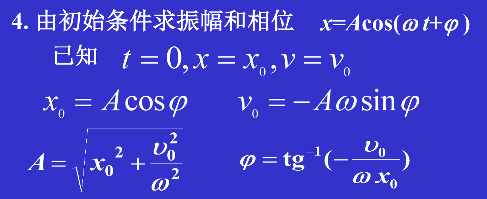
弹簧振子的能量：
E k = 1 2 m v 2 = 1 2 m A 2 ω 2 sin 2 ( ω t + φ ) E p = 1 2 k x 2 = 1 2 k A 2 cos 2 ( ω t + φ ) \begin{aligned}
E_k &= \frac{1}{2}mv^2 = \frac{1}{2}mA^2\omega^2\sin^2(\omega t + \varphi)\\
E_p &= \frac{1}{2}kx^2 = \frac{1}{2}kA^2\cos^2(\omega t + \varphi)
\end{aligned}
E k E p = 2 1 m v 2 = 2 1 m A 2 ω 2 sin 2 ( ω t + φ ) = 2 1 k x 2 = 2 1 k A 2 cos 2 ( ω t + φ )
由于ω = k m \omega = \sqrt{\frac{k}{m}} ω = m k
E k = 1 2 m v 2 = 1 2 k A 2 sin 2 ( ω t + φ ) E p = 1 2 k x 2 = 1 2 k A 2 cos 2 ( ω t + φ ) E = E k + E p = 1 2 k A 2 E k ‾ = ω 2 π ∫ 0 2 π ω 1 2 k A 2 sin 2 ( ω t + φ ) d t = 1 4 k A 2 = E p ‾ \begin{aligned}
E_k &= \frac{1}{2}mv^2 = \frac{1}{2}kA^2\sin^2(\omega t + \varphi)\\
E_p &= \frac{1}{2}kx^2 = \frac{1}{2}kA^2\cos^2(\omega t + \varphi)\\
\color{red}{E} &\color{red} = E_k + E_p = \frac{1}{2}kA^2\\
\overline{E_k} &= \frac{\omega}{2\pi}\int_{0}^{\frac{2\pi}{\omega}} \frac{1}{2}kA^2\sin^2(\omega t + \varphi)\mathrm{d}t = \frac{1}{4}kA^2 = \overline{E_p}
\end{aligned}
E k E p E E k = 2 1 m v 2 = 2 1 k A 2 sin 2 ( ω t + φ ) = 2 1 k x 2 = 2 1 k A 2 cos 2 ( ω t + φ ) = E k + E p = 2 1 k A 2 = 2 π ω ∫ 0 ω 2 π 2 1 k A 2 sin 2 ( ω t + φ ) d t = 4 1 k A 2 = E p
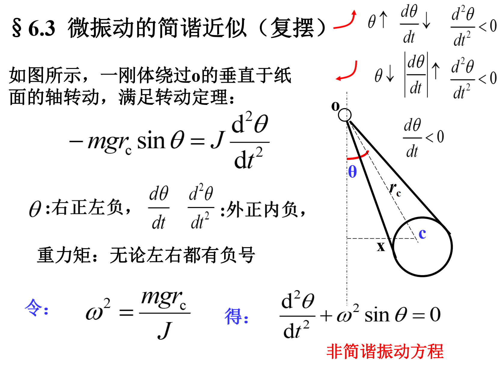
重力矩 = 转动惯量 × 角加速度 重力矩=转动惯量\times角加速度 重 力 矩 = 转 动 惯 量 × 角 加 速 度
− m g r c sin θ = J d 2 θ d t 2 -mgr_c\sin\theta=J\frac{\mathrm{d}^2\theta}{\mathrm{d}t^2}
− m g r c sin θ = J d t 2 d 2 θ
令ω 2 = m g r c J \omega^2=\frac{mgr_c}{J} ω 2 = J m g r c
d 2 θ d t 2 + ω 2 sin θ = 0 \frac{\mathrm{d}^2\theta}{\mathrm{d}t^2}+\omega^2\sin\theta=0
d t 2 d 2 θ + ω 2 sin θ = 0
当θ \theta θ sin θ ≈ θ \sin\theta\approx\theta sin θ ≈ θ θ \theta θ
如果r c = l , J = m l 2 r_c = l, J=ml^2 r c = l , J = m l 2 ω = g l \omega=\sqrt{\frac{g}{l}} ω = l g
也可以用能量法：
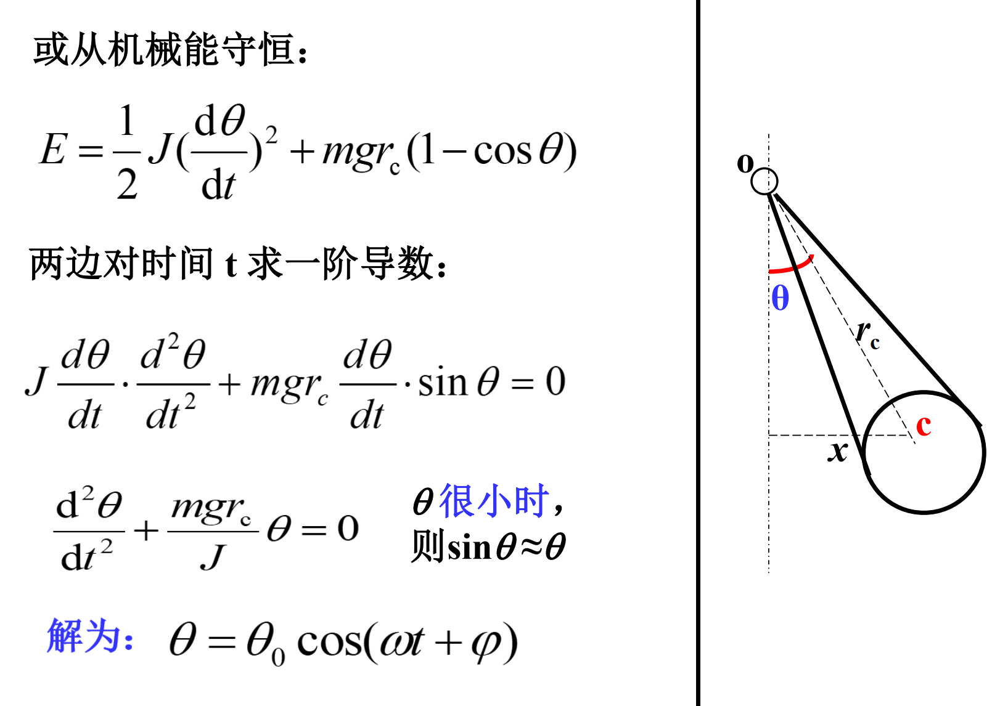
使用振幅矢量法+余弦定理：
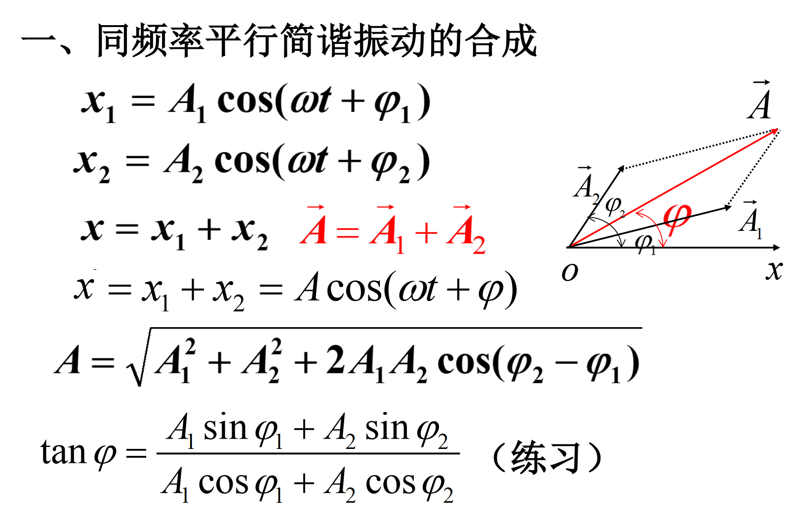
或者用三角变换推导。
对于振动：
{ x 1 = A cos ω 1 t x 2 = A cos ω 2 t \begin{cases}
x_1 = A\cos\omega_1t\\
x_2 = A\cos\omega_2t
\end{cases} { x 1 = A cos ω 1 t x 2 = A cos ω 2 t
应用和差化积，有
x = x 1 + x 2 = 2 A cos ω 2 − ω 1 2 t cos ω 2 + ω 1 2 t x = x_1 + x_2 = 2A\cos\frac{\omega_2 - \omega_1}{2}t\cos\frac{\omega_2 + \omega_1}{2}t
x = x 1 + x 2 = 2 A cos 2 ω 2 − ω 1 t cos 2 ω 2 + ω 1 t
当∣ ω 2 − ω 1 ∣ ≪ ω 2 + ω 1 \left|\omega_2 - \omega_1\right|\ll \omega_2 + \omega_1 ∣ ω 2 − ω 1 ∣ ≪ ω 2 + ω 1
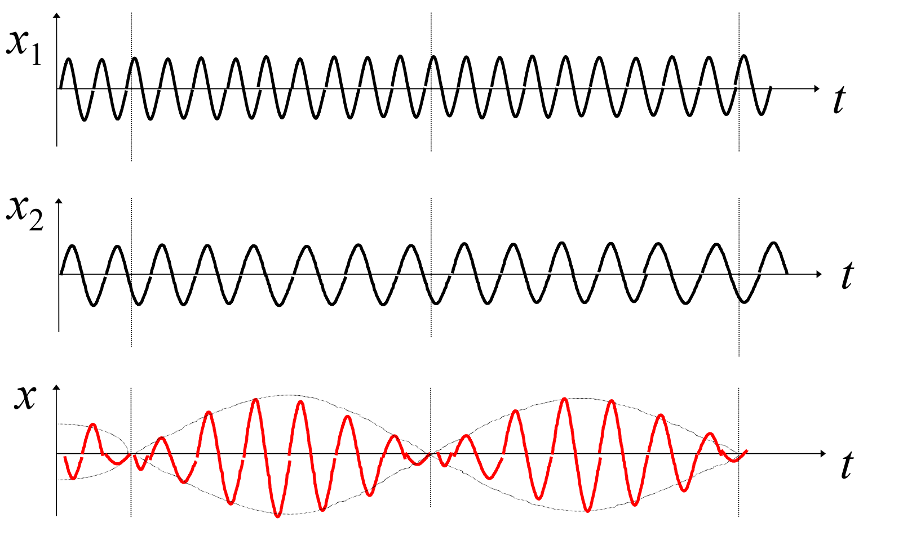
拍：∣ A ( t ) ∣ = ∣ 2 A cos ω 2 − ω 1 2 t ∣ \left|A(t)\right| = \left|2A\cos\frac{\omega_2 - \omega_1}{2}t\right| ∣ A ( t ) ∣ = ∣ ∣ ∣ 2 A cos 2 ω 2 − ω 1 t ∣ ∣ ∣ ν = ∣ ω 2 − ω 1 ∣ \nu = \left|\omega_2 - \omega_1\right| ν = ∣ ω 2 − ω 1 ∣ 2 2 2
{ x = A 1 cos ( ω t + φ 1 ) y = A 2 cos ( ω t + φ 2 ) \begin{cases}
x = A_1\cos(\omega t + \varphi_1)\\
y = A_2\cos(\omega t + \varphi_2)
\end{cases} { x = A 1 cos ( ω t + φ 1 ) y = A 2 cos ( ω t + φ 2 )
暴力推导可得到（不要求）：
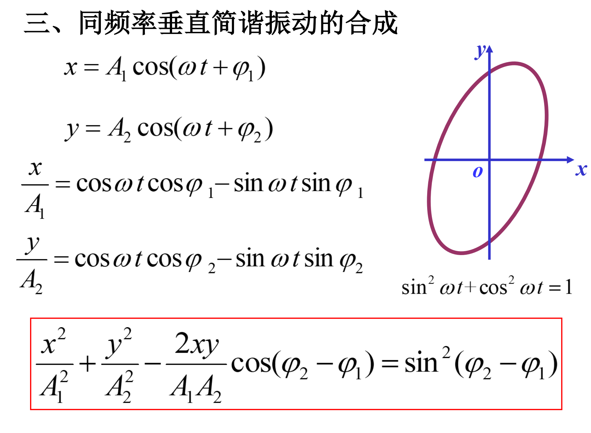
观察形式发现，振动轨迹为一个（斜着）的椭圆（可退化为正椭圆、线段等）。
φ 1 = φ 2 + 2 k π ⟹ cos ( φ 2 − φ 1 ) = 1 , sin 2 ( φ 2 − φ 1 ) = 0 ⟹ x A 1 − y A 2 = 0 \varphi_1 = \varphi_2 + 2k\pi \implies\cos(\varphi_2 - \varphi_1) = 1, \sin^2(\varphi_2 - \varphi_1) = 0\implies \frac{x}{A_1} - \frac{y}{A_2}=0 φ 1 = φ 2 + 2 k π ⟹ cos ( φ 2 − φ 1 ) = 1 , sin 2 ( φ 2 − φ 1 ) = 0 ⟹ A 1 x − A 2 y = 0 φ 1 = φ 2 + ( 2 k + 1 ) π \varphi_1 = \varphi_2 + (2k+1)\pi φ 1 = φ 2 + ( 2 k + 1 ) π φ 2 − φ 1 = π 2 ⟹ cos ( φ 2 − φ 1 ) = 0 , sin 2 ( φ 2 − φ 1 ) = 1 ⟹ x 2 A 1 2 + y 2 A 2 2 = 1 \varphi_2 - \varphi_1 =\frac{\pi}{2}\implies\cos(\varphi_2 - \varphi_1) = 0, \sin^2(\varphi_2 - \varphi_1) = 1\implies \frac{x^2}{A_1^2}+\frac{y^2}{A_2^2}=1 φ 2 − φ 1 = 2 π ⟹ cos ( φ 2 − φ 1 ) = 0 , sin 2 ( φ 2 − φ 1 ) = 1 ⟹ A 1 2 x 2 + A 2 2 y 2 = 1 φ 1 − φ 2 = π 2 ⟹ cos ( φ 2 − φ 1 ) = 0 , sin 2 ( φ 2 − φ 1 ) = 1 ⟹ x 2 A 1 2 + y 2 A 2 2 = 1 \varphi_1 - \varphi_2 =\frac{\pi}{2}\implies\cos(\varphi_2 - \varphi_1) = 0, \sin^2(\varphi_2 - \varphi_1) = 1\implies \frac{x^2}{A_1^2}+\frac{y^2}{A_2^2}=1 φ 1 − φ 2 = 2 π ⟹ cos ( φ 2 − φ 1 ) = 0 , sin 2 ( φ 2 − φ 1 ) = 1 ⟹ A 1 2 x 2 + A 2 2 y 2 = 1
图像会发生变化，如果ω 1 ≈ ω 2 \omega_1\approx\omega_2 ω 1 ≈ ω 2
如果ω 1 \omega_1 ω 1 ω 2 \omega_2 ω 2
先不了解
分为摩擦阻尼（μ \mu μ 0 0 0
阻力：
R = − γ v = − γ d x d t R = -\gamma v = -\gamma \frac{\mathrm{d}x}{\mathrm{d}t}
R = − γ v = − γ d t d x
运动方程：
m d 2 x d t 2 = − k x + R = − k x − γ d x d t m\frac{\mathrm{d}^2 x}{\mathrm{d}t^2} = -kx+R = -kx - \gamma\frac{\mathrm{d}x}{\mathrm{d}t}
m d t 2 d 2 x = − k x + R = − k x − γ d t d x
弱阻尼，解这个二阶线性常系数微分方程，可以得到
x = A 0 e β t cos ( ω t + φ ) x = A_0 e^{\beta t}\cos(\omega t + \varphi)
x = A 0 e β t cos ( ω t + φ )
其中ω = ω 0 2 − β 2 , ω 0 = k m , β = γ 2 m \omega = \sqrt{\omega_0^2 - \beta^2}, \omega_0 = \sqrt{\frac{k}{m}},\beta=\frac{\gamma}{2m} ω = ω 0 2 − β 2 , ω 0 = m k , β = 2 m γ β \beta β ω 0 \omega_0 ω 0
由于不是周期函数，严格来说不是振动。
准周期T = 2 π ω T = \frac{2\pi}{\omega} T = ω 2 π
临界阻尼（β = ω 0 \beta=\omega_0 β = ω 0 β > ω 0 \beta > \omega_0 β > ω 0
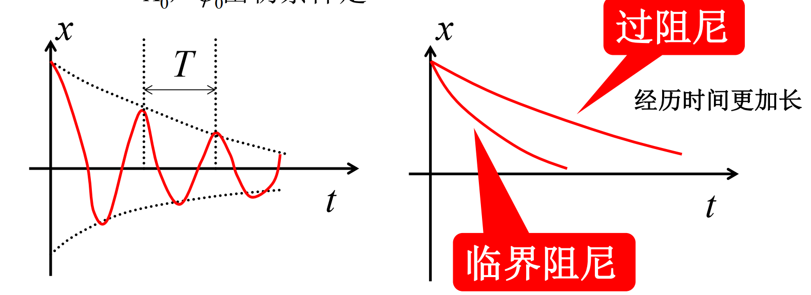
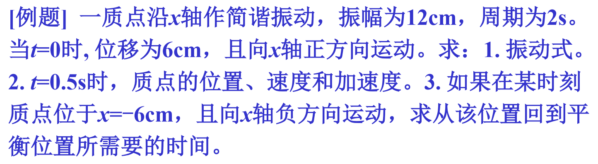
cos φ = 0.5 ⟹ φ = ± π 3 \cos\varphi = 0.5\implies \varphi = \plusmn\frac{\pi}{3} cos φ = 0 . 5 ⟹ φ = ± 3 π − sin φ > 0 ⟹ φ = − π 3 -\sin\varphi>0\implies \varphi = -\frac{\pi}{3} − sin φ > 0 ⟹ φ = − 3 π x = 0.12 cos ( π t − π 3 ) , v = − 0.12 π sin ( π t − π 3 ) , a = − 0.12 π 2 cos ( π t − π 3 ) x = 0.12\cos(\pi t -\frac{\pi}{3}), v = -0.12\pi\sin(\pi t - \frac{\pi}{3}), a = -0.12\pi^2\cos(\pi t - \frac{\pi}{3}) x = 0 . 1 2 cos ( π t − 3 π ) , v = − 0 . 1 2 π sin ( π t − 3 π ) , a = − 0 . 1 2 π 2 cos ( π t − 3 π ) 代入t = 0.5 t = 0.5 t = 0 . 5
画图。
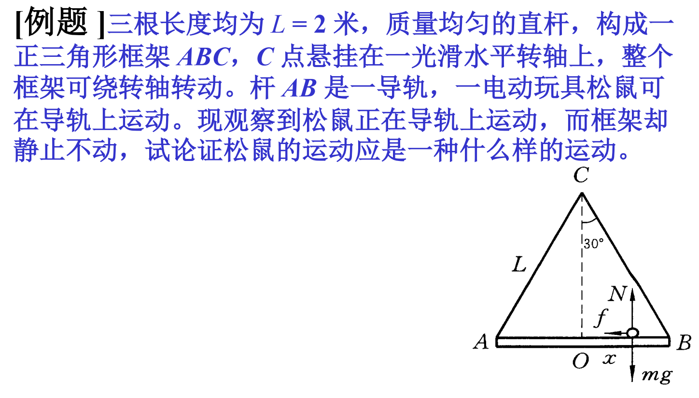
以C C C
{ 3 L 2 ⋅ f + x ⋅ m g = 0 f = m a ⟹ 3 L 2 ⋅ a + x ⋅ g = 0 \begin{aligned}
&\begin{cases}
\frac{\sqrt 3L}{2}\cdot f + x\cdot mg = 0\\
f = ma\\
\end{cases}\\
\implies &\frac{\sqrt 3L}{2}\cdot a + x\cdot g = 0
\end{aligned}
⟹ { 2 3 L ⋅ f + x ⋅ m g = 0 f = m a 2 3 L ⋅ a + x ⋅ g = 0
与
d 2 x d t 2 + ω 2 x = 0 \frac{\mathrm{d}^2 x}{\mathrm{d} t^2} + \omega^2 x = 0
d t 2 d 2 x + ω 2 x = 0
比对，可知是ω = 2 g 3 L \omega = \sqrt{\frac{2g}{\sqrt 3L}} ω = 3 L 2 g
法1（不好）:
动量守恒得出v 0 = m m + M 2 g h v_0=\frac{m}{m + M}\sqrt{2gh} v 0 = m + M m 2 g h
计算新平衡点与旧平衡点的距离Δ x = m g k \Delta x = \frac{mg}{k} Δ x = k m g
新角频率ω = k M + m \omega = \sqrt{\frac{k}{M + m}} ω = M + m k 1 2 k A 2 = 1 2 k Δ x 2 + 1 2 ( M + m ) v 0 2 ⟹ A = m 2 g 2 k 2 + 2 m 2 g h ( M + m ) k \frac{1}{2}kA^2 = \frac{1}{2}k\Delta x^2 + \frac{1}{2}(M + m)v_0^2\implies A = \sqrt{\frac{m^2g^2}{k^2}+\frac{2m^2gh}{(M+m)k}} 2 1 k A 2 = 2 1 k Δ x 2 + 2 1 ( M + m ) v 0 2 ⟹ A = k 2 m 2 g 2 + ( M + m ) k 2 m 2 g h
t = arcsin Δ x A + π 2 ω t = \frac{\arcsin\frac{\Delta x}{A} + \frac{\pi}{2}}{\omega} t = ω a r c s i n A Δ x + 2 π
法2（好，省去A A A
动量守恒得出v 0 = m m + M 2 g h v_0=\frac{m}{m + M}\sqrt{2gh} v 0 = m + M m 2 g h x 0 = − m g k x_0 = -\frac{mg}{k} x 0 = − k m g
新角频率ω = k M + m \omega = \sqrt{\frac{k}{M + m}} ω = M + m k
x 0 = A cos φ x_0 = A\cos\varphi x 0 = A cos φ v 0 = − A ω sin φ ⟹ tan φ = − v 0 x 0 ⋅ ω = k v 0 m g ω ⟹ φ = π + arctan k v 0 m g ω v_0 = -A\omega\sin\varphi\implies \tan\varphi = \frac{-v_0}{x_0\cdot \omega} = \frac{kv_0}{mg\omega}\implies \varphi = \pi + \arctan\frac{kv_0}{mg\omega} v 0 = − A ω sin φ ⟹ tan φ = x 0 ⋅ ω − v 0 = m g ω k v 0 ⟹ φ = π + arctan m g ω k v 0 t = 2 π − φ ω t = \frac{2\pi - \varphi}{\omega} t = ω 2 π − φ
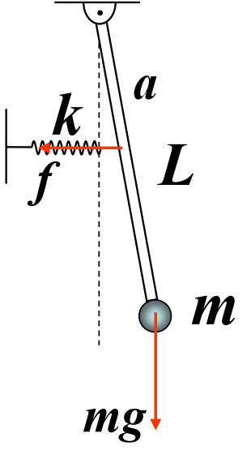
{height=200}
假设摆动角度为θ \theta θ f = − k a sin θ ≈ − k a θ ⟹ M f ≈ − k a 2 θ f = -ka\sin\theta \approx -ka\theta\implies M_f \approx -ka^2\theta f = − k a sin θ ≈ − k a θ ⟹ M f ≈ − k a 2 θ
M m = − m g ⋅ L sin θ ≈ − m g L θ M_m = -mg\cdot L\sin\theta\approx -mgL\theta M m = − m g ⋅ L sin θ ≈ − m g L θ M = M f + M m = m L 2 ⋅ β ⟹ k a 2 + m g L m L 2 θ + β = 0 ⟹ ω = k a 2 + m g L m L 2 ⟹ T = 2 π m L 2 k a 2 + m g L M=M_f+M_m=mL^2\cdot \beta\implies \frac{ka^2+mgL}{mL^2}\theta+\beta=0\implies \omega = \sqrt{\frac{ka^2+mgL}{mL^2}}\implies T = 2\pi \sqrt{\frac{mL^2}{ka^2+mgL}} M = M f + M m = m L 2 ⋅ β ⟹ m L 2 k a 2 + m g L θ + β = 0 ⟹ ω = m L 2 k a 2 + m g L ⟹ T = 2 π k a 2 + m g L m L 2
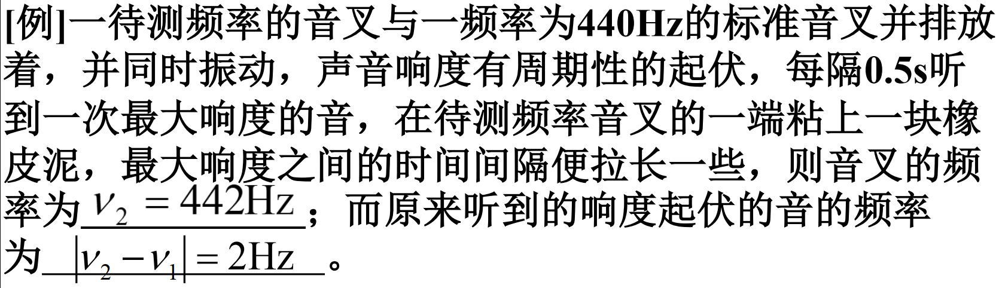
∣ ν 2 − ν 1 ∣ = 1 / 0.5 = 2 H z \left|\nu_2 - \nu_1\right|=1/0.5=2\mathrm{Hz} ∣ ν 2 − ν 1 ∣ = 1 / 0 . 5 = 2 H z ν 2 \nu_2 ν 2 ν \nu ν 440 H z 440\mathrm{Hz} 4 4 0 H z
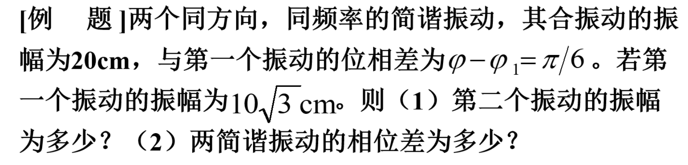
用振幅矢量法：
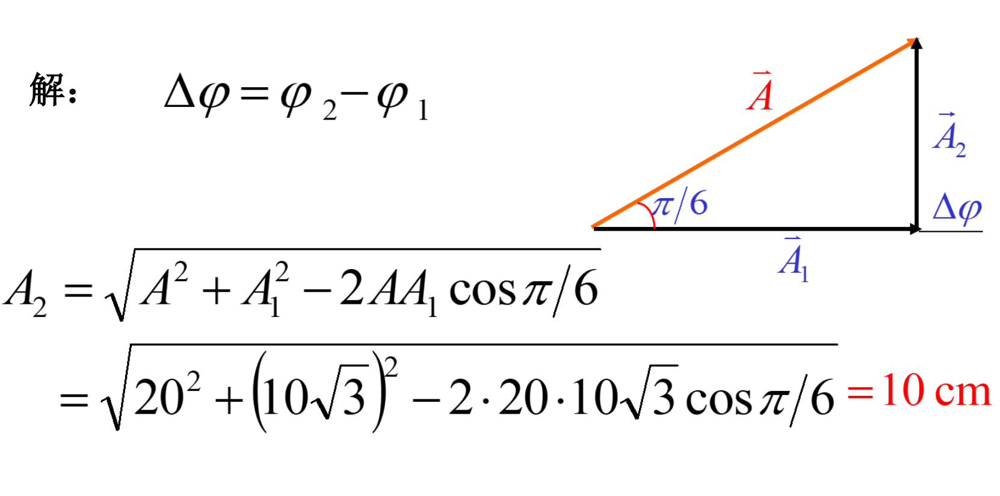
阻尼对振幅影响大，对周期影响小。
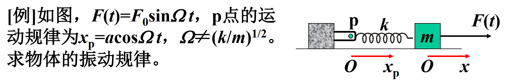
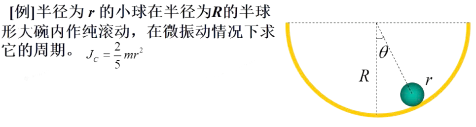
分类：横波（波峰、波谷），纵波（稠密区域，稀疏区域）
水面波又是横波又是纵波，和深度有关，作圆周或者椭圆周运动。
波线：传播方向；
波阵面：同时到达的位置连成的面；一般（均匀介质中）与波线垂直；
波前：最前面的波阵面；
简谐波：每一点都是同频率的简谐振动；
相速度（波速）u u u
角波数：k = 2 π λ k=\frac{2\pi}{\lambda} k = λ 2 π λ \lambda λ ω = 2 π T \omega=\frac{2\pi}{T} ω = T 2 π
行波：运动状态沿着固定方向传播；筑波：不一定传播运动状态。
运动学方程（波动式）：x = 0 x=0 x = 0 y 0 = A cos ( ω t + φ ) y_0=A\cos(\omega t + \varphi) y 0 = A cos ( ω t + φ ) x x x t t t x = 0 x=0 x = 0 t − x u t-\frac{x}{u} t − u x y = A cos ( ω ( t − x u ) + φ ) y=A\cos(\omega (t - \frac{x}{u}) + \varphi) y = A cos ( ω ( t − u x ) + φ ) y = A cos ( ω ( t − x u ) + φ ) = A cos ( 2 π ν ( t − x u ) + φ ) = A cos ( 2 π ( t T − x λ ) + φ ) = A cos ( k ( λ T t − x ) + φ ) = A cos ( k ( u t − x ) + φ ) \begin{aligned}
y&=A\cos(\omega(t-\frac{x}{u})+\varphi)\\
&=A\cos(2\pi\nu(t - \frac{x}{u})+\varphi)\\
&=A\cos(2\pi(\frac{t}{T} - \frac{x}{\lambda}) + \varphi)\\
&=A\cos(k(\frac{\lambda}{T}t - x) + \varphi)\\
&=A\cos(k(ut - x) + \varphi)\\
\end{aligned} y = A cos ( ω ( t − u x ) + φ ) = A cos ( 2 π ν ( t − u x ) + φ ) = A cos ( 2 π ( T t − λ x ) + φ ) = A cos ( k ( T λ t − x ) + φ ) = A cos ( k ( u t − x ) + φ )
也可以：y = A cos ( ω ( t − x u ) + φ ) = A cos ( ω t − 2 π T ⋅ T λ x + φ ) = A cos ( ω t − k x + φ ) \begin{aligned}
y&=A\cos(\omega(t-\frac{x}{u})+\varphi)\\
&=A\cos(\omega t - \frac{2\pi}{T}\cdot\frac{T}{\lambda}x+\varphi)\\
&=A\cos(\omega t - kx+\varphi)
\end{aligned} y = A cos ( ω ( t − u x ) + φ ) = A cos ( ω t − T 2 π ⋅ λ T x + φ ) = A cos ( ω t − k x + φ )
波可以表示为双变量函数y = f ( t − x u ) y = f(t - \frac{x}{u}) y = f ( t − u x )
简谐行波的波动式：
y = A cos ( ω ( t − x u ) + φ ) y=A\cos(\omega (t - \frac{x}{u})+\varphi)
y = A cos ( ω ( t − u x ) + φ )
固定x = x 0 x=x_0 x = x 0 x 0 x_0 x 0
固定t = t 0 t=t_0 t = t 0 t 0 t_0 t 0
固定Δ x = u Δ t \Delta x = u\Delta t Δ x = u Δ t y ( x + Δ x , t + Δ t ) = A cos ( ω ( t + Δ t − x + u Δ t u ) + φ ) = A cos ( ω ( t − x u ) + φ ) = y ( x , t ) \begin{aligned}y(x+\Delta x, t + \Delta t) &= A\cos(\omega(t+\Delta t - \frac{x + u\Delta t}{u}) + \varphi)\\
&=A\cos(\omega(t-\frac{x}{u}) + \varphi)=y(x,t)\end{aligned} y ( x + Δ x , t + Δ t ) = A cos ( ω ( t + Δ t − u x + u Δ t ) + φ ) = A cos ( ω ( t − u x ) + φ ) = y ( x , t )
反映了振动状态的传播。
纵波波速：u = E ρ u = \sqrt\frac{E}{\rho} u = ρ E u = G ρ u = \sqrt\frac{G}{\rho} u = ρ G E E E G G G E > 2 G E>2G E > 2 G G = 0 G=0 G = 0
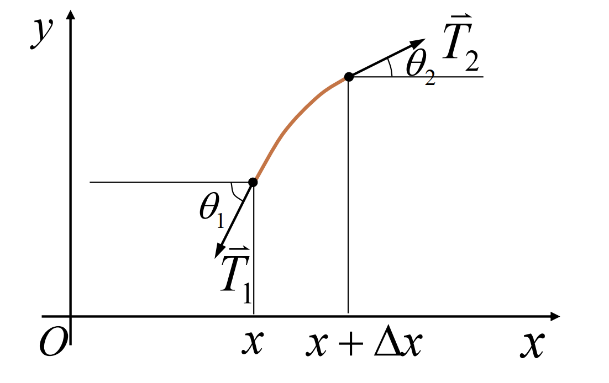
由于水平方向平衡，有$$T_1\cos\theta_1=T_2\cos\theta_2=T$$
竖直方向：$$\begin{equation}T_y = T_2\sin\theta_2-T_1\sin\theta_1 = T(\tan\theta_2-\tan\theta_1)\end{equation}$$
综合tan θ 1 = ∂ y ∂ x ∣ x \tan\theta_1 = \frac{\partial y}{\partial x}|_{x} tan θ 1 = ∂ x ∂ y ∣ x tan θ 2 = ∂ y ∂ x ∣ x + Δ x \tan\theta_2 = \frac{\partial y}{\partial x}|_{x+\Delta x} tan θ 2 = ∂ x ∂ y ∣ x + Δ x
( 1 ) = T ( ∂ y ∂ x ∣ x + Δ x − ∂ y ∂ x ∣ x ) = T ∂ 2 y ∂ x 2 ∣ x + θ Δ x Δ x = ρ l Δ x ∂ 2 y ∂ t 2 \begin{aligned}(1)&=T(\frac{\partial y}{\partial x}\bigg|_{x+\Delta x} - \frac{\partial y}{\partial x}\bigg|_{x})\\&=T\frac{\partial^2 y}{\partial x^2}\bigg|_{x+\theta\Delta x}\Delta x=\rho_l\Delta x\frac{\partial^2 y}{\partial t^2}\end{aligned}
( 1 ) = T ( ∂ x ∂ y ∣ ∣ ∣ ∣ ∣ x + Δ x − ∂ x ∂ y ∣ ∣ ∣ ∣ ∣ x ) = T ∂ x 2 ∂ 2 y ∣ ∣ ∣ ∣ ∣ x + θ Δ x Δ x = ρ l Δ x ∂ t 2 ∂ 2 y
令Δ x → 0 \Delta x\to 0 Δ x → 0
∂ 2 y ∂ t 2 − T ρ l ∂ 2 y ∂ x 2 = 0 (2) \frac{\partial^2 y}{\partial t^2}-\frac{T}{\rho_l}\frac{\partial^2 y}{\partial x^2}=0\tag{2}
∂ t 2 ∂ 2 y − ρ l T ∂ x 2 ∂ 2 y = 0 ( 2 )
这就是波动方程。
根据$$\begin{cases}\frac{\partial^2 y}{\partial t^2} = -\omega2y\\frac{\partial 2 y}{\partial x^2} = -k2y\\omega=ku\end{cases}\implies\frac{\frac{\partial 2 y}{\partial t2}}{\frac{\partial 2 y}{\partial x2}}=u 2$$
有$$(2)\implies u=\sqrt{\frac{T}{\rho_l}}$$
由于波速不同而分开来的波，如水面波、分光镜。机械波一般不会色散（速度一样）。
以横波为例，设$$y=A\cos(\omega t - kx)$$
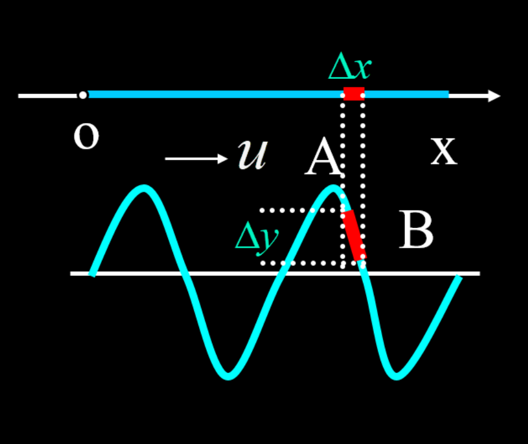
{height=300}
对于x x x Δ x \Delta x Δ x 小幅振动 （T基本水平，且∂ y ∂ x = o ( 1 ) \frac{\partial y}{\partial x} = o(1) ∂ x ∂ y = o ( 1 )
将∂ y ∂ t \frac{\partial y}{\partial t} ∂ t ∂ y ∂ y ∂ x \frac{\partial y}{\partial x} ∂ x ∂ y
{ Δ E k = 1 2 ρ l Δ x A 2 ω 2 sin 2 ( ω t − k x ) Δ E p = 1 2 T Δ x A 2 k 2 sin 2 ( ω t − k x ) (1) \begin{cases}\Delta E_k = \frac{1}{2}\rho_l\Delta xA^2\omega^2\sin^2(\omega t - kx)\\\Delta E_p = \frac{1}{2}T\Delta xA^2k^2\sin^2(\omega t - kx)\end{cases}\tag 1
{ Δ E k = 2 1 ρ l Δ x A 2 ω 2 sin 2 ( ω t − k x ) Δ E p = 2 1 T Δ x A 2 k 2 sin 2 ( ω t − k x ) ( 1 )
根据$$\begin{cases}u = \frac{\omega}{k}\u=\sqrt\frac{T}{\rho_l}\end{cases}\implies \omega2\rho_l=k 2T\tag 2$$
结合( 1 ) (1) ( 1 ) ( 2 ) (2) ( 2 ) 2\omega 2\sin^2(\omega t-kx)$$
所以总能量$$\Delta E = \rho_l\Delta xA2\omega 2\sin^2(\omega t-kx)$$
能量密度 ：单位体积的能量
ε = ε p + ε k = Δ E Δ x ⋅ S = ρ A 2 ω 2 sin 2 ( ω t − k x ) ε ‾ = 1 2 ρ A 2 ω 2 \begin{aligned}\varepsilon&=\varepsilon_p+\varepsilon_k=\frac{\Delta E}{\Delta x\cdot S}=\rho A^2\omega^2\sin^2(\omega t-kx)\\\overline{\varepsilon}&=\frac{1}{2}\rho A^2\omega^2\end{aligned}
ε ε = ε p + ε k = Δ x ⋅ S Δ E = ρ A 2 ω 2 sin 2 ( ω t − k x ) = 2 1 ρ A 2 ω 2
所以势能和动能同时达到最大，能量一堆一堆传播。
能流：单位时间流过的能量（P P P
能流密度（矢量） ：单位时间通过的能量密度（单位面积能流）
i = P S = ε u S S = ε u ⟹ i ⃗ = ε u ⃗ i=\frac{P}{S}=\frac{\varepsilon uS}{S}=\varepsilon u\implies \vec{i}=\varepsilon\vec{u}
i = S P = S ε u S = ε u ⟹ i = ε u
波的强度（波强） ：能流密度的时间平均
I = i ‾ = 1 T ∫ 0 T ε u d t = 1 2 ρ A 2 ω 2 u = 1 2 z A 2 ω 2 I=\overline i =\frac{1}{T}\int_0^T\varepsilon u\mathrm{d} t=\frac{1}{2}\rho A^2\omega^2u=\frac{1}{2}zA^2\omega^2
I = i = T 1 ∫ 0 T ε u d t = 2 1 ρ A 2 ω 2 u = 2 1 z A 2 ω 2
其中z = ρ u z=\rho u z = ρ u
利用I = 1 2 ρ A 2 ω 2 u I=\frac{1}{2}\rho A^2\omega^2 u I = 2 1 ρ A 2 ω 2 u ρ , ω , u \rho, \omega, u ρ , ω , u
{ A = c o n s t a n t (平面波) A ∝ 1 r (圆柱波) A ∝ 1 r （球波） \begin{cases}
A=constant \qquad\text{(平面波)}\\
A\propto \frac{1}{\sqrt r} \qquad\text{(圆柱波)}\\
A\propto \frac{1}{r} \qquad\text{（球波）}
\end{cases} ⎩ ⎪ ⎪ ⎨ ⎪ ⎪ ⎧ A = c o n s t a n t ( 平面波 ) A ∝ r 1 ( 圆柱波 ) A ∝ r 1 （球波）
声强（不要求）：声音的波强；人只能获取I ∈ [ 1 0 − 12 , 1 ] W / m 2 I\in[10^{-12}, 1]\mathrm{W/m^2} I ∈ [ 1 0 − 1 2 , 1 ] W / m 2 ν ∈ [ 20 , 20000 ] H z \nu\in[20, 20000]\mathrm{Hz} ν ∈ [ 2 0 , 2 0 0 0 0 ] H z
声强级（不要求）：L = 10 ⋅ lg I I 0 L=10\cdot \lg\frac{I}{I_0} L = 1 0 ⋅ lg I 0 I d B \mathrm{dB} d B I 0 = 1 0 − 12 W / m 2 I_0=10^{-12}\mathrm{W/m^2} I 0 = 1 0 − 1 2 W / m 2
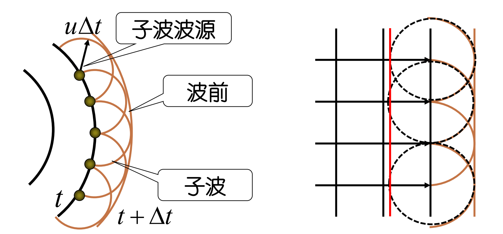
波上每一点都是新的波源，每一点波阵面的公切线（包迹）就是新的波阵面。
这可以解释波的衍射、反射和折射 。
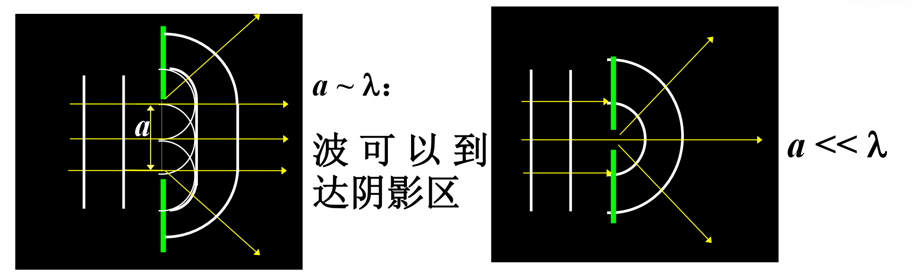
衍射
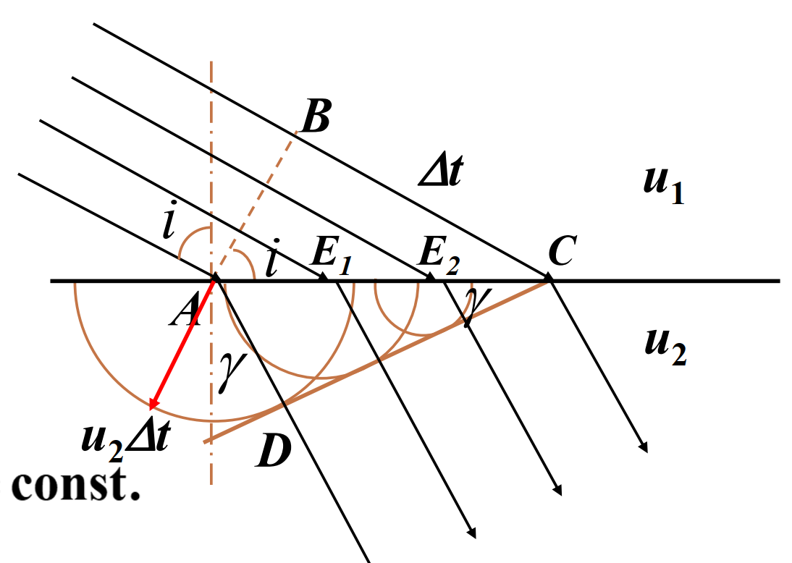
{height=300}
折射
假设击中界面Δ t \Delta t Δ t 1 1 1 u 1 Δ t u_1 \Delta t u 1 Δ t 2 2 2 u 2 Δ t u_2\Delta t u 2 Δ t
u 1 Δ t sin i = u 2 Δ t sin γ ⟹ sin γ sin i = u 2 u 1 = n 1 n 2 ⟹ n 1 sin i = n 2 sin γ \begin{aligned}
&\frac{u_1\Delta t}{\sin i}=\frac{u_2\Delta t}{\sin\gamma}\\
\implies&\frac{\sin\gamma}{\sin i}=\frac{u_2}{u_1}=\frac{n_1}{n_2}\\
\implies& n_1\sin i = n_2\sin\gamma
\end{aligned} ⟹ ⟹ sin i u 1 Δ t = sin γ u 2 Δ t sin i sin γ = u 1 u 2 = n 2 n 1 n 1 sin i = n 2 sin γ
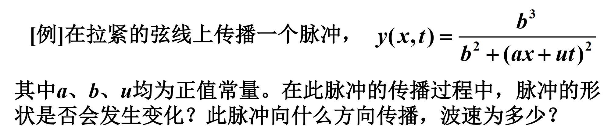
y ( x , t ) = b 3 b 2 + u 2 ( t + a x u ) 2 y(x,t)=\frac{b^3}{b^2+u^2(t+\frac{ax}{u})^2}
y ( x , t ) = b 2 + u 2 ( t + u a x ) 2 b 3
所以
y ( x , t ) = y ( x − u a Δ t , t + Δ t ) y(x,t)=y(x-\frac{u}{a}\Delta t,t+\Delta t)
y ( x , t ) = y ( x − a u Δ t , t + Δ t )
所以波速v = Δ x Δ t = − u a v=\frac{\Delta x}{\Delta t} = -\frac{u}{a} v = Δ t Δ x = − a u
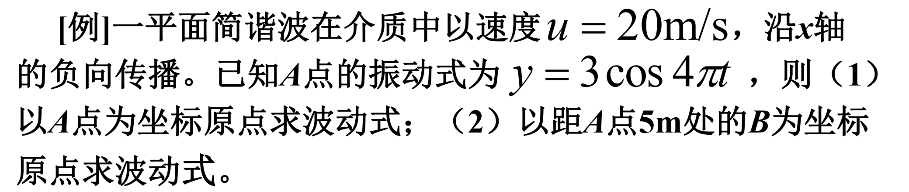
( 1 ) (1) ( 1 ) x x x x u \frac{x}{u} u x
( 2 ) (2) ( 2 ) 5 m 5m 5 m
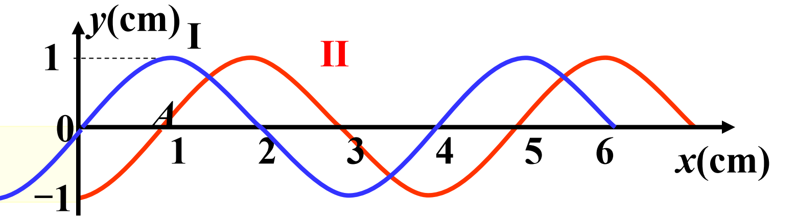
T > 1 s T>1s T > 1 s 1 4 \frac{1}{4} 4 1 A = 0.01 A=0.01 A = 0 . 0 1 u = 0.02 u = 0.02 u = 0 . 0 2 T = 2 T=2 T = 2
A点振动式：$$y=0.01\cos(\pi t)$$
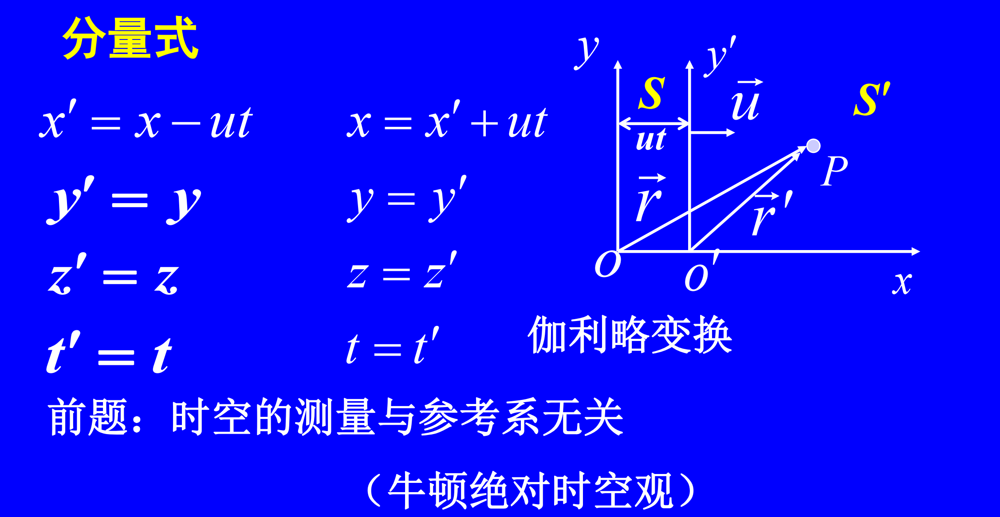
牛顿的绝对时空观：时空的测量与参考系无关 。
力学相对性原理：力学规律在惯性系下形式相同 。这意味着在任何惯性系下无法确定所在惯性系的速度。
根据伽利略变换，若S ′ S' S ′ S S S u ⃗ \vec u u
x ⃗ ′ = x ⃗ − u ⃗ t t ′ = t \begin{aligned}
\vec x' &= \vec x - \vec ut\\
t'&=t
\end{aligned} x ′ t ′ = x − u t = t
牛顿绝对时空观认为，力、质量、加速度是绝对的，即：
g ⃗ ′ = g ⃗ a ⃗ ′ = a ⃗ m ′ = m \begin{aligned}
\vec g' &= \vec g\\
\vec a' &= \vec a\\
m' &= m
\end{aligned} g ′ a ′ m ′ = g = a = m
这说明，一切惯性系都是平权的 。
1865年，麦克斯韦得出：
c = 1 ε 0 μ 0 ≈ 3.0 × 1 0 8 ( m / s ) c=\frac{1}{\sqrt{\varepsilon_0\mu_0}}\approx 3.0\times 10^8 (m / s)
c = ε 0 μ 0 1 ≈ 3 . 0 × 1 0 8 ( m / s )
其中ε 0 \varepsilon_0 ε 0 μ 0 \mu_0 μ 0
根据伽利略变换，光的传播将不满足相对性原理 （各向同性）。
于是人们认为麦克斯韦方程只在以太系内成立。
1887年，通过干涉仪测量以太系运动速度，但得到零结果（干涉条纹未移动）。
还有一些电磁学理论（和麦克斯韦理论相关）和牛顿绝对时空观矛盾。
伽利略变换、相对性原理和麦克斯韦电磁学理论之间存在矛盾。
一切物理规律在任何惯性参考系中形式相同；
光在真空中传播的速度具有相同的数值，和光源速度和惯性系无关。
在一个参考系中是同时，在另一个参考系中不一定
规律：一个参考系中同事发生的两个事件，相对这个参考系运动的另一个参考系看，后方事件先发生 。
动钟变慢原理：
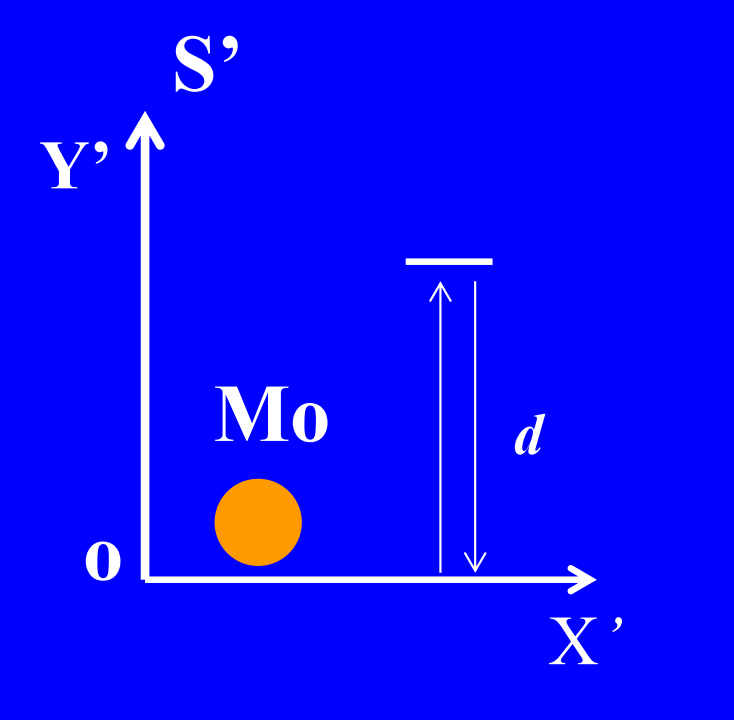
{height=200}
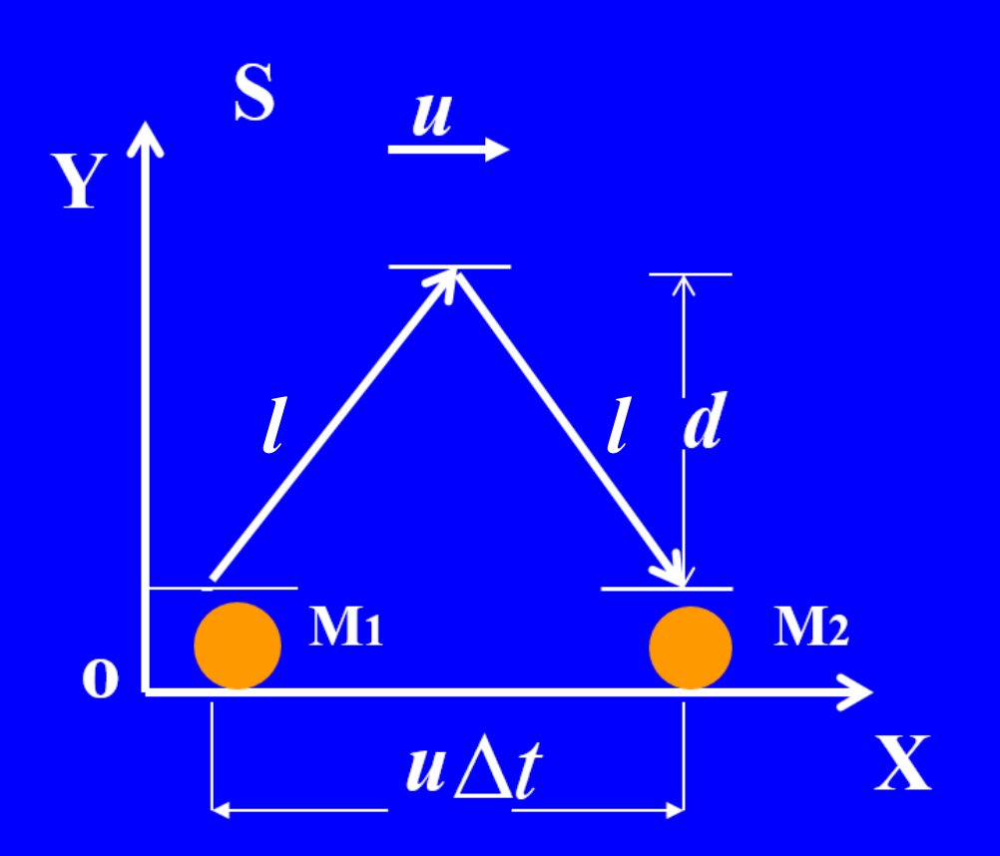
{height=200}
在S ′ S' S ′ τ 0 = 2 d c \tau_0=\frac{2d}{c} τ 0 = c 2 d
此时S ′ S' S ′ S S S u u u
在S S S Δ t \Delta t Δ t
解得：
Δ t = 2 d c ⋅ 1 1 − u 2 c 2 = τ 0 1 − u 2 c 2 \Delta t = \frac{2d}{c}\cdot\frac{1}{\sqrt{1 - \frac{u^2}{c^2}}} = \frac{\tau_0}{\sqrt{1-\frac{u^2}{c^2}}}
Δ t = c 2 d ⋅ 1 − c 2 u 2 1 = 1 − c 2 u 2 τ 0
所以有Δ t ≥ τ 0 \Delta t\geq\tau_0 Δ t ≥ τ 0 S ′ S' S ′ S S S
不仅是光脉冲钟，一切钟都会发生这样的相对论效应。
注意：在S S S S ′ S' S ′ S ′ S' S ′ S ′ S' S ′
比如说S S S S ′ S' S ′ 4 4 4 S S S 5 5 5 S ′ S' S ′ S ′ S' S ′ 4 4 4 S S S 5 5 5 同时性是相对的 ，S S S S ′ S' S ′
爱因斯坦认为：任意物体在时空中以光速 运动。
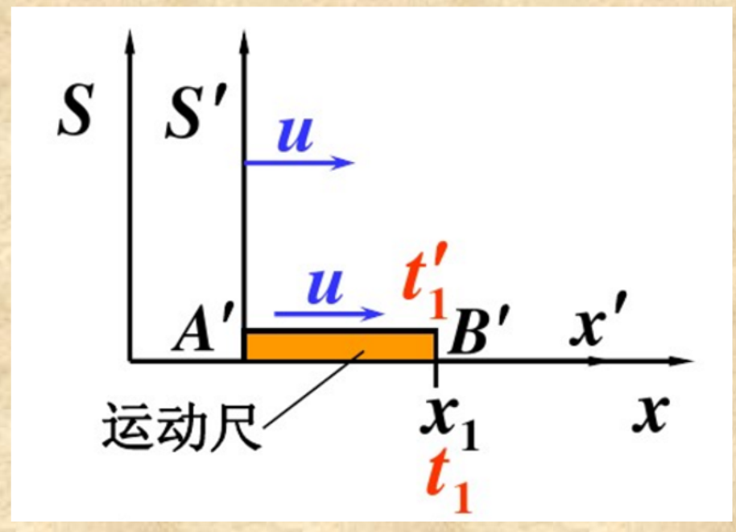
在S ′ S' S ′ Δ t ′ \Delta t' Δ t ′ B ′ B' B ′ x 1 x_1 x 1 A ′ A' A ′ x 1 x_1 x 1 l ′ = u Δ t ′ l'=u\Delta t' l ′ = u Δ t ′ S S S Δ t \Delta t Δ t l = u Δ t l=u\Delta t l = u Δ t
由于在S S S Δ t \Delta t Δ t Δ t ′ = Δ t 1 − u 2 c 2 \Delta t' = \frac{\Delta t}{\sqrt{1 - \frac{u^2}{c^2}}} Δ t ′ = 1 − c 2 u 2 Δ t l ′ = l 1 1 − u 2 c 2 l' = l\frac{1}{\sqrt{1 - \frac{u^2}{c^2}}} l ′ = l 1 − c 2 u 2 1 l ′ > l l'>l l ′ > l l ′ l' l ′
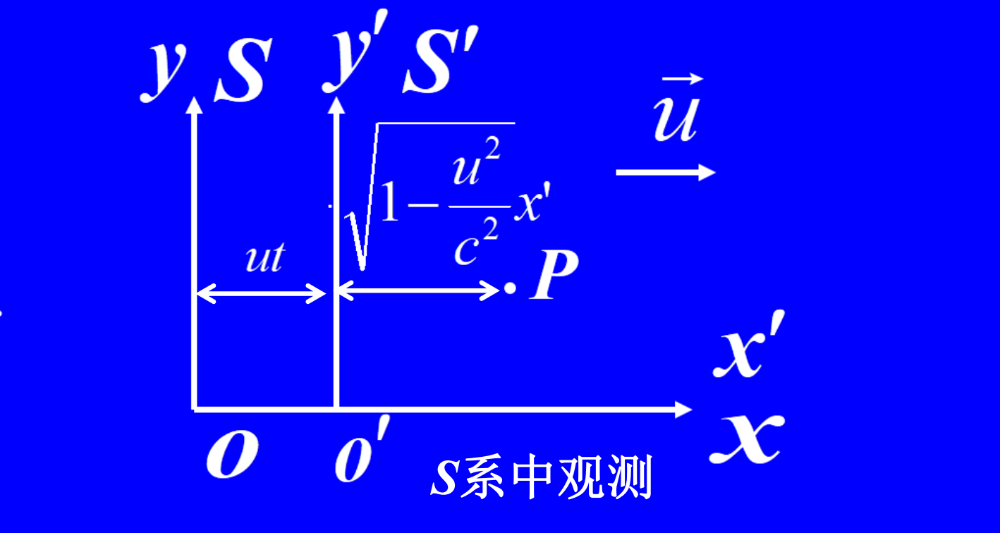
根据长度收缩原理，有：
x = u t + x ′ 1 − u 2 c 2 x = ut + \frac{x'}{\sqrt{1-\frac{u^2}{c^2}}}
x = u t + 1 − c 2 u 2 x ′
即$$x’ = \frac{x-ut}{\sqrt{1-\frac{u2}{c 2}}}$$
令β = u c , γ = 1 1 − β 2 \beta = \frac{u}{c}, \gamma = \sqrt\frac{1}{1-\beta^2} β = c u , γ = 1 − β 2 1
自然，y = y ′ , z = z ′ y=y',z=z' y = y ′ , z = z ′
在S ′ S' S ′
x = γ ( x ′ + u t ′ ) x = \gamma(x' + ut')
x = γ ( x ′ + u t ′ )
与$$x’=\gamma(x-ut)$$
联立
x = γ ( γ ( x − u t ) + u t ′ ) ⟹ x = γ 2 ( x − u t ) + γ u t ′ ⟹ x ( 1 − γ 2 ) + γ 2 u t = γ u t ′ ⟹ t ′ = γ ( − u c 2 x + t ) \begin{aligned}
&x = \gamma(\gamma(x-ut)+ut')\\
\implies&x=\gamma^2(x-ut)+\gamma ut'\\
\implies&x(1-\gamma^2)+\gamma^2ut=\gamma ut'\\
\implies& t'=\gamma(-\frac{u}{c^2}x + t)
\end{aligned} ⟹ ⟹ ⟹ x = γ ( γ ( x − u t ) + u t ′ ) x = γ 2 ( x − u t ) + γ u t ′ x ( 1 − γ 2 ) + γ 2 u t = γ u t ′ t ′ = γ ( − c 2 u x + t )
同理可得$$t=\gamma(\frac{ux}{c^2}+t’)$$
至此，可以得出洛伦兹变换
{ x ′ = γ ( x − u t ) y ′ = y z ′ = z t ′ = γ ( t − u x c 2 ) = γ ( t − β c x ) \begin{cases}
x' = \gamma(x-ut)\\
y'=y\\
z'=z\\
t'=\gamma(t-\frac{ux}{c^2})=\gamma(t-\frac{\beta}{c} x)
\end{cases} ⎩ ⎪ ⎪ ⎪ ⎪ ⎨ ⎪ ⎪ ⎪ ⎪ ⎧ x ′ = γ ( x − u t ) y ′ = y z ′ = z t ′ = γ ( t − c 2 u x ) = γ ( t − c β x )
逆变换
{ x = γ ( x ′ + u t ) y = y ′ z = z ′ t = γ ( t ′ + β c x ′ ) \begin{cases}
x = \gamma(x'+ut)\\
y=y'\\
z=z'\\
t=\gamma(t'+\frac{\beta}{c} x')
\end{cases} ⎩ ⎪ ⎪ ⎪ ⎪ ⎨ ⎪ ⎪ ⎪ ⎪ ⎧ x = γ ( x ′ + u t ) y = y ′ z = z ′ t = γ ( t ′ + c β x ′ )
v x ′ = d x ′ d t ′ = d x ′ d t ⋅ d t d t ′ v_x' = \frac{\mathrm{d}x'}{\mathrm{d}t'} = \frac{\mathrm{d}x'}{\mathrm{d}t}\cdot \frac{\mathrm{d}t}{\mathrm{d}t'}
v x ′ = d t ′ d x ′ = d t d x ′ ⋅ d t ′ d t
根据$$\begin{cases}
有$$v_x’=\gamma(v_x-u)/[\gamma(1-\frac{u}{c^2}v_x)]=$$
解得
v x ′ = v x − u 1 − u c 2 v x v_x'=\frac{v_x-u}{1-\frac{u}{c^2}v_x}
v x ′ = 1 − c 2 u v x v x − u
对于y y y
v y ′ = d y ′ d t d t ′ d t = d y d t d t ′ d t = v y γ ( 1 − u c 2 v x ) v_y' = \frac{\frac{\mathrm{d}y'}{\mathrm{d}t}}{\frac{\mathrm{d}t'}{\mathrm{d}t}} = \frac{\frac{\mathrm{d}y}{\mathrm{d}t}}{\frac{\mathrm{d}t'}{\mathrm{d}t}} = \frac{v_y}{\gamma(1-\frac{u}{c^2}v_x)}
v y ′ = d t d t ′ d t d y ′ = d t d t ′ d t d y = γ ( 1 − c 2 u v x ) v y
同理有
v z ′ = v z γ ( 1 − u c 2 v x ) v_z'=\frac{v_z}{\gamma(1-\frac{u}{c^2}v_x)}
v z ′ = γ ( 1 − c 2 u v x ) v z
a x = d v x d t ≠ d v x ′ d t ′ = a x ′ a_x =\frac{\mathrm{d}v_x}{\mathrm{d}t}\neq \frac{\mathrm{d}v_x'}{\mathrm{d}t'}=a_x'
a x = d t d v x = d t ′ d v x ′ = a x ′
由诺特定理有能量守恒、动量守恒和角动量守恒。
动量p ⃗ = m v ⃗ \vec p = m\vec v p = m v S ′ S' S ′ u u u S S S
在S ′ S' S ′ m 1 ′ = m 2 ′ = m ′ 2 m_1' = m_2' = \frac{m'}{2} m 1 ′ = m 2 ′ = 2 m ′ S S S m 1 + m 2 = m m_1 + m_2 = m m 1 + m 2 = m
根据洛伦兹变换，在S S S v 1 = 0 v_1=0 v 1 = 0 v 2 = 2 u 1 + u 2 c 2 v_2=\frac{2u}{1+\frac{u^2}{c^2}} v 2 = 1 + c 2 u 2 2 u m 2 v 2 = m u = ( m 1 + m 2 ) u m_2 v_2=mu=(m_1+m_2)u m 2 v 2 = m u = ( m 1 + m 2 ) u
这里可以解得：
m 2 = m 1 1 − u 2 c 2 m_2 = \frac{m_1}{\sqrt{1-\frac{u^2}{c^2}}}
m 2 = 1 − c 2 u 2 m 1
m 1 m_1 m 1 m 2 m_2 m 2
也就是说
m = m 0 1 − u 2 c 2 m = \frac{m_0}{\sqrt{1-\frac{u^2}{c^2}}}
m = 1 − c 2 u 2 m 0
根据$$\begin{cases}\mathrm{d}W = \vec F\cdot {\mathrm{d}\vec r}\\vec F = \frac{\mathrm{d} \vec p}{\mathrm{d} t}\end{cases}$$
可以得出$$\mathrm{d}W = \mathrm{d}(m\vec v)\cdot \vec v = \mathrm{d}m\vec v\cdot\vec v + m\mathrm{d}\vec v\cdot \vec v\tag 1$$
由于$$v\cdot v = \vec v\cdot \vec v$$
两边求微分有
2 v d v = 2 v ⃗ d v ⃗ ⟹ v d v = v ⃗ d v ⃗ 2v\mathrm{d} v = 2\vec v\mathrm{d} \vec v\implies v\mathrm{d} v = \vec v\mathrm{d}\vec v
2 v d v = 2 v d v ⟹ v d v = v d v
所以$$(1)\implies \mathrm{d} W = \mathrm{d}mv^2 + mv\mathrm{d}v\tag2$$
根据质量变换规律，$$m = \frac{m_0}{\sqrt{1 - \frac{v2}{c 2}}}\implies m2c 2 = m2v 2 + m_0^2 c^2$$
两边求微分得到
2 m d m c 2 = 2 m d m v 2 + 2 m 2 v d v ⟹ c 2 d m = d m v 2 + m v d v (3) 2m\mathrm {d} m c^2 = 2m\mathrm d mv^2 + 2m^2v\mathrm d v\\\implies c^2 \mathrm d m = \mathrm d m v^2 + mv\mathrm d v\tag 3
2 m d m c 2 = 2 m d m v 2 + 2 m 2 v d v ⟹ c 2 d m = d m v 2 + m v d v ( 3 )
结合( 2 ) ( 3 ) (2)(3) ( 2 ) ( 3 ) d W = c 2 d m \mathrm d W = c^2\mathrm d m d W = c 2 d m 2\int_{m_0} {m_1}\mathrm d m\\implies E_k = (m - m_0)c^2$$
所以相对论动能E k = ( m − m 0 ) c 2 E_k = (m - m_0)c^2 E k = ( m − m 0 ) c 2 E = m c 2 E = mc^2 E = m c 2
m = m 0 1 − v 2 c 2 ⟹ m 2 c 4 = m 2 v 2 c 2 + m 0 2 c 4 m = \frac{m_0}{\sqrt{1 - \frac{v^2}{c^2}}}\implies m^2c^4 = m^2v^2c^2 + m_0^2 c^4
m = 1 − c 2 v 2 m 0 ⟹ m 2 c 4 = m 2 v 2 c 2 + m 0 2 c 4
根据p = m v p=mv p = m v
E 2 = p 2 c 2 + E 0 2 E^2 = p^2c^2 + E_0^2
E 2 = p 2 c 2 + E 0 2
光子的E 0 = 0 E_0 = 0 E 0 = 0 ε = p c \varepsilon = pc ε = p c ε = h ν \varepsilon = h\nu ε = h ν p = h ν c = h λ p = \frac{h\nu}{c} = \frac{h}{\lambda} p = c h ν = λ h
平衡态：动态的平衡，宏观状态不改变；
稳定态：受恒定的外界影响。
涨落：分子越多，涨落越小。
热平衡：热接触后宏观状态不变。
热力学第零定律：A和B、B和C分别热平衡，则A和C热平衡。共同性质：温度
在标准状态下$$\begin{cases}P_0 = 1.013\times 10^5,\mathrm{Pa}\T_0 = 273.15,\mathrm{K}\V_0 = 22.41\times 10^{-3} ,\mathrm{m^3/mol}\end{cases}$$
定义普适气体常量$$R = \frac{P_0V_0}{T_0}=8.31,\mathrm{J/mol\cdot K}$$
由于$$\frac{T}{T_0} = \frac{PV}{P_0V_0}$$
得到1 m o l 1\,\mathrm{mol} 1 m o l
P V = R T PV = RT
P V = R T
n m o l n\,\mathrm{mol} n m o l
P V = ν R T = m M R T PV = \nu RT = \frac{m}{M}RT
P V = ν R T = M m R T
其中ν \nu ν m m m
定义玻尔兹曼常数
k B = R N A = 1.38 × 1 0 − 23 J / K k_B = \frac{R}{N_A} = 1.38\times 10^{-23} \,J/K
k B = N A R = 1 . 3 8 × 1 0 − 2 3 J / K
则$$PV = \nu N_Ak_B T\implies P = \frac{\nu N_A}{V}k_B T = nk_B T$$
这里n n n
分子无规则热运动的表现 - 布朗运动
分子之间有引力和斥力，所以有平衡位置。如果看作保守力，势能函数曲线有最小值− E B -E_B − E B F = 0 F=0 F = 0
有效直径：分子势能为0的距离。
若热运动平均动能≫ E B \gg E_B ≫ E B ≪ E B \ll E_B ≪ E B ∼ E B \sim E_B ∼ E B
由于气体分子势能趋于零，可看作质点。
体积均匀分布
速度方向均匀分布（各向同性）
假设单位体积速度x x x v i x v_{ix} v i x n i n_i n i d S \mathrm d S d S d t \mathrm d t d t x x x v i x v_{ix} v i x
设一个分子质量为m m m d S \mathrm d S d S 2}{n}=nm\overline{v_x 2}\mathrm d S\mathrm d t$$
其中v x 2 v_x^2 v x 2 x x x
压强$$P = \frac{F}{\mathrm d S} = \frac{\frac{\mathrm d I}{\mathrm d t}}{\mathrm d S} = nm\overline {v_x^2}$$
由于各向同性，v x 2 ‾ = v y 2 ‾ = v z 2 ‾ = 1 3 v 2 ‾ \overline{v_x^2} = \overline{v_y^2} = \overline{v_z^2} = \frac{1}{3}\overline{v^2} v x 2 = v y 2 = v z 2 = 3 1 v 2
故P = 1 3 n m v 2 ‾ P = \frac{1}{3}nm\overline{v^2} P = 3 1 n m v 2
定义ε t ‾ = 1 2 m v 2 ‾ \overline{\varepsilon_t} = \frac{1}{2}m\overline{v^2} ε t = 2 1 m v 2
这是压强公式。只要认为分子和器壁是弹性碰撞就正确。ε t ‾ \overline{\varepsilon_t} ε t 平均平动动能 。
{ p = 2 3 n ε t ‾ p = n k B T \begin{cases}p = \frac{2}{3}n\overline{\varepsilon_t}\\p = nk_B T\end{cases}
{ p = 3 2 n ε t p = n k B T
联立得到$$T = \frac{2}{3}\overline{\varepsilon_t}/k_B\implies \overline{\varepsilon_t} = \frac{3}{2}k_B T$$
得到平均平动动能和温度关系（只和温度有关）。
所以温度表示了平均平动动能 ！。
根据这个可以算出方均根速率
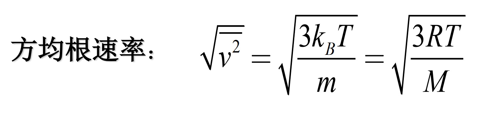
混合气体，各组分压强分别为p 1 , p 2 , ⋯ , p n p_1, p_2, \cdots, p_n p 1 , p 2 , ⋯ , p n P = p 1 + p 2 + ⋯ + p n P = p_1 + p_2 + \cdots + p_n P = p 1 + p 2 + ⋯ + p n
用p = 2 3 n ε t ‾ p=\frac{2}{3}n\overline{\varepsilon_t} p = 3 2 n ε t n n n
暂时理解：每个自由度对应的物理量表示成一个关于时间的函数。
质点：x , y , z x,y,z x , y , z
刚体：质心坐标三个自由度 + 转轴角度两个自由度 + 转动速度一个自由度 = 6个自由度；
单原子分子：三个自由度；
刚性双原子分子：两个质点自由度6，一个距离约束，导致自由度是5；或者由于如果我们规定转轴为两分子连线的话，转动惯量为0，转动速度的自由度消失（绕其他轴转动可以看作转轴方向对时间的导数）。
刚性多原子分子：同刚体，6；
非刚性双原子分子：5+1=6；
非刚性双原子分子：3 n 3n 3 n n n n
根据三个平动动能的均分定理推广，得到各个自由度均分能量的能量均分定理（每个自由度能量都是1 2 k B T \frac{1}{2}k_B T 2 1 k B T
这个定理只在宏观（微观不成立），且高温成立。（低温时，由于能级的量子化，振动自由度消失，均分定理不成立）
假设有t t t r r r s s s ε ‾ = ( t + r + 2 s ) 1 2 k B T \overline\varepsilon = (t+r+2s)\frac{1}{2}k_BT ε = ( t + r + 2 s ) 2 1 k B T
如果考虑总动能，则ε k ‾ = ( t + r + s ) 1 2 k B T \overline{\varepsilon_k} = (t+r+s)\frac{1}{2}k_BT ε k = ( t + r + s ) 2 1 k B T 1 2 k B T \frac{1}{2}k_BT 2 1 k B T
总能量：
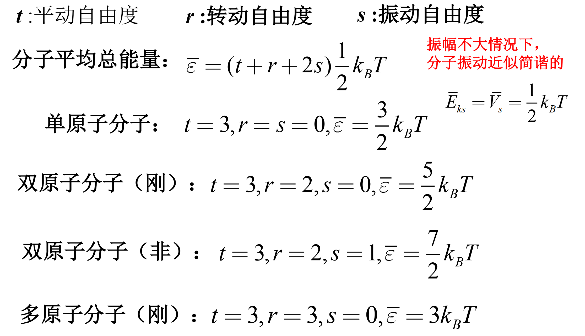
温度不太高时（< 1 0 4 K <10^4\,\mathrm{K} < 1 0 4 K
1 m o l 1\,\mathrm{mol} 1 m o l
E = ε ‾ ⋅ N A = t + r + 2 s 2 R T E = \overline{\varepsilon}\cdot N_A = \frac{t+r+2s}{2}RT
E = ε ⋅ N A = 2 t + r + 2 s R T
设N ( v ) N(v) N ( v ) v v v
f ( v ) = d N N d v f(v) = \frac{\mathrm d N}{N\mathrm d v}
f ( v ) = N d v d N
为速率分布函数
有$$\int_0^{\infty} f(v)\mathrm d v = 1$$
可见，f ( v ) f(v) f ( v ) v v v
则有$$\overline v = \int_0^\infty vf(v)\mathrm d v$$
同理$$\overline{v^2} = \int_0^\infty v^2f(v)\mathrm d v$$
对于速率处于[ v 1 , v 2 ] [v_1, v_2] [ v 1 , v 2 ]
v ‾ [ v 1 , v 2 ] = ∫ v 1 v 2 v f ( v ) d v ∫ v 1 v 2 f ( v ) \overline v_{[v_1, v_2]} = \frac{\int_{v_1}^{v_2} vf(v)\mathrm d v}{\int_{v_1}^{v_2} f(v)}
v [ v 1 , v 2 ] = ∫ v 1 v 2 f ( v ) ∫ v 1 v 2 v f ( v ) d v
速度分布在[ v x , v x + Δ v x ] × [ v y , v y + Δ v y ] × [ v z , v z + Δ v z ] [v_x, v_x + \Delta v_x]\times[v_y, v_y + \Delta v_y]\times[v_z, v_z + \Delta v_z] [ v x , v x + Δ v x ] × [ v y , v y + Δ v y ] × [ v z , v z + Δ v z ]
F ( v ⃗ ) = F ( v x , v y , v z ) = lim Δ v x → 0 Δ v y → 0 Δ v z → 0 N [ v x , v x + Δ v x ] × [ v y , v y + Δ v y ] × [ v z , v z + Δ v z ] N Δ v x Δ v y Δ v z F(\vec v) = F(v_x, v_y, v_z) = \lim_{\substack{\Delta v_x\to 0\\\Delta v_y\to 0\\\Delta v_z\to 0}}\frac{N_{[v_x, v_x + \Delta v_x]\times[v_y, v_y + \Delta v_y]\times[v_z, v_z + \Delta v_z]}}{N\Delta v_x \Delta v_y\Delta v_z}
F ( v ) = F ( v x , v y , v z ) = Δ v x → 0 Δ v y → 0 Δ v z → 0 lim N Δ v x Δ v y Δ v z N [ v x , v x + Δ v x ] × [ v y , v y + Δ v y ] × [ v z , v z + Δ v z ]
单位是( m / s ) − 3 (m/s)^{-3} ( m / s ) − 3
由于三个速度分量的独立性和各向同性，应该有：
F ( v ⃗ ) = g ( v x ) g ( v y ) g ( v z ) F(\vec v) = g(v_x)g(v_y)g(v_z)
F ( v ) = g ( v x ) g ( v y ) g ( v z )
其中g g g
两边取ln \ln ln
两边对v x v_x v x
1 F ( v ⃗ ) ⋅ F v x ( v ⃗ ) = 1 g ( v x ) ⋅ g ′ ( v x ) (1) \frac{1}{F(\vec v)} \cdot F_{v_x}(\vec v) = \frac{1}{g(v_x)}\cdot g'(v_x)\tag 1
F ( v ) 1 ⋅ F v x ( v ) = g ( v x ) 1 ⋅ g ′ ( v x ) ( 1 )
由于各向同性，F ( v ⃗ ) F(\vec v) F ( v ) v = ∣ v ⃗ ∣ = v x 2 + v y 2 + v z 2 v = \left| \vec v\right| = \sqrt{v_x^2+v_y^2+v_z^2} v = ∣ v ∣ = v x 2 + v y 2 + v z 2 G ( v ) G(v) G ( v ) ( 1 ) (1) ( 1 )
1 G ( v ) ⋅ d G d v ⋅ d v d v x = 1 G ( v ) ⋅ d G d v ⋅ v x v = 1 g ( v x ) ⋅ g ′ ( v x ) \begin{aligned}&\frac{1}{G(v)}\cdot \frac{\mathrm d G}{\mathrm d v}\cdot \frac{\mathrm d v}{\mathrm d v_x}\\=&\frac{1}{G(v)}\cdot \frac{\mathrm d G}{\mathrm d v}\cdot \frac{v_x}{v} = \frac{1}{g(v_x)}\cdot g'(v_x)\end{aligned}
= G ( v ) 1 ⋅ d v d G ⋅ d v x d v G ( v ) 1 ⋅ d v d G ⋅ v v x = g ( v x ) 1 ⋅ g ′ ( v x )
于是我们就知道了：
d G G ( v ) v d v = d g g v x d v x = d g g v y d v y = d g g v z d v z = λ ( v ) \frac{\mathrm d G}{G(v)v\mathrm d v} = \frac{\mathrm d g}{gv_x\mathrm d v_x} = \frac{\mathrm d g}{gv_y\mathrm d v_y} = \frac{\mathrm d g}{gv_z\mathrm d v_z} = \lambda(v)
G ( v ) v d v d G = g v x d v x d g = g v y d v y d g = g v z d v z d g = λ ( v )
由于v x , v y , v z v_x, v_y, v_z v x , v y , v z λ \lambda λ
于是就有$$\begin{aligned}
其中α = − λ 2 \alpha = -\frac{\lambda}{2} α = − 2 λ
g ( v ) = C e − α v 2 g(v) = Ce^{-\alpha v^2}
g ( v ) = C e − α v 2
所以说
F ( v x , v y , v z ) = A e − α ( v x 2 + v y 2 + v z 2 ) F(v_x, v_y, v_z) = Ae^{-\alpha (v_x^2 + v_y^2 + v_z^2)}
F ( v x , v y , v z ) = A e − α ( v x 2 + v y 2 + v z 2 )
由归一化条件
∫ − ∞ + ∞ ∫ − ∞ + ∞ ∫ − ∞ + ∞ F ( v x , v y , v z ) d v x d v y d v z = 1 \int_{-\infty}^{+\infty}\int_{-\infty}^{+\infty}\int_{-\infty}^{+\infty}F(v_x, v_y, v_z)\mathrm d v_x\mathrm d v_y\mathrm d v_z = 1
∫ − ∞ + ∞ ∫ − ∞ + ∞ ∫ − ∞ + ∞ F ( v x , v y , v z ) d v x d v y d v z = 1
把F F F
A ∫ − ∞ + ∞ ∫ − ∞ + ∞ ∫ − ∞ + ∞ e − α v x 2 e − α v y 2 e − α v z 2 d v x d v y d v z = A ∫ − ∞ + ∞ e − α v x 2 d v x ∫ − ∞ + ∞ e − α v y 2 d v y ∫ − ∞ + ∞ e − α v z 2 d v z = A ( ∫ − ∞ + ∞ e − α v 2 d v ) 3 = A ( π α ) 3 = 1 \begin{aligned}&A\int_{-\infty}^{+\infty}\int_{-\infty}^{+\infty}\int_{-\infty}^{+\infty}e^{-\alpha v_x^2}e^{-\alpha v_y^2}e^{-\alpha v_z^2}\mathrm d v_x\mathrm d v_y\mathrm d v_z\\=&A\int_{-\infty}^{+\infty}e^{-\alpha v_x^2}\mathrm d v_x\int_{-\infty}^{+\infty}e^{-\alpha v_y^2}\mathrm d v_y\int_{-\infty}^{+\infty}e^{-\alpha v_z^2}\mathrm d v_z\\=&A(\int_{-\infty}^{+\infty} e^{-\alpha v^2}\mathrm d v)^3 = A(\sqrt{\frac{\pi}{\alpha}})^3 = 1\end{aligned}
= = A ∫ − ∞ + ∞ ∫ − ∞ + ∞ ∫ − ∞ + ∞ e − α v x 2 e − α v y 2 e − α v z 2 d v x d v y d v z A ∫ − ∞ + ∞ e − α v x 2 d v x ∫ − ∞ + ∞ e − α v y 2 d v y ∫ − ∞ + ∞ e − α v z 2 d v z A ( ∫ − ∞ + ∞ e − α v 2 d v ) 3 = A ( α π ) 3 = 1
这里用了高斯积分的结论。推导可以这么推：
推导过程
计算以下积分
∫ − ∞ + ∞ ∫ − ∞ + ∞ e − α ( x 2 + y 2 ) d x d y (2) \int_{-\infty}^{+\infty}\int_{-\infty}^{+\infty}e^{-\alpha (x^2 + y^2)}\mathrm d x\mathrm d y\tag 2
∫ − ∞ + ∞ ∫ − ∞ + ∞ e − α ( x 2 + y 2 ) d x d y ( 2 )
令
{ x = r cos θ y = r sin θ \begin{cases}
x = r\cos\theta\\
y = r\sin\theta
\end{cases} { x = r cos θ y = r sin θ
有$$
则
( 2 ) = ∫ 0 2 π ∫ 0 + ∞ e − α r 2 r d r d θ = 1 2 ∫ 0 2 π d θ ∫ 0 + ∞ e − α r 2 d r 2 = 1 2 α ∫ 0 2 π d θ = π α \begin{aligned}(2) = &\int_{0}^{2\pi}\int_{0}^{+\infty} e^{-\alpha r^2} r\mathrm d r\mathrm d \theta\\= & \frac{1}{2}\int_0^{2\pi} \mathrm d \theta \int_0^{+\infty} e^{-\alpha r^2}\mathrm d r^2\\= & \frac{1}{2\alpha}\int_0^{2\pi}\mathrm d\theta\\=&\frac{\pi}{\alpha}\end{aligned}
( 2 ) = = = = ∫ 0 2 π ∫ 0 + ∞ e − α r 2 r d r d θ 2 1 ∫ 0 2 π d θ ∫ 0 + ∞ e − α r 2 d r 2 2 α 1 ∫ 0 2 π d θ α π
只有α > 0 \alpha>0 α > 0
而同时
( 2 ) = ∫ − ∞ + ∞ e − α 2 d x ∫ − ∞ + ∞ e α y 2 d y = ( ∫ − ∞ + ∞ e − α x 2 d x ) 2 (2) = \int_{-\infty}^{+\infty}e^{-\alpha ^2}\mathrm dx\int_{-\infty}^{+\infty}e^{\alpha y^2}\mathrm d y = (\int_{-\infty}^{+\infty}e^{-\alpha x^2}\mathrm dx)^2
( 2 ) = ∫ − ∞ + ∞ e − α 2 d x ∫ − ∞ + ∞ e α y 2 d y = ( ∫ − ∞ + ∞ e − α x 2 d x ) 2
得到
∫ − ∞ + ∞ e − α x 2 d x = π α \int_{-\infty}^{+\infty}e^{-\alpha x^2}\mathrm dx = \sqrt{\frac{\pi}{\alpha}}
∫ − ∞ + ∞ e − α x 2 d x = α π
所以有$$A = (\frac{\alpha}{\pi})^{\frac{3}{2}}$$
对已知的高斯积分进行分部积分：
∫ − ∞ + ∞ e − α x 2 d x = 0 − ∫ − ∞ + ∞ x ⋅ ( − 2 α x ) e − α x 2 d x = 2 α ∫ − ∞ + ∞ x 2 e − α x 2 d x \begin{aligned}
&\int_{-\infty}^{+\infty} e^{-\alpha x^2}\mathrm d x\\
=& 0 - \int_{-\infty}^{+\infty} x\cdot(-2\alpha x)e^{-\alpha x^2}\mathrm d x\\
=&2\alpha\int_{-\infty}^{+\infty} x^2e^{-\alpha x^2}\mathrm d x
\end{aligned} = = ∫ − ∞ + ∞ e − α x 2 d x 0 − ∫ − ∞ + ∞ x ⋅ ( − 2 α x ) e − α x 2 d x 2 α ∫ − ∞ + ∞ x 2 e − α x 2 d x
得到
∫ − ∞ + ∞ x 2 e − α x 2 d x ∫ − ∞ + ∞ e − α x 2 d x = 1 2 α \frac{\int_{-\infty}^{+\infty} x^2e^{-\alpha x^2}\mathrm d x}{\int_{-\infty}^{+\infty} e^{-\alpha x^2}\mathrm d x} = \frac{1}{2\alpha}
∫ − ∞ + ∞ e − α x 2 d x ∫ − ∞ + ∞ x 2 e − α x 2 d x = 2 α 1
根据速率平方平均公式，
v x 2 ‾ = ∫ − ∞ + ∞ v 2 g ( v x ) d v x ∫ − ∞ + ∞ g ( v x ) d v x = ∫ − ∞ + ∞ v x 2 e − α v x 2 d v x ∫ − ∞ + ∞ e − α v x 2 d v x = 1 2 α \begin{aligned}
\overline{v_x^2} = &\frac{\int_{-\infty}^{+\infty}v^2g(v_x)\mathrm d v_x}{\int_{-\infty}^{+\infty} g(v_x)\mathrm d v_x}\\
= &\frac{\int_{-\infty}^{+\infty} v_x^2e^{-\alpha v_x^2}\mathrm d v_x}{\int_{-\infty}^{+\infty} e^{-\alpha v_x^2}\mathrm d v_x} = \frac{1}{2\alpha}
\end{aligned} v x 2 = = ∫ − ∞ + ∞ g ( v x ) d v x ∫ − ∞ + ∞ v 2 g ( v x ) d v x ∫ − ∞ + ∞ e − α v x 2 d v x ∫ − ∞ + ∞ v x 2 e − α v x 2 d v x = 2 α 1
而根据能量均分原理有1 2 m v x 2 ‾ = 1 2 k B T \frac{1}{2}m\overline{v_x^2} = \frac{1}{2}k_BT 2 1 m v x 2 = 2 1 k B T
1 2 α = k B T m ⟹ α = m 2 k B T \frac{1}{2\alpha} = \frac{k_BT}{m}\implies \alpha = \frac{m}{2k_BT}
2 α 1 = m k B T ⟹ α = 2 k B T m
则$$
至此，可以得出
F ( v x , v y , v z ) = ( m 2 π k B T ) 3 2 e − m 2 k B T ( v x 2 + v y 2 + v z 2 ) F(v_x, v_y, v_z) = (\frac{m}{2\pi k_BT})^{\frac{3}{2}}e^{-\frac{m}{2k_BT}(v_x^2+v_y^2+v_z^2)}
F ( v x , v y , v z ) = ( 2 π k B T m ) 2 3 e − 2 k B T m ( v x 2 + v y 2 + v z 2 )
同理，在某个方向的分量
g ( v ) = ( m 2 π k B T ) 1 2 e − m 2 k B T v 2 g(v) = (\frac{m}{2\pi k_BT})^{\frac{1}{2}}e^{-\frac{m}{2k_BT}v^2}
g ( v ) = ( 2 π k B T m ) 2 1 e − 2 k B T m v 2
在三维空间中
f ( v ) = 4 π v 2 G ( v ) = 4 π ( m 2 π k B T ) 3 2 e − m 2 k B T v 2 ⋅ v 2 f(v) = 4\pi v^2G(v) = 4\pi(\frac{m}{2\pi k_BT})^{\frac{3}{2}}e^{-\frac{m}{2k_BT}v^2}\cdot v^2
f ( v ) = 4 π v 2 G ( v ) = 4 π ( 2 π k B T m ) 2 3 e − 2 k B T m v 2 ⋅ v 2
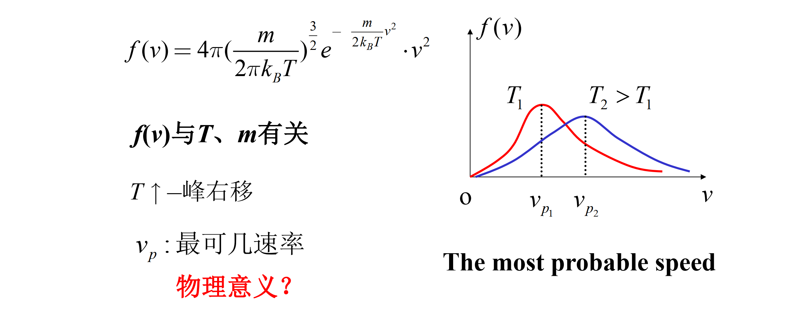
这个图反映了分布函数的曲线形式和最可几速率随温度的变化情况。
适用条件 ：高温、低密度、大质量粒子（不适用于电子气体、光子气体）
对于有转动、有振动的分子构成的气体，甚至分子之间有相互作用，或考虑重力作用时 （为什么 ），麦克斯韦速率分布函数依然适用 。
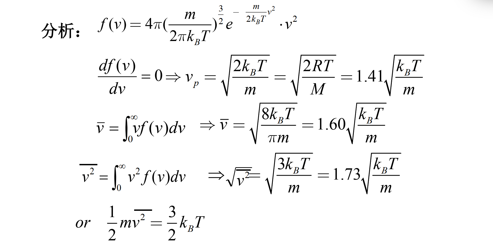
计算单位面积单位时间的流出的气体分子数（泄流速率）
老师给的方法：
Γ = ∫ 0 + ∞ ∫ − ∞ + ∞ ∫ − ∞ + ∞ v x n F ( v x , v y , v z ) d v x d v y d v z \Gamma = \int_0^{+\infty}\int_{-\infty}^{+\infty}\int_{-\infty}^{+\infty}v_x n F(v_x, v_y, v_z)\mathrm d v_x\mathrm d v_y\mathrm d v_z
Γ = ∫ 0 + ∞ ∫ − ∞ + ∞ ∫ − ∞ + ∞ v x n F ( v x , v y , v z ) d v x d v y d v z
得到$$\Gamma = \frac{1}{4}n\sqrt{\frac{8k_BT}{\pi m}} = \frac{1}{4}n\overline v$$
如果使用x x x
Γ = ∫ 0 + ∞ n v g ( v ) d v = 1 2 n ∫ 0 + ∞ ( m 2 π k B T ) 1 2 e − m 2 k B T v 2 d v 2 = n k B T 2 π m = 1 4 n v ‾ \Gamma = \int_0^{+\infty}nvg(v)\mathrm d v = \frac{1}{2}n\int_0^{+\infty}(\frac{m}{2\pi k_BT})^{\frac{1}{2}}e^{-\frac{m}{2k_BT}v^2}\mathrm d v^2\\ = n\sqrt{\frac{k_BT}{2\pi m}} = \frac{1}{4}n\overline v
Γ = ∫ 0 + ∞ n v g ( v ) d v = 2 1 n ∫ 0 + ∞ ( 2 π k B T m ) 2 1 e − 2 k B T m v 2 d v 2 = n 2 π m k B T = 4 1 n v
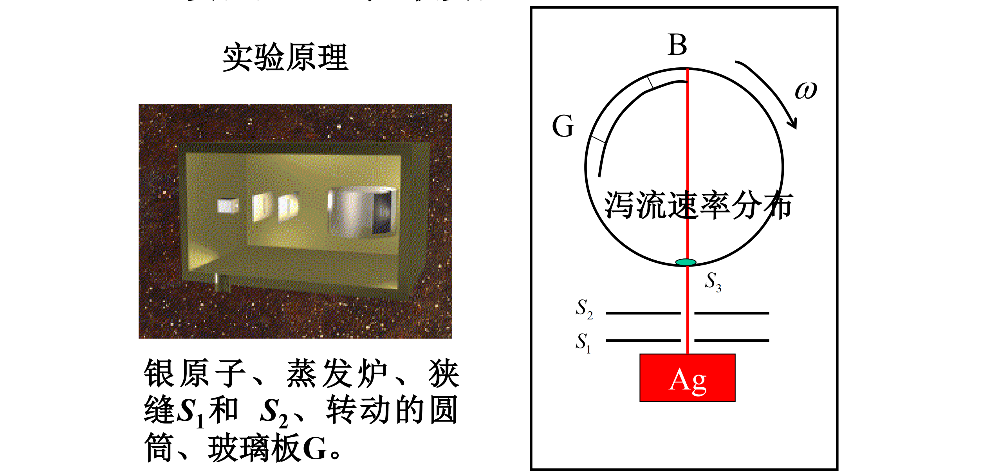
葛正权利用银气体泄流实验。
和麦克斯韦速度分布类似，定义
B ( v ⃗ , r ⃗ ) = A ′ e − ε k + ε p k B T d v x d v y d v z d x d y d z B(\vec v, \vec r) = A'e^{-\frac{\varepsilon_k + \varepsilon_p}{k_B T}}\mathrm d v_x\mathrm d v_y\mathrm d v_z\mathrm d x\mathrm d y\mathrm d z
B ( v , r ) = A ′ e − k B T ε k + ε p d v x d v y d v z d x d y d z
其中e − ε k + ε p k B T = e − ε k B T e^{-\frac{\varepsilon_k + \varepsilon_p}{k_B T}} = e^{-\frac{\varepsilon}{k_B T}} e − k B T ε k + ε p = e − k B T ε
ε = ε k + ε p \varepsilon = \varepsilon_k + \varepsilon_p ε = ε k + ε p
我们认为理想气体分子间不存在势能，则有
d N ′ = N ( ∫ − ∞ + ∞ ∫ − ∞ + ∞ ∫ − ∞ + ∞ B ( v ⃗ , r ⃗ ) d v x d v y d v z ) d x d y d z = ( N A ′ ∫ − ∞ + ∞ ∫ − ∞ + ∞ ∫ − ∞ + ∞ e − ε k k B T d v x d v y d v z ) e − ε p k B T d x d y d z = n 0 e − ε p k B T d x d y d z \begin{aligned}
\mathrm d N' = &N(\int_{-\infty}^{+\infty}\int_{-\infty}^{+\infty}\int_{-\infty}^{+\infty}B(\vec v, \vec r)\mathrm d v_x\mathrm d v_y\mathrm d v_z)\mathrm d x\mathrm d y\mathrm d z\\
=&(NA'\int_{-\infty}^{+\infty}\int_{-\infty}^{+\infty}\int_{-\infty}^{+\infty}e^{-\frac{\varepsilon_k}{k_B T}}\mathrm d v_x\mathrm d v_y\mathrm d v_z)e^{-\frac{\varepsilon_p}{k_B T}}\mathrm d x\mathrm d y\mathrm d z\\
=& n_0e^{-\frac{\varepsilon_p}{k_B T}}\mathrm d x\mathrm d y\mathrm d z
\end{aligned}
d N ′ = = = N ( ∫ − ∞ + ∞ ∫ − ∞ + ∞ ∫ − ∞ + ∞ B ( v , r ) d v x d v y d v z ) d x d y d z ( N A ′ ∫ − ∞ + ∞ ∫ − ∞ + ∞ ∫ − ∞ + ∞ e − k B T ε k d v x d v y d v z ) e − k B T ε p d x d y d z n 0 e − k B T ε p d x d y d z
n 0 n_0 n 0 ε p = 0 \varepsilon_p=0 ε p = 0 n 0 = d N ′ d x d y d z n_0 = \frac{\mathrm d N'}{\mathrm d x\mathrm d y\mathrm d z} n 0 = d x d y d z d N ′ n 0 n_0 n 0
这里得到$$n = n_0 e^{-\frac{\varepsilon_p}{k_B T}}$$
是玻尔兹曼密度分布函数 。
这说明，如果温度不变，重力场中的粒子数密度只和高度有关。由于p = n k B T p=nk_B T p = n k B T p p p
重力场通过力学推导也可以得到这个表达式：
设重力场中的理想气体在z z z ρ ( z ) \rho(z) ρ ( z ) p ( z ) p(z) p ( z )
p + d p + ρ g d z = p ⟹ d p = − ρ g d z \begin{aligned}
&p + \mathrm d p + \rho g \mathrm d z = p\\
\implies & \mathrm d p = -\rho g\mathrm d z
\end{aligned} ⟹ p + d p + ρ g d z = p d p = − ρ g d z
由于
{ p = n k B T ρ = m 总 V = n m \begin{cases}
p = nk_B T \\
\rho = \frac{m_总}{V} = nm \\
\end{cases} { p = n k B T ρ = V m 总 = n m
可以得出p p p ρ \rho ρ
这个关系也可以应用在某些非惯性系 ，惯性力作为保守力时。
玻尔兹曼能量分布说明处于基态的原子占绝大多数。
对于光子和电子，不适用。
理想气体内能：$$E = E(T) = \nu\frac{i}{2}RT$$
d Q = d E + d A \mathrm d Q = \mathrm d E + \mathrm d A
d Q = d E + d A
其中d Q \mathrm d Q d Q 吸热增加能量 ，d E \mathrm d E d E d A \mathrm d A d A 对外做功 。
d A = F d l = P S d l = P d V \mathrm d A = F\mathrm d l = PS\mathrm d l = P\mathrm d V
d A = F d l = P S d l = P d V
所以
A = ∫ V 1 V 2 P d V A = \int_{V_1}^{V_2} P\mathrm d V
A = ∫ V 1 V 2 P d V
C = d Q d T C = \frac{\mathrm d Q}{\mathrm d T}
C = d T d Q
C m = C ν C_m = \frac{C}{\nu} C m = ν C J / ( m o l ⋅ K ) \mathrm{J/(mol\cdot K)} J / ( m o l ⋅ K ) d Q \mathrm d Q d Q d T \mathrm d T d T
比热容c c c J / ( k g ⋅ K ) \mathrm{J/(kg\cdot K)} J / ( k g ⋅ K ) c = C M c = \frac{C}{M} c = M C M M M
对于理想气体，摩尔热容有两种：
定容摩尔热容C V , m = ( d Q m d T ) V C_{V, m} = (\frac{\mathrm d Q_m}{\mathrm d T})_{V} C V , m = ( d T d Q m ) V C V , m = ( d Q m d T ) V = d E m d T = d ( i 2 R T ) d T = i 2 R C_{V, m} = (\frac{\mathrm d Q_m}{\mathrm d T})_{V} = \frac{\mathrm d E_m}{\mathrm d T} = \frac{\mathrm d (\frac{i}{2}RT)}{\mathrm d T} = \frac{i}{2}R
C V , m = ( d T d Q m ) V = d T d E m = d T d ( 2 i R T ) = 2 i R
可以得到d E m = C V , m d T \mathrm d E_m = C_{V,m}\mathrm d T
d E m = C V , m d T
这个式子在不等容时依然成立 。
定压摩尔热容C P , m = ( d Q m d T ) P C_{P, m} = (\frac{\mathrm d Q_m}{\mathrm d T})_{P} C P , m = ( d T d Q m ) P C P , m = ( d Q m d T ) P = d E m + P d V m d T = d E m d T + P d V m d T C_{P, m} = (\frac{\mathrm d Q_m}{\mathrm d T})_{P} = \frac{\mathrm d E_m + P\mathrm d V_m}{\mathrm d T} = \frac{\mathrm d E_m}{\mathrm d T} + \frac{P\mathrm d V_m}{\mathrm d T}
C P , m = ( d T d Q m ) P = d T d E m + P d V m = d T d E m + d T P d V m
由于P V m = R T PV_m = RT P V m = R T d ( P V m ) = P d V m = R d T \mathrm d (PV_m) = P\mathrm d V_m = R\mathrm d T d ( P V m ) = P d V m = R d T P d V m d T = R \frac{P\mathrm d V_m}{\mathrm d T} = R
d T P d V m = R
于是有C P , m = C V , m + R = i + 2 2 R C_{P, m} = C_{V, m} + R = \frac{i+2}{2}R
C P , m = C V , m + R = 2 i + 2 R
这叫做迈耶公式。
热容比γ = C P , m C V , m = 1 + R C V , m = i + 2 i \gamma = \frac{C_{P, m}}{C_{V, m}} = 1 + \frac{R}{C_{V,m}} = \frac{i+2}{i}
γ = C V , m C P , m = 1 + C V , m R = i i + 2
热容量为常量的过程。
根据 $$\begin{cases}
得到
P m d V m + V m d P m = R P m d V m C m − C V , m ⟹ ( C m − C V , m ) P m d V m + ( C m − C V , m ) V m d P m = R P m d T ⟹ ( C m − C P , m ) P m d V m + ( C m − C V , m ) V m d P m = 0 \begin{aligned}&P_m\mathrm d V_m + V_m\mathrm d P_m = RP_m\frac{\mathrm d V_m}{C_m - C_{V,m}}\\
\implies& (C_m - C_{V,m})P_m\mathrm d V_m + (C_m - C_{V,m})V_m\mathrm d P_m = RP_m\mathrm d T\\
\implies& (C_m - C_{P,m})P_m\mathrm d V_m + (C_m - C_{V,m})V_m\mathrm d P_m = 0
\end{aligned} ⟹ ⟹ P m d V m + V m d P m = R P m C m − C V , m d V m ( C m − C V , m ) P m d V m + ( C m − C V , m ) V m d P m = R P m d T ( C m − C P , m ) P m d V m + ( C m − C V , m ) V m d P m = 0
令n = C m − C P , m C m − C V , m n = \frac{C_m - C_{P,m}}{C_m - C_{V,m}} n = C m − C V , m C m − C P , m
n P m d V m + V m d P m = 0 ⟹ n d V m V m + P m P m = 0 ⟹ d P m P m = − n d V m V m ⟹ ln P m = − n ln V m + C ⟹ P m = C ′ V m − n ⟹ P m V m n = C ′ \begin{aligned}
&nP_m\mathrm d V_m + V_m\mathrm d P_m = 0\\
\implies& n\frac{\mathrm d V_m}{V_m} + \frac{\mathrm P_m}{P_m} = 0\\
\implies& \frac{\mathrm d P_m}{P_m} = -n\frac{\mathrm d V_m}{V_m}\\
\implies& \ln P_m = -n\ln V_m + C\\
\implies& P_m = C'V_m^{-n}\\
\implies& P_mV_m^n = C'
\end{aligned} ⟹ ⟹ ⟹ ⟹ ⟹ n P m d V m + V m d P m = 0 n V m d V m + P m P m = 0 P m d P m = − n V m d V m ln P m = − n ln V m + C P m = C ′ V m − n P m V m n = C ′
其中n n n
n = 0 n=0 n = 0 P m = C ′ P_m = C' P m = C ′ n = ∞ n=\infty n = ∞ V m = C ′ V_m = C' V m = C ′ n = 1 n=1 n = 1 P m V m = C ′ P_mV_m = C' P m V m = C ′ n = γ n=\gamma n = γ P m V m γ = C ′ P_mV_m^\gamma = C' P m V m γ = C ′ γ = C P , m C V , m \gamma = \frac{C_{P, m}}{C_{V, m}} γ = C V , m C P , m n = C m − C P , m C m − C V , m ⟹ C m = γ − n 1 − n C V , m n = \frac{C_m - C_{P,m}}{C_m - C_{V,m}}\implies C_m = \frac{\gamma - n}{1-n}C_{V,m} n = C m − C V , m C m − C P , m ⟹ C m = 1 − n γ − n C V , m
在一个准静态过程
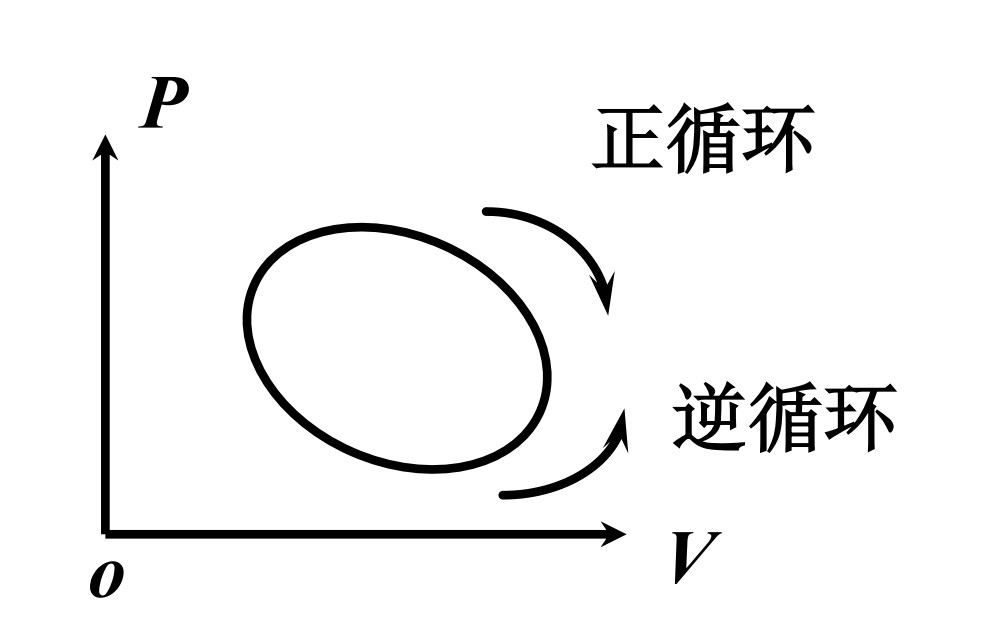
正循环是热机，逆循环是制冷机。
η = A Q 1 = 1 − Q 2 Q 1 \eta = \frac{A}{Q_1} = 1 - \frac{Q_2}{Q_1}
η = Q 1 A = 1 − Q 1 Q 2
其中Q 1 Q_1 Q 1 Q 2 Q_2 Q 2 A A A
制冷系数$$w = \frac{Q_2}{A} = \frac{Q_2}{Q_1 - Q_2}$$
判断是热机还是制冷机要看要不要外接非热功率工作，所以空调不管是制冷还是制热都是制冷机。
有两种表述
不可能有一种热机，其工作物质在一个周期内从一个热源吸收热量Q 1 Q_1 Q 1 A A A Q 2 Q_2 Q 2
低温物体不能自发向高温物体传递热量，而不引起其他变化。（克劳修斯表述）
这两种表述是等价的。
孤立系的电荷量守恒。
正负电子湮灭产生至少两个光子：以质心为参考系，如果产生一个光子，光子速度在质心系内为c c c 0 0 0
运动的电荷电荷量不变。
真空中，两个点电荷 ，库伦力大小为
F = k q 1 q 2 r 2 F = k\frac{q_1q_2}{r^2}
F = k r 2 q 1 q 2
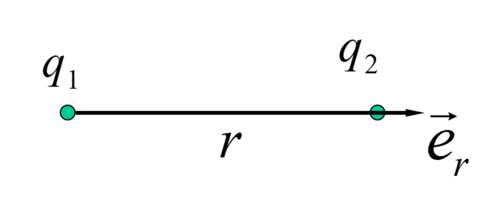
q 2 q_2 q 2 q 1 q_1 q 1
F ⃗ = k q 1 q 2 r 2 e r ⃗ = k q 1 q 2 r 3 r ⃗ = q 1 q 2 4 π ε 0 r 3 r ⃗ \begin{aligned}
\vec F &= k\frac{q_1q_2}{r^2}\vec {e_r}\\
&= k\frac{q_1q_2}{r^3}\vec {r}
\\
&= \frac{q_1q_2}{4\pi\varepsilon_0 r^3} \vec r
\end{aligned}
F = k r 2 q 1 q 2 e r = k r 3 q 1 q 2 r = 4 π ε 0 r 3 q 1 q 2 r
其中ε 0 ≈ 8.851 × 1 0 − 12 C 2 / N ⋅ m 2 \varepsilon_0\approx 8.851\times 10^{-12} \rm C^2/\rm N\cdot \rm m^2 ε 0 ≈ 8 . 8 5 1 × 1 0 − 1 2 C 2 / N ⋅ m 2
点电荷系对一点电荷的库伦力为各个点电荷造成的库伦力的矢量和。
近代物理认为，都是传递粒子产生的力。
电磁作用通过光子传播。
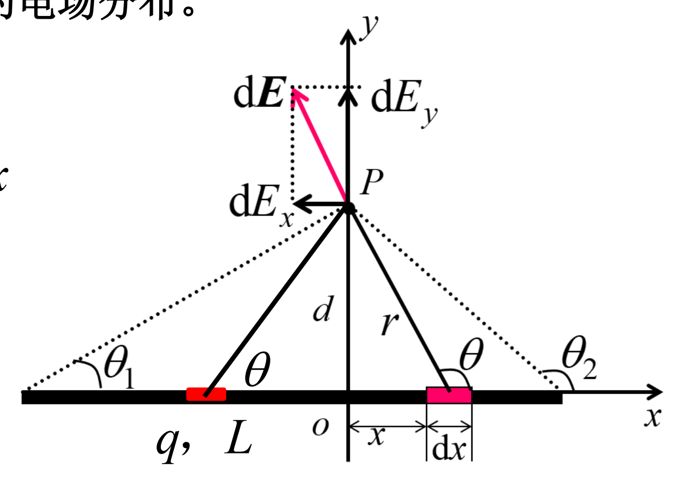
E y = ∫ 1 4 π ε 0 ⋅ d q x 2 + d 2 ⋅ sin θ = ∫ 1 4 π ε 0 ⋅ λ d x x 2 + d 2 ⋅ sin θ = ∫ λ d − d tan θ 4 π ε 0 d 2 ⋅ sin 3 θ = ∫ θ 1 θ 2 λ d θ 4 π ε 0 d ⋅ sin θ = λ 4 π ε 0 d ⋅ ( cos θ 1 − cos θ 2 ) \begin{aligned}
E_y &= \int \frac{1}{4\pi\varepsilon_0}\cdot \frac{\mathrm{d} q }{x^2 + d^2}\cdot\sin\theta\\
&=\int\frac{1}{4\pi\varepsilon_0}\cdot \frac{\lambda\mathrm d x}{x^2 + d^2}\cdot\sin\theta\\
&=\int\frac{\lambda\mathrm d \frac{-d}{\tan\theta}}{4\pi\varepsilon_0 d^2}\cdot\sin^3\theta\\
&=\int_{\theta_1}^{\theta_2}\frac{\lambda\mathrm d \theta}{4\pi\varepsilon_0 d}\cdot\sin\theta\\
&=\frac{\lambda}{4\pi\varepsilon_0 d}\cdot(\cos\theta_1 - \cos\theta_2)\\
\end{aligned}
E y = ∫ 4 π ε 0 1 ⋅ x 2 + d 2 d q ⋅ sin θ = ∫ 4 π ε 0 1 ⋅ x 2 + d 2 λ d x ⋅ sin θ = ∫ 4 π ε 0 d 2 λ d t a n θ − d ⋅ sin 3 θ = ∫ θ 1 θ 2 4 π ε 0 d λ d θ ⋅ sin θ = 4 π ε 0 d λ ⋅ ( cos θ 1 − cos θ 2 )
同理
E x = λ 4 π ε 0 d ⋅ ( sin θ 2 − sin θ 1 ) E_x = \frac{\lambda}{4\pi\varepsilon_0 d}\cdot(\sin\theta_2 - \sin\theta_1)
E x = 4 π ε 0 d λ ⋅ ( sin θ 2 − sin θ 1 )
当θ 1 → 0 , θ 2 → π \theta_1\to 0, \theta_2\to \pi θ 1 → 0 , θ 2 → π
{ E y = λ 2 π ε 0 d E x = 0 \begin{cases}
E_y = \frac{\lambda}{2\pi\varepsilon_0 d}\\
E_x = 0\\
\end{cases} { E y = 2 π ε 0 d λ E x = 0
当θ 1 → π 2 , θ 2 → π \theta_1\to \frac{\pi}{2}, \theta_2\to \pi θ 1 → 2 π , θ 2 → π
有
{ E y = λ 4 π ε 0 d E x = λ 4 π ε 0 d \begin{cases}
E_y = \frac{\lambda}{4\pi\varepsilon_0 d}\\
E_x = \frac{\lambda}{4\pi\varepsilon_0 d}\\
\end{cases} { E y = 4 π ε 0 d λ E x = 4 π ε 0 d λ
当d → 0 d\to 0 d → 0
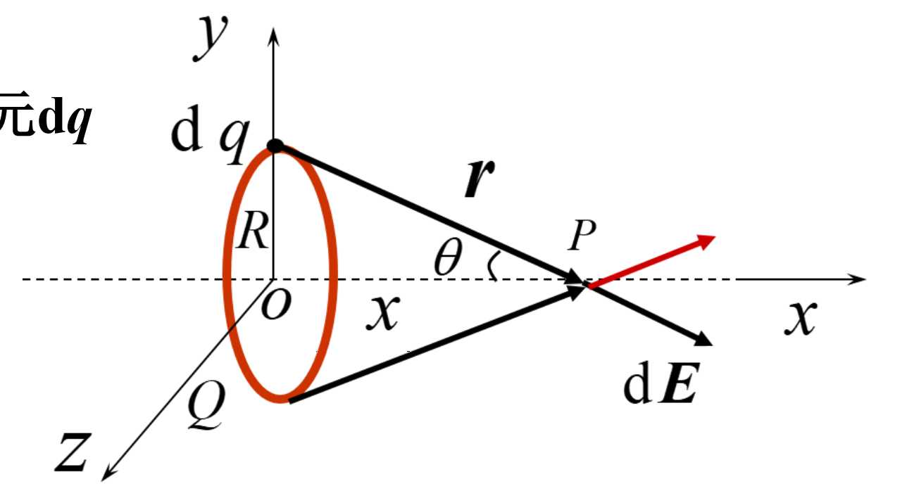
E = ∫ 1 4 π ε 0 ⋅ d q x 2 + R 2 ⋅ cos θ = ∫ 0 2 π 1 4 π ε 0 ⋅ d α Q 2 π ⋅ x ( x 2 + R 2 ) 3 / 2 = x Q 4 π ε 0 ( x 2 + R 2 ) 3 / 2 \begin{aligned}
E &= \int \frac{1}{4\pi\varepsilon_0}\cdot\frac{\mathrm d q}{x^2 + R^2}\cdot\cos\theta \\
&= \int_0^{2\pi} \frac{1}{4\pi\varepsilon_0}\cdot\frac{\mathrm d \alpha\frac{Q}{2\pi}\cdot x}{(x^2 + R^2)^{3/2}} \\
&= \frac{xQ}{4\pi\varepsilon_0(x^2 + R^2)^{3/2}}
\end{aligned} E = ∫ 4 π ε 0 1 ⋅ x 2 + R 2 d q ⋅ cos θ = ∫ 0 2 π 4 π ε 0 1 ⋅ ( x 2 + R 2 ) 3 / 2 d α 2 π Q ⋅ x = 4 π ε 0 ( x 2 + R 2 ) 3 / 2 x Q
若 x ≫ R x\gg R x ≫ R E = x Q 4 π ε 0 x 3 ( 1 + ( R x ) 2 ) 3 / 2 ∼ Q 4 π ε 0 x 2 ∼ Q 4 π ε 0 r 2 E = \frac{xQ}{4\pi\varepsilon_0 x^3(1 + (\frac{R}{x})^2)^{3/2}}\sim \frac{Q}{4\pi\varepsilon_0 x^2}\sim \frac{Q}{4\pi\varepsilon_0 r^2} E = 4 π ε 0 x 3 ( 1 + ( x R ) 2 ) 3 / 2 x Q ∼ 4 π ε 0 x 2 Q ∼ 4 π ε 0 r 2 Q
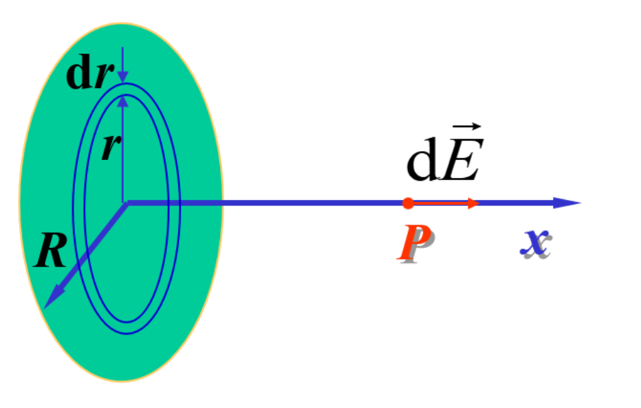
利用之前的结论积分：
E = ∫ 0 R x Q 2 π r π R 2 4 π ε 0 ( x 2 + r 2 ) 3 / 2 d r = ∫ 0 R x Q 4 π R 2 ε 0 ( x 2 + r 2 ) 3 / 2 d ( r 2 + x 2 ) = x Q 4 π ε 0 R 2 ⋅ ( − 2 ) [ ( R 2 + x 2 ) − 1 / 2 − 1 / x ] = Q 2 π ε 0 R 2 [ 1 − 1 ( R x ) 2 + 1 ] \begin{aligned}
E &= \int_0^R \frac{xQ\frac{2\pi r}{\pi R^2}}{4\pi\varepsilon_0(x^2 + r^2)^{3/2}}\mathrm d r \\
&= \int_0^R \frac{xQ}{4\pi R^2\varepsilon_0(x^2 + r^2)^{3/2}}\mathrm d (r^2 + x^2) \\
&= \frac{xQ}{4\pi \varepsilon_0R^2}\cdot (-2)[(R^2 + x^2) ^ {-1/2} - 1/x]\\
&= \frac{Q}{2\pi \varepsilon_0 R^2}[1 - \frac{1}{\sqrt{(\frac{R}{x})^2 + 1}}]
\end{aligned} E = ∫ 0 R 4 π ε 0 ( x 2 + r 2 ) 3 / 2 x Q π R 2 2 π r d r = ∫ 0 R 4 π R 2 ε 0 ( x 2 + r 2 ) 3 / 2 x Q d ( r 2 + x 2 ) = 4 π ε 0 R 2 x Q ⋅ ( − 2 ) [ ( R 2 + x 2 ) − 1 / 2 − 1 / x ] = 2 π ε 0 R 2 Q [ 1 − ( x R ) 2 + 1 1 ]
令σ = Q π R 2 \sigma = \frac{Q}{\pi R^2} σ = π R 2 Q
E = σ 2 ε 0 [ 1 − 1 ( R x ) 2 + 1 ] E = \frac{\sigma}{2\varepsilon_0}[1 - \frac{1}{\sqrt{(\frac{R}{x})^2 + 1}}]
E = 2 ε 0 σ [ 1 − ( x R ) 2 + 1 1 ]
若 x ≫ R x \gg R x ≫ R
E ∼ σ 2 ε 0 ⋅ 1 2 ⋅ ( R x ) 2 = σ R 2 4 ε 0 x 2 = Q 4 π ε 0 x 2 E \sim \frac{\sigma}{2\varepsilon_0}\cdot\frac{1}{2}\cdot(\frac{R}{x})^2 = \frac{\sigma R^2}{4\varepsilon_0 x^2} = \frac{Q}{4\pi\varepsilon_0 x^2}
E ∼ 2 ε 0 σ ⋅ 2 1 ⋅ ( x R ) 2 = 4 ε 0 x 2 σ R 2 = 4 π ε 0 x 2 Q
相当于集中在中心的点电荷；
若 x ≪ R x \ll R x ≪ R
E ∼ σ 2 ε 0 E \sim \frac{\sigma}{2\varepsilon_0}
E ∼ 2 ε 0 σ
若R R R E = σ 2 ε 0 E = \frac{\sigma}{2\varepsilon_0} E = 2 ε 0 σ
合理利用电场的拆补，可以解决例如无限大圆盘挖个孔的问题。
由此可得出平行板电容器（一正一负）板间匀强电场，板外无电场。
电通量：
d Φ = E ⃗ ⋅ d S ⃗ \mathrm d \Phi = \vec E\cdot \mathrm d\vec S
d Φ = E ⋅ d S
其中d S ⃗ = d S e ⃗ n \mathrm d \vec S = \mathrm d S\vec e_n d S = d S e n
对于任意曲面的电通量：
Φ = ∬ S E ⃗ ⋅ d S ⃗ \Phi = \iint_S \vec E\cdot\mathrm d \vec S
Φ = ∬ S E ⋅ d S
规定闭合曲面法线向外为正 。
面元S S S O O O O O O Ω \Omega Ω
设S S S O O O θ \theta θ S S S O O O R R R Ω = S cos θ R 2 \Omega = \frac{S\cos\theta}{R^2} Ω = R 2 S c o s θ
对于闭合面内的一个点电荷q q q d S \mathrm d S d S
d Φ = E ⃗ ⋅ d S ⃗ = q d S cos θ 4 π ε 0 R 2 = q d Ω 4 π ε 0 \mathrm d \Phi = \vec E\cdot \mathrm d \vec S = \frac{q \mathrm d S\cos\theta}{4\pi\varepsilon_0 R^2} = \frac{q\mathrm d\Omega}{4\pi\varepsilon_0}
d Φ = E ⋅ d S = 4 π ε 0 R 2 q d S cos θ = 4 π ε 0 q d Ω
所以q q q
Φ = ∫ q d Ω 4 π ε 0 q 4 π ε 0 ⋅ 4 π R 2 R 2 = q ε 0 \Phi = \int \frac{q\mathrm d \Omega}{4\pi\varepsilon_0} \frac{q}{4\pi\varepsilon_0}\cdot\frac{4\pi R^2}{R^2}= \frac{q}{\varepsilon_0}
Φ = ∫ 4 π ε 0 q d Ω 4 π ε 0 q ⋅ R 2 4 π R 2 = ε 0 q
即使是有反复进出闭合面的情况，由于是奇数此，所以贡献不变。
同理可知在闭合面外的点电荷贡献为0 0 0
高斯定理得证。
电荷运动时，电荷量不变，高斯定理依然成立（库伦定理不成立）。
高斯定理善于解决高度对称的问题。
均匀带电球面对外等效于集中于球心的点电荷；内部电场为0 0 0
无限长均匀带电直线的电场强度
设线密度为λ \lambda λ l l l r r r
根据高斯定理，Φ = λ l ε 0 \Phi = \frac{\lambda l}{\varepsilon_0} Φ = ε 0 λ l E = Φ S = λ l ε 0 × 2 π r l = λ 2 π ε 0 r E = \frac{\Phi}{S} = \frac{\lambda l}{\varepsilon_0 \times 2\pi r l} = \frac{\lambda}{2\pi\varepsilon_0 r} E = S Φ = ε 0 × 2 π r l λ l = 2 π ε 0 r λ
无限大平面电场强度
设面密度为σ \sigma σ l l l r r r
根据高斯定理，Φ = σ π r 2 ε 0 \Phi = \frac{\sigma \pi r^2}{\varepsilon_0} Φ = ε 0 σ π r 2 E = Φ S = σ π r 2 ε 0 × π r 2 × 2 = σ 2 ε 0 E = \frac{\Phi}{S} = \frac{\sigma \pi r^2}{\varepsilon_0 \times \pi r^2\times 2} = \frac{\sigma}{2\varepsilon_0} E = S Φ = ε 0 × π r 2 × 2 σ π r 2 = 2 ε 0 σ
微分形式*
一个电场内任意取一个长方体，长方体中心坐标( x , y , z ) (x,y,z) ( x , y , z ) d x , d y , d z \mathrm d x, \mathrm d y, \mathrm d z d x , d y , d z
数学方法：
定义算子
∇ = i ⃗ ∂ ∂ x + j ⃗ ∂ ∂ y + k ⃗ ∂ ∂ z \nabla = \vec i\frac{\partial}{\partial x} + \vec j\frac{\partial}{\partial y} + \vec k\frac{\partial}{\partial z}
∇ = i ∂ x ∂ + j ∂ y ∂ + k ∂ z ∂
高斯定理微分表达式：
∇ ⋅ E ⃗ = lim Δ V → 0 1 Δ V \oiint ∂ ( Δ V ) E ⃗ ⋅ d S ⃗ = d Φ d V = d q ε 0 d V = ρ ε 0 \nabla\cdot \vec E = \lim_{\Delta V\to 0} \frac{1}{\Delta V} \oiint_{\partial (\Delta V)} \vec E \cdot d\vec S = \frac{\mathrm d \Phi}{\mathrm d V} = \frac{\mathrm d q}{\varepsilon_0\mathrm d V} = \frac{\rho}{\varepsilon_0}
∇ ⋅ E = Δ V → 0 lim Δ V 1 ∬ ∂ ( Δ V ) E ⋅ d S = d V d Φ = ε 0 d V d q = ε 0 ρ
其中ρ \rho ρ
总结
∇ ⋅ E ⃗ = ρ ε 0 \nabla\cdot \vec E = \frac{\rho}{\varepsilon_0}
∇ ⋅ E = ε 0 ρ
其中∇ ⋅ E ⃗ \nabla\cdot \vec E ∇ ⋅ E 电场散度 。
点电荷某处电场散度
计算可得为0 0 0
静电场中，电场强度沿任意环流路径的环量为0 0 0
∮ L E ⃗ ⋅ d l ⃗ = 0 \oint_L \vec E\cdot \mathrm d \vec l = 0
∮ L E ⋅ d l = 0
证明：
∮ L E ⃗ ⋅ d l ⃗ = ∮ L q 4 π ε 0 r 2 e ⃗ r ⋅ d l ⃗ = ∮ L q 4 π ε 0 r 2 d r = 0 \oint_L \vec E\cdot \mathrm d \vec l = \oint_L \frac{q}{4\pi\varepsilon_0 r^2}\vec e_r\cdot\mathrm d \vec l = \oint_L \frac{q}{4\pi\varepsilon_0 r^2}\mathrm d r = 0
∮ L E ⋅ d l = ∮ L 4 π ε 0 r 2 q e r ⋅ d l = ∮ L 4 π ε 0 r 2 q d r = 0
微分形式：
∇ × E ⃗ = lim Δ S → 0 1 Δ S ∮ ∂ ( Δ S ) E ⃗ ⋅ d l ⃗ = 0 \nabla \times \vec E = \lim_{\Delta S\to 0} \frac{1}{\Delta S}\oint_{\partial (\Delta S)} \vec E\cdot \mathrm d \vec l = 0
∇ × E = Δ S → 0 lim Δ S 1 ∮ ∂ ( Δ S ) E ⋅ d l = 0
其中∇ × E ⃗ \nabla \times \vec E ∇ × E 电场旋度 。
计算方法（直角坐标系）：
∇ × E ⃗ = ∣ i ⃗ j ⃗ k ⃗ ∂ ∂ x ∂ ∂ y ∂ ∂ z E x E y E z ∣ = ( ∂ E z ∂ y − ∂ E y ∂ z ) i ⃗ + ( ∂ E z ∂ x − ∂ E x ∂ z ) j ⃗ + ( ∂ E y ∂ x − ∂ E x ∂ y ) k ⃗ \begin{aligned}
\nabla \times \vec E = &\left|\begin{matrix}
\vec i & \vec j & \vec k\\
\frac{\partial}{\partial x} & \frac{\partial}{\partial y} & \frac{\partial}{\partial z}\\
E_x & E_y & E_z\\
\end{matrix}\right|\\
=& (\frac{\partial E_z}{\partial y} - \frac{\partial E_y}{\partial z})\vec i + (\frac{\partial E_z}{\partial x} - \frac{\partial E_x}{\partial z})\vec j + (\frac{\partial E_y}{\partial x} - \frac{\partial E_x}{\partial y})\vec k
\end{aligned} ∇ × E = = ∣ ∣ ∣ ∣ ∣ ∣ ∣ i ∂ x ∂ E x j ∂ y ∂ E y k ∂ z ∂ E z ∣ ∣ ∣ ∣ ∣ ∣ ∣ ( ∂ y ∂ E z − ∂ z ∂ E y ) i + ( ∂ x ∂ E z − ∂ z ∂ E x ) j + ( ∂ x ∂ E y − ∂ y ∂ E x ) k
形象理解：在XoY平面内，想要让一小刚体发生旋转，则E y E_y E y x x x E x E_x E x y y y ∂ E y ∂ x − ∂ E x ∂ y ≠ 0 \frac{\partial E_y}{\partial x} - \frac{\partial E_x}{\partial y}\neq 0 ∂ x ∂ E y − ∂ y ∂ E x = 0
可以得出结论，静电场是保守场 。
V a − V b = ∫ b a E ⃗ ⋅ d l ⃗ V_a - V_b = \int_b^a \vec E\cdot \mathrm d \vec l
V a − V b = ∫ b a E ⋅ d l
沿等势面法线方向的电势变化最快，电场强度方向与电势梯度方向平行。
E ⃗ = − d V d l n e ⃗ n = − grad V \vec E = -\frac{\mathrm d V}{\mathrm d l_n}\vec e_n = -\operatorname {grad} V
E = − d l n d V e n = − g r a d V
在平面直角坐标系下：
grad V = ( ∂ V ∂ x i ⃗ + ∂ V ∂ y j ⃗ + ∂ V ∂ z k ⃗ ) = − E x i ⃗ − E y j ⃗ − E z k ⃗ \begin{aligned}
\operatorname{grad} V = &\left(\frac{\partial V}{\partial x}\vec i + \frac{\partial V}{\partial y}\vec j + \frac{\partial V}{\partial z}\vec k\right)\\
=& -E_x\vec i - E_y\vec j - E_z\vec k
\end{aligned} g r a d V = = ( ∂ x ∂ V i + ∂ y ∂ V j + ∂ z ∂ V k ) − E x i − E y j − E z k
在平面极坐标系下：
E ⃗ ⋅ d l ⃗ = ( E r e ⃗ r + E θ e ⃗ θ ) ⋅ ( d ( r e ⃗ r ) ) = ( E r e ⃗ r + E θ e ⃗ θ ) ⋅ ( d r e ⃗ r + r d θ e ⃗ θ ) = E r d r + E θ r d θ = − d V = − ∂ V ∂ r d r − ∂ V ∂ θ d θ \begin{aligned}
\vec E\cdot\mathrm d \vec l = & (E_r\vec e_r + E_{\theta}\vec e_{\theta})\cdot(\mathrm d (r\vec e_r))\\
=& (E_r\vec e_r + E_{\theta}\vec e_{\theta})\cdot(\mathrm d r\vec e_r + r\mathrm d \theta \vec e_{\theta})\\
=& E_r\mathrm d r + E_{\theta}r\mathrm d \theta \\
=& -\mathrm d V \\
=& -\frac{\partial V}{\partial r}\mathrm d r - \frac{\partial V}{\partial \theta}\mathrm d \theta
\end{aligned} E ⋅ d l = = = = = ( E r e r + E θ e θ ) ⋅ ( d ( r e r ) ) ( E r e r + E θ e θ ) ⋅ ( d r e r + r d θ e θ ) E r d r + E θ r d θ − d V − ∂ r ∂ V d r − ∂ θ ∂ V d θ
所以
{ E r = − ∂ V ∂ r E θ = − 1 r ∂ V ∂ θ \begin{cases}
E_r = -\frac{\partial V}{\partial r}\\
E_{\theta} = -\frac{1}{r}\frac{\partial V}{\partial \theta}
\end{cases} { E r = − ∂ r ∂ V E θ = − r 1 ∂ θ ∂ V
一般来讲，可以用各个点电荷电势叠加，或者先定电势零点，然后电场强度积分。
特殊情况：如果电场强度的无限积分不收敛，则不可以以无限远为电势零点，如无限大平面和无限长直线。
一边正点电荷，一边负点电荷，电荷量都为q q q l l l p ⃗ = q l ⃗ \vec p = q\vec l p = q l l ⃗ \vec l l
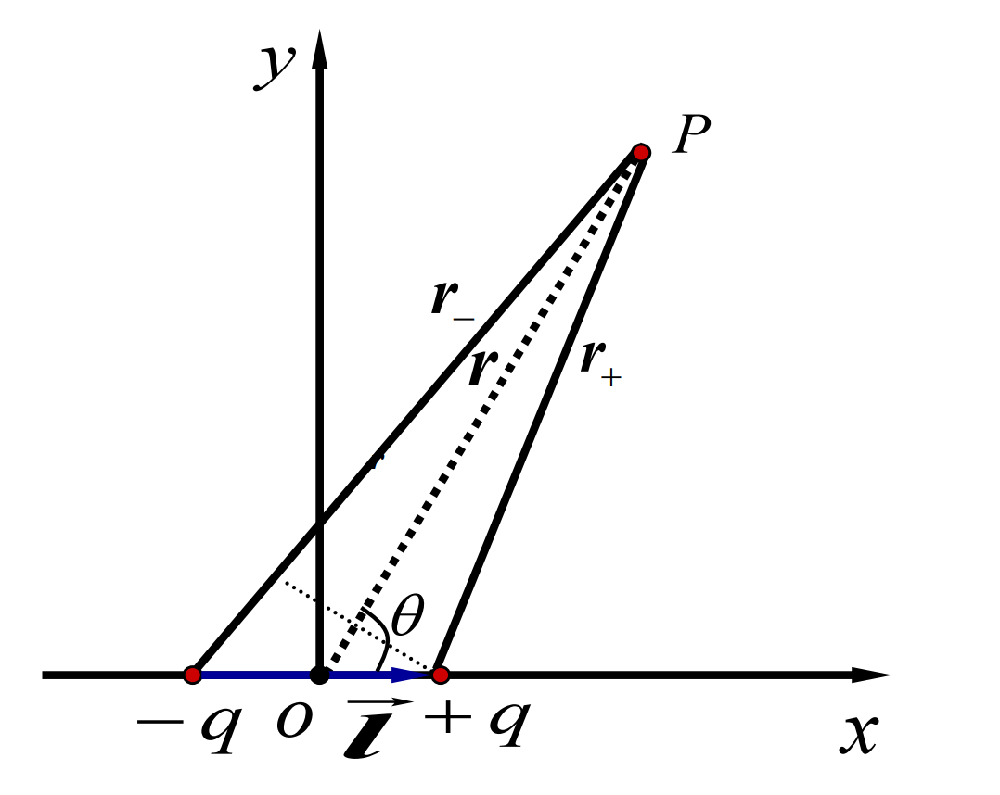
某一点P P P V V V
V = q 4 π ε 0 r + − q 4 π ε 0 r − = q 4 π ε 0 ( r + − r − r + r − ) \begin{aligned}
V =& \frac{q}{4\pi\varepsilon_0 r_{+}} - \frac{q}{4\pi\varepsilon_0 r_{-}} \\
=& \frac{q}{4\pi\varepsilon_0}(\frac{r_{+} - r_{-}}{r_+r_-}) \\
\end{aligned} V = = 4 π ε 0 r + q − 4 π ε 0 r − q 4 π ε 0 q ( r + r − r + − r − )
由于l l l r r r
V = q 4 π ε 0 l cos θ r 2 = p ⃗ ⋅ r ⃗ 4 π ε 0 r 3 \begin{aligned}
V = & \frac{q}{4\pi\varepsilon_0}\frac{l\cos\theta}{r^2} \\
= & \frac{\vec p\cdot\vec r}{4\pi\varepsilon_0 r^3} \\
\end{aligned} V = = 4 π ε 0 q r 2 l cos θ 4 π ε 0 r 3 p ⋅ r
求导可得场强表达式
{ E r = − d V d r = q l cos θ 2 π ε 0 r 3 = p cos θ 2 π ε 0 r 3 E θ = − d V r d θ = q l sin θ 4 π ε 0 r 3 = p sin θ 4 π ε 0 r 3 \begin{cases}
E_r = -\frac{\mathrm d V}{\mathrm d r} = \frac{ql\cos\theta}{2\pi\varepsilon_0 r^3} = \frac{p\cos\theta}{2\pi\varepsilon_0 r^3} \\
E_\theta = -\frac{\mathrm d V}{r\mathrm d \theta} = \frac{ql\sin\theta}{4\pi\varepsilon_0 r^3} = \frac{p\sin\theta}{4\pi\varepsilon_0 r^3} \\
\end{cases} { E r = − d r d V = 2 π ε 0 r 3 q l c o s θ = 2 π ε 0 r 3 p c o s θ E θ = − r d θ d V = 4 π ε 0 r 3 q l s i n θ = 4 π ε 0 r 3 p s i n θ
电偶极子在电场中的受力
如果在匀强电场，F ⃗ = − q E ⃗ + q E ⃗ = 0 ⃗ \vec F = -q\vec E + q\vec E = \vec 0 F = − q E + q E = 0
如果不在匀强电场，则
F ⃗ = − q E ⃗ ( r ⃗ ) + q E ⃗ ( r ⃗ + l ⃗ ) = q [ E ⃗ ( r ⃗ + l ⃗ ) − E ⃗ ( r ⃗ ) ] ∼ q ∇ E ⃗ ( r ⃗ ) ⋅ l ⃗ = ( ∇ E ⃗ ) ⋅ p ⃗ = ( p ⃗ ⋅ ∇ ) E ⃗ \begin{aligned}
\vec F =& -q\vec E(\vec r) + q\vec E(\vec r + \vec l) \\
=& q[\vec E(\vec r + \vec l) - \vec E(\vec r)] \\
\sim& q\nabla \vec E(\vec r) \cdot \vec l \\
=& (\nabla \vec E)\cdot \vec p\\
=& (\vec p\cdot \nabla) \vec E\\
\end{aligned} F = = ∼ = = − q E ( r ) + q E ( r + l ) q [ E ( r + l ) − E ( r ) ] q ∇ E ( r ) ⋅ l ( ∇ E ) ⋅ p ( p ⋅ ∇ ) E
这个对于动态电场也是正确的。
对于静态电场，有F ⃗ = − ∇ W = − ∇ ( − p ⃗ ⋅ E ⃗ ) = ∇ ( p ⃗ ⋅ E ⃗ ) \vec F = -\nabla W = -\nabla(-\vec p \cdot \vec E) = \nabla(\vec p \cdot \vec E) F = − ∇ W = − ∇ ( − p ⋅ E ) = ∇ ( p ⋅ E )
两者相等的条件是旋度为0 0 0
因为经计算可得( p ⃗ ⋅ ∇ ) E ⃗ = ∇ ( p ⃗ ⋅ E ⃗ ) − p ⃗ × ( ∇ × E ⃗ ) (\vec p\cdot\nabla)\vec E = \nabla(\vec p\cdot\vec E) - \vec p\times (\nabla\times \vec E) ( p ⋅ ∇ ) E = ∇ ( p ⋅ E ) − p × ( ∇ × E )
回顾：
∇ × E ⃗ = ∣ i ⃗ j ⃗ k ⃗ ∂ ∂ x ∂ ∂ y ∂ ∂ z E x E y E z ∣ \nabla\times \vec E = \begin{vmatrix}
\vec i & \vec j & \vec k\\
\frac{\partial}{\partial x} & \frac{\partial}{\partial y} &
\frac{\partial}{\partial z}\\
E_x & E_y & E_z
\end{vmatrix}
∇ × E = ∣ ∣ ∣ ∣ ∣ ∣ ∣ i ∂ x ∂ E x j ∂ y ∂ E y k ∂ z ∂ E z ∣ ∣ ∣ ∣ ∣ ∣ ∣
电偶极子在非匀强电场中的运动
由于受到力矩作用，可以认为是正极指向电场线方向。此时有p ⃗ ∥ E ⃗ \vec p\parallel\vec E p ∥ E p ⃗ = α E ⃗ ( α > 0 ) \vec p = \alpha \vec E\,(\alpha > 0) p = α E ( α > 0 )
∇ ∣ E ⃗ 2 ∣ = ∇ ( E ⃗ T E ⃗ ) = ( ∇ E ⃗ ) ⋅ 2 E ⃗ = 2 ( E ⃗ ⋅ ∇ ) E ⃗ = 2 1 α ( p ⃗ ⋅ ∇ ) E ⃗ = 2 1 α F ⃗ ⟹ F ⃗ = α 2 ∇ ∣ E ⃗ 2 ∣ \begin{aligned}\nabla \left|\vec E^2\right| =& \nabla (\vec E^T\vec E) \\
=& (\nabla \vec E)\cdot 2\vec E \\
=& 2(\vec E\cdot \nabla)\vec E\\
=& 2\frac{1}{\alpha}(\vec p\cdot \nabla)\vec E\\
=& 2\frac{1}{\alpha}\vec F\\
\implies & \vec F = \frac{\alpha}{2}\nabla \left|\vec E^2\right|\\
\end{aligned} ∇ ∣ ∣ ∣ ∣ E 2 ∣ ∣ ∣ ∣ = = = = = ⟹ ∇ ( E T E ) ( ∇ E ) ⋅ 2 E 2 ( E ⋅ ∇ ) E 2 α 1 ( p ⋅ ∇ ) E 2 α 1 F F = 2 α ∇ ∣ ∣ ∣ ∣ E 2 ∣ ∣ ∣ ∣
所以会往电场强的地方运动。
导体内部电子在外加电场下宏观移动，有宏观感应电荷分布现象。
假设外加匀强磁场E ⃗ \vec E E E ⃗ ′ \vec E' E ′ E ⃗ + E ⃗ ′ = 0 ⃗ \vec E + \vec E' = \vec 0 E + E ′ = 0 内部无电场 。
根据高斯定理，有ρ / ε 0 = 0 \rho/\varepsilon_0 = 0 ρ / ε 0 = 0 内部无电荷 。
对于表面电荷，应用高斯定理：
σ S ε 0 = E S ⟹ E ⃗ = σ ε 0 e ⃗ n \frac{\sigma S}{\varepsilon_0} = ES\implies \vec E = \frac{\sigma}{\varepsilon_0}\vec e_n
ε 0 σ S = E S ⟹ E = ε 0 σ e n
由这个可以得出，无限大均匀带电导体平板电荷面密度为σ \sigma σ σ / 2 \sigma/2 σ / 2
E ⃗ = σ 2 ε 0 \vec E = \frac{\sigma}{2\varepsilon_0}
E = 2 ε 0 σ
一般来讲，曲率 越大，电荷面密度越大（如尖端处）。
导体空腔内无电荷时，取一个内部高斯面（框住内表面），可以得出内壁电荷总量为0 0 0 导体空腔内壁不带电荷 。
导体空腔内有电荷q q q 0 0 0 内壁带电荷 − q -q − q
里面和外面显然是孤立的，所以说外壁的分布和里面无关。
严谨证明可以用唯一性定理（还没学）。
但是，里面的电荷分布会对外面电场大小产生影响（会让外表面产生感应电荷）。
有个很神秘的小结论：导体球壳对其中心的电势只和导体球壳半径和它的电荷总量有关，因为积分的时候R R R
假设无限大导体平板左右分别带电σ 1 , σ 2 \sigma_1, \sigma_2 σ 1 , σ 2 E 1 = σ 1 ε 0 E_1 = \frac{\sigma_1}{\varepsilon_0} E 1 = ε 0 σ 1 E 2 = σ 2 ε 0 E_2 = \frac{\sigma_2}{\varepsilon_0} E 2 = ε 0 σ 2
做题的时候也可以分开，把左右两面分别拆成向左的和向右的（电场贡献各1 / 2 1/2 1 / 2
总结：第一种方法是根据导体的性质得出的电场决定法 ，第二种方法是算出各个部分的电场贡献，再电场叠加法 。
导体上任意一个面元σ d S \sigma\mathrm d S σ d S σ 2 ε 0 \frac{\sigma}{2\varepsilon_0} 2 ε 0 σ
对外的电场应当是σ ε 0 \frac{\sigma}{\varepsilon_0} ε 0 σ σ 2 ε 0 \frac{\sigma}{2\varepsilon_0} 2 ε 0 σ
定义电容
C = Q Δ V A B C = \frac{Q}{\Delta V_{AB}}
C = Δ V A B Q
其中V A B V_{AB} V A B
电容串联是1 C = 1 C 1 + 1 C 2 \frac{1}{C} = \frac{1}{C_1} + \frac{1}{C_2} C 1 = C 1 1 + C 2 1 C = C 1 + C 2 C = C_1 + C_2 C = C 1 + C 2
电流密度j ⃗ \vec j j A / m 2 \mathrm{A/m^2} A / m 2
令电导率为γ \gamma γ j ⃗ = γ E ⃗ \vec j = \gamma \vec E j = γ E γ = 1 ρ \gamma = \frac{1}{\rho} γ = ρ 1
则热功率密度：
w = n q E ⃗ ⋅ v ⃗ = j ⃗ ⋅ E ⃗ = γ E 2 w = nq\vec E\cdot\vec v = \vec j\cdot\vec E = \gamma E^2
w = n q E ⋅ v = j ⋅ E = γ E 2
剩下的后面好像写过了。
电介质中会发生极化现象。密度均匀，各向同性的电介质中点电荷产生的电场变为：
E ⃗ = q 4 π ε 0 ε r r 3 r ⃗ \vec E = \frac{q}{4\pi\varepsilon_0\varepsilon_r r^3}\vec r
E = 4 π ε 0 ε r r 3 q r
同理，Gauss定理也不再一般成立（因为高斯面处会产生极化电子，一半在里面，一半在外面）。
在外电场中，极化原子为了让力矩为0 0 0 p ⃗ = α E ⃗ \vec p = \alpha \vec E p = α E α \alpha α
定义极化强度$$\vec P = \lim_{\Delta V\to 0} \frac{\sum_{i} p_i}{\Delta V}$$，这里的Δ V \Delta V Δ V C / m 2 \rm C/m^2 C / m 2
设某个闭合曲面围成的体积内有q ′ q' q ′
极化电荷面密度就是P ⃗ ⋅ e ⃗ n = P n \vec P\cdot\vec e_n = P_n P ⋅ e n = P n
\oiint E ⃗ ⋅ d S = q + q ′ ε 0 \oiint \vec E\cdot \mathrm d S = \frac{q + q'}{\varepsilon_0}
∬ E ⋅ d S = ε 0 q + q ′
或者微分形式
∇ ⋅ E ⃗ = ρ + ρ ′ ε 0 \nabla\cdot \vec E = \frac{\rho + \rho'}{\varepsilon_0}
∇ ⋅ E = ε 0 ρ + ρ ′
当各向同性介质的电场不太强时，有关系：
P ⃗ = X e ε 0 E ⃗ \vec P = \Chi_e\varepsilon_0\vec E
P = X e ε 0 E
其中$$\Chi_e = \varepsilon_r - 1$$
定义电位移矢量
D ⃗ = ε 0 E ⃗ + P ⃗ \vec D = \varepsilon_0 \vec E + \vec P
D = ε 0 E + P
已知
{ \oiint E ⃗ ⋅ d S = q + q ′ ε 0 \oiint P ⃗ ⋅ d S = − q ′ \begin{cases}
\oiint \vec E\cdot \mathrm d S = \frac{q + q'}{\varepsilon_0} \\
\oiint \vec P\cdot \mathrm d S = -q' \\
\end{cases} { ∬ E ⋅ d S = ε 0 q + q ′ ∬ P ⋅ d S = − q ′
第一个式子乘以ε 0 \varepsilon_0 ε 0
\oiint D ⃗ ⋅ d S = q \oiint \vec D\cdot \mathrm d S = q
∬ D ⋅ d S = q
所以D ⃗ \vec D D E ⃗ \vec E E P ⃗ \vec P P
这就是介质中的高斯定理。
当电场不大强，且均匀各向同性，则有
D ⃗ = ε 0 E ⃗ + ( ε r − 1 ) ε 0 P ⃗ = ε E ⃗ \vec D = \varepsilon_0 \vec E +(\varepsilon_r - 1)\varepsilon_0\vec P = \varepsilon \vec E
D = ε 0 E + ( ε r − 1 ) ε 0 P = ε E
（并非普遍成立！）
感应电荷：自由电荷重新分布
极化电荷：电介质极化产生
束缚电荷：有电荷的转移（摩擦等）
界面处没有自由电荷时，根据高斯定理
D ⃗ \vec D D E ⃗ \vec E E
在界面平行方向上，根据静电场环路定理，电场绕一圈做功为0 0 0 E ⃗ \vec E E
假设有n n n 1 , 2 , ⋯ , n − 1 1, 2, \cdots, n - 1 1 , 2 , ⋯ , n − 1
W e = ∑ i = 1 n − 1 ∑ j = 2 n q i q j 4 π ε 0 r i j W_e = \sum_{i = 1}^{n - 1} \sum_{j=2}^n \frac{q_iq_j}{4\pi\varepsilon_0 r_{ij}}
W e = i = 1 ∑ n − 1 j = 2 ∑ n 4 π ε 0 r i j q i q j
所以，对于每个q i q_i q i
1 2 ∑ j ≠ i q i q j 4 π ε 0 r i j = 1 2 q i U i \frac{1}{2}\sum_{j\neq i} \frac{q_iq_j}{4\pi\varepsilon_0 r_{ij}} = \frac{1}{2}q_iU_i
2 1 j = i ∑ 4 π ε 0 r i j q i q j = 2 1 q i U i
对于每个q i q_i q i
W e = 1 2 ∭ Q U d q W_e = \frac{1}{2}\iiint_Q U\mathrm d q
W e = 2 1 ∭ Q U d q
而变化的电磁场中，电场能为
W e = 1 2 ∭ E ⃗ ⋅ D ⃗ d V W_e = \frac{1}{2}\iiint \vec E\cdot \vec D\mathrm d V
W e = 2 1 ∭ E ⋅ D d V
电流强度
I = d q d t I = \frac{\mathrm d q}{\mathrm d t}
I = d t d q
电流密度
j ⃗ = d I d S e ⃗ n = n q v ⃗ d \vec j = \frac{\mathrm d I}{\mathrm d S}\vec e_n = nq\vec v_d
j = d S d I e n = n q v d
其中n n n
通过Drude模型可以推导出
j ⃗ = γ E ⃗ \vec j = \gamma \vec E
j = γ E
其中γ \gamma γ
w = f ⃗ ⋅ v ⃗ d = n q E ⃗ ⋅ v ⃗ d = j ⃗ ⋅ E ⃗ = γ E ⃗ 2 w = \vec f\cdot \vec v_d = nq\vec E\cdot \vec v_d = \vec j\cdot \vec E = \gamma \vec E^2
w = f ⋅ v d = n q E ⋅ v d = j ⋅ E = γ E 2
其中w w w
稳恒电场指电荷分布保持稳定，但是电荷并非不运动的电场。
稳恒电场也满足高斯定律和环流定律，但是有能量的转换。
对于一个平行板电容器，有
D = σ E = D ε = σ ε U = E ⋅ d = d σ ε Q = σ S C = Q U = S ε d \begin{aligned}
D &= \sigma\\
E &= \frac{D}{\varepsilon} = \frac{\sigma}{\varepsilon}\\
U &= E\cdot d = \frac{d\sigma}{\varepsilon}\\
Q &= \sigma S\\
C &= \frac{Q}{U} = \frac{S\varepsilon}{d}
\end{aligned} D E U Q C = σ = ε D = ε σ = E ⋅ d = ε d σ = σ S = U Q = d S ε
然后，如果串联，有
1 C = 1 C 1 + 1 C 2 \frac{1}{C} = \frac{1}{C_1} + \frac{1}{C_2}
C 1 = C 1 1 + C 2 1
并联有
C = C 1 + C 2 C = C_1 + C_2
C = C 1 + C 2
可以用C = d Q d U C = \frac{\mathrm d Q}{\mathrm d U} C = d U d Q
如果两个电容并联，则自由电荷面密度 不一定相同，但是只要d d d E E E
如果电压不变，电源可能会做功，要考虑哦。
一段长度为d l \mathrm d l d l P P P
d B ⃗ = μ 0 4 π ⋅ I d l sin θ r 2 e ⃗ B = μ 0 4 π ⋅ I d l ⃗ × r ⃗ r 3 \mathrm d \vec B = \frac{\mu_0}{4\pi}\cdot \frac{I\mathrm d l \sin\theta}{r^2}\vec e_B = \frac{\mu_0}{4\pi}\cdot \frac{I\mathrm d \vec l \times \vec r}{r^3}
d B = 4 π μ 0 ⋅ r 2 I d l sin θ e B = 4 π μ 0 ⋅ r 3 I d l × r
其中μ 0 = 4 π × 1 0 − 7 T ⋅ m / A \mu_0 = 4\pi \times 10^{-7} \rm T\cdot m/A μ 0 = 4 π × 1 0 − 7 T ⋅ m / A
磁距m ⃗ = N I S e ⃗ n \vec m = NIS\vec e_n m = N I S e n S ⃗ \vec S S
对于圆环线圈积分，有
B = μ 0 4 π ∫ 0 2 π R I d l ⋅ sin θ R 2 + z 2 = μ 0 4 π ⋅ I ⋅ 2 π R ⋅ R ( R 2 + z 2 ) 3 / 2 = μ 0 I R 2 2 ( R 2 + z 2 ) 3 / 2 B = \frac{\mu_0}{4\pi}\int_0^{2\pi R}\frac{I\mathrm d l\cdot \sin\theta}{R^2+z^2} = \frac{\mu_0}{4\pi}\cdot\frac{I\cdot 2\pi R\cdot R}{(R^2+z^2)^{3/2}} = \frac{\mu_0 I R^2}{2(R^2+z^2)^{3/2}}
B = 4 π μ 0 ∫ 0 2 π R R 2 + z 2 I d l ⋅ sin θ = 4 π μ 0 ⋅ ( R 2 + z 2 ) 3 / 2 I ⋅ 2 π R ⋅ R = 2 ( R 2 + z 2 ) 3 / 2 μ 0 I R 2
当z z z R R R
B ⃗ ∼ μ 0 I R 2 e ⃗ n 2 z 3 = μ 0 m ⃗ 2 π z 3 \vec B \sim \frac{\mu_0 I R^2\vec e_n}{2z^3} = \frac{\mu_0 \vec m}{2\pi z^3}
B ∼ 2 z 3 μ 0 I R 2 e n = 2 π z 3 μ 0 m
磁矩可用于求磁力矩。磁矩的适用范围：必须是匀强磁场，或者线圈非常小（可视为匀强磁场）。
设螺线管匝数密度为n n n I I I
B = μ 0 n I B = \mu_0 n I
B = μ 0 n I
半无限长螺线管：
B = 1 2 μ 0 n I B = \frac{1}{2}\mu_0 n I
B = 2 1 μ 0 n I
稳恒磁场中，有
\oiint B ⃗ ⋅ d S ⃗ = 0 \oiint \vec B\cdot \mathrm d \vec S = 0
∬ B ⋅ d S = 0
因为任意电流系统可分为无限个电流元，每个电流元产生的磁场线都是闭合的，所以通过任意闭合曲面的磁通量为0 0 0
微分形式：
∇ ⋅ B ⃗ = 0 \nabla \cdot \vec B = 0
∇ ⋅ B = 0
这说明稳恒磁场是无源场。
稳恒磁场中，沿任意闭合路径的磁场强度环量等于该闭合路径所围面积内的总电流乘以μ 0 \mu_0 μ 0
∮ L B ⃗ ⋅ d l ⃗ = μ 0 I e n c \oint_L \vec B\cdot \mathrm d \vec l = \mu_0 I_{enc}
∮ L B ⋅ d l = μ 0 I e n c
微分形式：
∇ × B ⃗ = μ 0 j ⃗ \nabla \times \vec B = \mu_0 \vec j
∇ × B = μ 0 j
在螺线管内部，有$$\vec B = \mu_0 n I \vec e_n$$
在螺线管边缘，有$$\vec B = \frac{1}{2}\mu_0 n I \vec e_n$$
洛伦兹力公式：
F ⃗ = q v ⃗ × B ⃗ \vec F = q\vec v \times \vec B
F = q v × B
一个电流元受力：
d F ⃗ = n q S d l v ⃗ × B ⃗ = I d l ⃗ × B ⃗ \mathrm d \vec F = nqS\mathrm d l\vec v\times \vec B = I\mathrm d \vec l \times \vec B
d F = n q S d l v × B = I d l × B
安培力公式是洛伦兹力公式的宏观表现。
为什么安培力可以做功？原因是电流源做功。安培力只是传递能量的媒介。
A = I ( Φ 2 − Φ 1 ) A = I(\Phi_2 - \Phi_1)
A = I ( Φ 2 − Φ 1 )
其中Φ 1 , Φ 2 \Phi_1, \Phi_2 Φ 1 , Φ 2
这个公式只适用于稳恒磁场和恒定电流。
顺磁性物质在外磁场中会增强磁场，抗磁性物质在外磁场中会削弱磁场。
实验证明，均匀各向同性的介质中，有
B ⃗ = μ r B ⃗ 0 \vec B = \mu_r \vec B_0
B = μ r B 0
如果μ r > 1 \mu_r > 1 μ r > 1 μ r < 1 \mu_r < 1 μ r < 1 μ r ≫ 1 \mu_r \gg 1 μ r ≫ 1 μ r ≈ 0 \mu_r \approx 0 μ r ≈ 0
磁铁会吸引顺磁性物质，排斥抗磁性物质。
电子的磁矩分为自旋磁矩和轨道磁矩。
自旋磁矩$$\vec \mu_s = -g_s\frac{e}{2m_e}\vec S$$
轨道磁矩$$\vec \mu_l = -\frac{e}{2m_e}\vec L$$
顺磁质的分子磁矩方向与外磁场方向相同，抗磁质的分子磁矩方向与外磁场方向相反。
定义磁化强度$$\vec M = \lim_{\Delta V\to 0} \frac{\sum_i \vec \mu_i}{\Delta V}$$
其中Δ V \Delta V Δ V
磁化面电流的线密度为$$\vec \alpha’ = \vec M \times \vec e_n$$
可以得出磁化电流为：
d I ′ = α d l = M ⃗ ⋅ d l ⃗ dI' = \alpha\mathrm d l = \vec M \cdot \mathrm d \vec l
d I ′ = α d l = M ⋅ d l
B ⃗ = B ⃗ 0 + B ⃗ ′ \vec B = \vec B_0 + \vec B'
B = B 0 + B ′
其中B ⃗ 0 \vec B_0 B 0 B ⃗ ′ \vec B' B ′
所以可以得出介质中磁高斯定理（与真空中相同）：
\oiint B ⃗ ⋅ d S ⃗ = 0 \oiint \vec B\cdot \mathrm d \vec S = 0
∬ B ⋅ d S = 0
介质中安培环路定理：
∮ L B ⃗ ⋅ d l ⃗ = μ 0 ( ∑ I + ∑ I ′ ) \oint_L \vec B\cdot \mathrm d \vec l = \mu_0 (\sum I + \sum I')
∮ L B ⋅ d l = μ 0 ( ∑ I + ∑ I ′ )
∮ l B ⃗ ⋅ d l ⃗ = μ 0 ( ∑ I + ∑ I ′ ) = μ 0 ( ∑ I + ∮ l M ⃗ ⋅ d l ⃗ ) \oint_l \vec B\cdot\mathrm d \vec l = \mu_0 (\sum I + \sum I') = \mu_0 \left(\sum I + \oint_l \vec M\cdot \mathrm d \vec l\right)
∮ l B ⋅ d l = μ 0 ( ∑ I + ∑ I ′ ) = μ 0 ( ∑ I + ∮ l M ⋅ d l )
定义磁场强度$$\vec H = \frac{1}{\mu_0}\vec B - \vec M$$
则有介质中安培环路定理：
∮ L H ⃗ ⋅ d l ⃗ = ∑ I \oint_L \vec H\cdot \mathrm d \vec l = \sum I
∮ L H ⋅ d l = ∑ I
其中I I I
注意了，这只说明了传导电流为0 0 0 H ⃗ \vec H H 0 0 0 H ⃗ = 0 \vec H = 0 H = 0
有
B ⃗ = μ 0 μ r H ⃗ \vec B = \mu_0\mu_r \vec H
B = μ 0 μ r H
M ⃗ = χ m H ⃗ = ( μ r − 1 ) H ⃗ \vec M = \chi_m \vec H = (\mu_r - 1)\vec H
M = χ m H = ( μ r − 1 ) H
极化强度有
− q ′ = \oiint P ⃗ ⋅ d S -q' = \oiint \vec P \cdot \mathrm d S
− q ′ = ∬ P ⋅ d S
而磁化强度有
I ′ = ∮ M ⃗ ⋅ d l ⃗ I' = \oint \vec M \cdot \mathrm d \vec l
I ′ = ∮ M ⋅ d l
极化强度有一个负号，所以是削弱。当μ r > 1 \mu_r > 1 μ r > 1
表面情况
极化强度可以得出极化电荷面密度：
σ ′ = P ⃗ ⋅ e ⃗ n \sigma' = \vec P \cdot \vec e_n
σ ′ = P ⋅ e n
而磁化强度可以得出磁化电流面密度：
α ⃗ ′ = M ⃗ × e ⃗ n \vec \alpha' = \vec M \times \vec e_n
α ′ = M × e n
微分形式
− ρ ′ = ∇ ⋅ P ⃗ -\rho' = \nabla \cdot \vec P
− ρ ′ = ∇ ⋅ P
这个负号说明极化电荷是削弱电场的，但P ⃗ \vec P P E ⃗ \vec E E
j ⃗ ′ = ∇ × M ⃗ \vec j' = \nabla \times \vec M
j ′ = ∇ × M
虽然在同一介质内（不包含界面），高斯定理对H ⃗ \vec H H B ⃗ \vec B B M ⃗ \vec M M \oiint S M ⃗ d S \oiint_S \vec M\mathrm d S ∬ S M d S 0 0 0
所以在界面上只能使用对于B ⃗ \vec B B B ⃗ \vec B B
而安培环路定理对于H ⃗ \vec H H B ⃗ \vec B B H ⃗ \vec H H
所以界面上的边界条件为：
{ B 1 n = B 2 n H 1 t = H 2 t E 1 t = E 2 t D 1 n = D 2 n \begin{cases}
B_{1n} = B_{2n}\\
H_{1t} = H_{2t}\\
E_{1t} = E_{2t}\\
D_{1n} = D_{2n}\\
\end{cases} ⎩ ⎪ ⎪ ⎪ ⎪ ⎨ ⎪ ⎪ ⎪ ⎪ ⎧ B 1 n = B 2 n H 1 t = H 2 t E 1 t = E 2 t D 1 n = D 2 n
ε = ∮ L E ⃗ ⋅ d l ⃗ = − d Φ B d t \varepsilon = \oint_L \vec E\cdot \mathrm d \vec l = -\frac{\mathrm d \Phi_B}{\mathrm d t}
ε = ∮ L E ⋅ d l = − d t d Φ B
其中Φ B = \oiint S B ⃗ ⋅ d S ⃗ \Phi_B = \oiint_S \vec B\cdot \mathrm d \vec S Φ B = ∬ S B ⋅ d S
微分形式：
∇ × E ⃗ = − ∂ B ⃗ ∂ t \nabla \times \vec E = -\frac{\partial \vec B}{\partial t}
∇ × E = − ∂ t ∂ B
d ε = ( v ⃗ × B ⃗ ) ⋅ d l ⃗ \mathrm d \varepsilon = (\vec v\times \vec B)\cdot\mathrm d \vec l
d ε = ( v × B ) ⋅ d l
d l ⃗ \mathrm d\vec l d l
进而得出$$\mathrm d \varepsilon = -(\vec B\times \vec v)\cdot \mathrm d \vec l \= -\mathrm d\vec B\cdot (\vec v\times \mathrm d\vec l) = -\frac{\vec B\cdot\mathrm d\vec S}{\mathrm d t} \= -\frac{\mathrm d \Phi_m}{\mathrm d t}$$
此结论只适用于稳恒磁场。
∇ × E ⃗ = − ∂ B ⃗ ∂ t \nabla \times \vec E = -\frac{\partial \vec B}{\partial t}
∇ × E = − ∂ t ∂ B
ε = − d Φ d t \varepsilon = -\frac{\mathrm d \Phi}{\mathrm d t}
ε = − d t d Φ
由于B ∝ I B\propto I B ∝ I Φ ∝ I \Phi \propto I Φ ∝ I
称$$L = \frac{\Phi}{I}$$为自感系数。
ε = − L d I d t \varepsilon = -L \frac{\mathrm d I}{\mathrm d t}
ε = − L d t d I
互感系数：M 21 M_{21} M 2 1 1 1 1 2 2 2
位移电流密度：
j ⃗ d = ∂ D ⃗ ∂ t \vec j_d = \frac{\partial \vec D}{\partial t}
j d = ∂ t ∂ D
可以得出位移电流：
I d = ∬ S j ⃗ d ⋅ d S ⃗ = ∬ S ∂ D ⃗ ∂ t ⋅ d S ⃗ = d d t ∬ S D ⃗ ⋅ d S ⃗ I_d = \iint_S \vec j_d \cdot \mathrm d \vec S = \iint_S \frac{\partial \vec D}{\partial t} \cdot \mathrm d \vec S = \frac{\mathrm d}{\mathrm d t} \iint_S \vec D\cdot \mathrm d \vec S
I d = ∬ S j d ⋅ d S = ∬ S ∂ t ∂ D ⋅ d S = d t d ∬ S D ⋅ d S
定义全电流I t = I c + I d I_t = I_c + I_d I t = I c + I d I c I_c I c I t I_t I t
有
∮ L H ⃗ ⋅ d l ⃗ = I t = I c + I d \oint_L \vec H\cdot \mathrm d \vec l = I_t = I_c + I_d
∮ L H ⋅ d l = I t = I c + I d
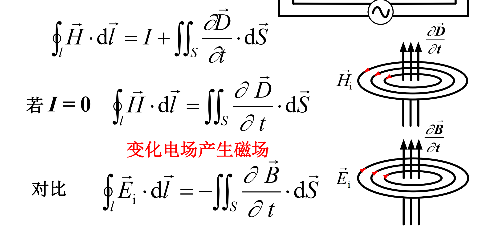
{ ∇ ⋅ D ⃗ = ρ ∇ ⋅ B ⃗ = 0 ∇ × E ⃗ = − ∂ B ⃗ ∂ t ∇ × H ⃗ = j ⃗ + ∂ D ⃗ ∂ t \begin{cases}
\nabla \cdot \vec D = \rho\\
\nabla \cdot \vec B = 0\\
\nabla \times \vec E = -\frac{\partial \vec B}{\partial t}\\
\nabla \times \vec H = \vec j + \frac{\partial \vec D}{\partial t}\\
\end{cases} ⎩ ⎪ ⎪ ⎪ ⎪ ⎨ ⎪ ⎪ ⎪ ⎪ ⎧ ∇ ⋅ D = ρ ∇ ⋅ B = 0 ∇ × E = − ∂ t ∂ B ∇ × H = j + ∂ t ∂ D
积分形式
{ \oiint S D ⃗ ⋅ d S ⃗ = q \oiint S B ⃗ ⋅ d S ⃗ = 0 ∮ L E ⃗ ⋅ d l ⃗ = − d d t ∬ S B ⃗ ⋅ d S ⃗ ∮ L H ⃗ ⋅ d l ⃗ = ∬ S j ⃗ ⋅ d S ⃗ + d d t ∬ S D ⃗ ⋅ d S ⃗ \begin{cases}
\oiint_S \vec D\cdot \mathrm d \vec S = q\\
\oiint_S \vec B\cdot \mathrm d \vec S = 0\\
\oint_L \vec E\cdot \mathrm d \vec l = -\frac{\mathrm d}{\mathrm d t} \iint_S \vec B\cdot \mathrm d \vec S\\
\oint_L \vec H\cdot \mathrm d \vec l = \iint_S \vec j\cdot \mathrm d \vec S + \frac{\mathrm d}{\mathrm d t} \iint_S \vec D\cdot \mathrm d \vec S\\
\end{cases} ⎩ ⎪ ⎪ ⎪ ⎪ ⎨ ⎪ ⎪ ⎪ ⎪ ⎧ ∬ S D ⋅ d S = q ∬ S B ⋅ d S = 0 ∮ L E ⋅ d l = − d t d ∬ S B ⋅ d S ∮ L H ⋅ d l = ∬ S j ⋅ d S + d t d ∬ S D ⋅ d S
总结：
首先最好理解的是\oiint D ⃗ ⋅ d S ⃗ = q \oiint \vec D\cdot\mathrm d \vec S = q ∬ D ⋅ d S = q \oiint B ⃗ ⋅ d S ⃗ = 0 \oiint \vec B\cdot \mathrm d \vec S = 0 ∬ B ⋅ d S = 0
其实这里为了统一，我们可以做这么一个变换：d d t \oiint D ⃗ ⋅ d S ⃗ = d q d t = − I c \frac{\mathrm d }{\mathrm d t}\oiint \vec D\cdot\mathrm d \vec S = \frac{\mathrm d q}{\mathrm d t} = -I_c d t d ∬ D ⋅ d S = d t d q = − I c
移项可得
\oiint ( ∂ D ⃗ ∂ t + j ⃗ c ) ⋅ d S ⃗ = 0 \oiint \left(\frac{\partial \vec D}{\partial t} + \vec j_c\right)\cdot \mathrm d \vec S = 0
∬ ( ∂ t ∂ D + j c ) ⋅ d S = 0
也就是说全电流是一个全空间无源的东西。
对于后面两个公式，一个就是磁生电效应：
∮ E ⃗ d l ⃗ = − \oiint ∂ B ∂ t d S ⃗ \oint \vec E\mathrm d \vec l = -\oiint \frac{\partial B}{\partial t}\mathrm d \vec S
∮ E d l = − ∬ ∂ t ∂ B d S
另一个是电生磁效应，改成用全电流表示的：
∮ H ⃗ d l ⃗ = \oiint ( ∂ D ⃗ ∂ t + j ⃗ c ) ⋅ d S ⃗ \oint \vec H\mathrm d \vec l = \oiint \left(\frac{\partial \vec D}{\partial t} + \vec j_c\right)\cdot \mathrm d \vec S
∮ H d l = ∬ ( ∂ t ∂ D + j c ) ⋅ d S
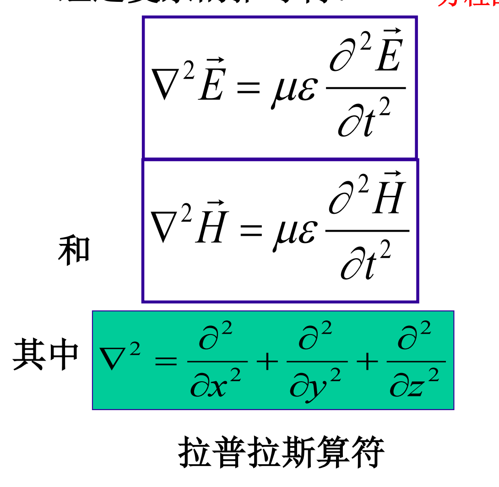
折射率为
n = ε r μ r n = \sqrt{\varepsilon_r \mu_r}
n = ε r μ r
光的性质
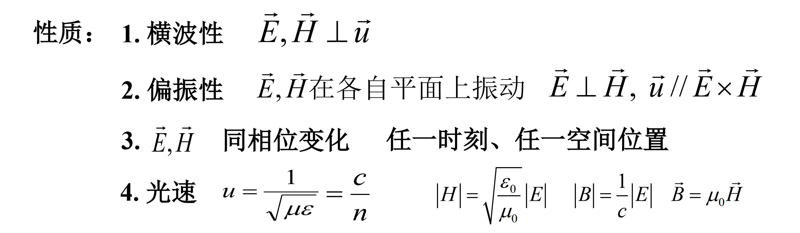
坡因廷矢量：
S ⃗ = E ⃗ × H ⃗ \vec S = \vec E \times \vec H
S = E × H
是电磁波的能流密度。
可以这样得出：
电场能：
w e = 1 2 E ⃗ ⋅ D ⃗ = 1 2 ε E 2 w_e = \frac{1}{2}\vec E \cdot \vec D = \frac{1}{2}\varepsilon E^2
w e = 2 1 E ⋅ D = 2 1 ε E 2
磁场能：
w m = 1 2 B ⃗ ⋅ H ⃗ = 1 2 μ B 2 = 1 2 μ H 2 w_m = \frac{1}{2}\vec B \cdot \vec H = \frac{1}{2\mu} B^2 = \frac{1}{2}\mu H^2
w m = 2 1 B ⋅ H = 2 μ 1 B 2 = 2 1 μ H 2
根据电磁波波速$$u = \frac{1}{\sqrt{\varepsilon \mu}} = \frac{c}{n}$$
以及小关系$$\sqrt{\varepsilon}E = \sqrt{\mu}H$$
则w = w e + w m = ε E 2 = μ H 2 = E H u w = w_e + w_m = \varepsilon E^2 = \mu H^2 = \frac{EH}{u} w = w e + w m = ε E 2 = μ H 2 = u E H
这是单位体积的能量，也就是能量密度。
则$$S = wu = EH$$
电磁波强度：
I = ⟨ S ⟩ = E 0 H 0 2 = E 0 2 2 μ 0 c I = \langle S \rangle = \frac{E_0 H_0}{2} = \frac{E_0^2}{2\mu_0 c}
I = ⟨ S ⟩ = 2 E 0 H 0 = 2 μ 0 c E 0 2
质量密度：$$\rho_m = \frac{w}{c^2}$$
动量密度：$$\vec p = \rho_m \vec c = \frac{w}{c}\vec e_c = \frac{\vec S}{c^2}$$
辐射压强：$$P = \frac{F}{\Delta S} = \frac{pc\Delta S}{\Delta S} = pc = w$$
匀速直线运动的电荷不辐射。
谱线宽度：
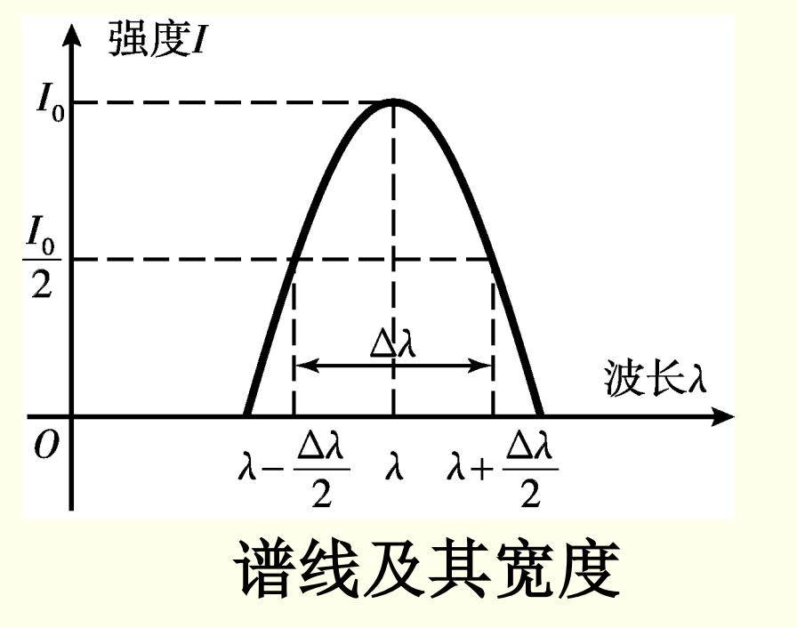
原子发光的单色波列长度Δ x \Delta x Δ x Δ λ \Delta \lambda Δ λ
Δ x = λ 2 Δ λ \Delta x = \frac{\lambda^2}{\Delta \lambda}
Δ x = Δ λ λ 2
偏振度：
P = I max − I min I max + I min P = \frac{I_{\text{max}} - I_{\text{min}}}{I_{\text{max}} + I_{\text{min}}}
P = I max + I min I max − I min
马吕斯定律：
I = I 0 cos 2 θ I = I_0 \cos^2 \theta
I = I 0 cos 2 θ
可能还会有一个透过率γ \gamma γ
旋光现象：对两个方向的圆偏振光，介质的折射率不同。
偏振片：让偏振方向变成特定方向。
全波片：附加λ \lambda λ
半波片：附加λ / 2 \lambda/2 λ / 2
四分之一薄片：附加λ / 4 \lambda/4 λ / 4
波片的原理是附加光程差δ = d ( n e − n o ) \delta = d(n_e - n_o) δ = d ( n e − n o )
如果i + γ = π 2 i+\gamma = \frac{\pi}{2} i + γ = 2 π
光轴：光在晶体里沿某个方向传播时不会发生双折射，则这个方向称为光轴。
主平面：光轴和光的传播方向构成的平面。
o光和e光：o光遵循折射定律，e光不遵循折射定律，即sin i / sin γ ≠ const \sin i/\sin \gamma\neq \text{const} sin i / sin γ = const
一定有：o光光矢量⊥ \perp ⊥ ⊥ \perp ⊥ / / // / /
有：n o = c v o n_o = \frac{c}{v_o} n o = v o c n e = c n e n_e = \frac{c}{n_e} n e = n e c n o < n e n_o<n_e n o < n e n o > n e n_o>n_e n o > n e
这里的n e = sin i sin γ e n_e = \frac{\sin i}{\sin \gamma_e} n e = s i n γ e s i n i
合光矢量：
E ⃗ = E ⃗ 1 + E ⃗ 2 \vec E = \vec E_1 + \vec E_2
E = E 1 + E 2
可以得出
E 2 = E 1 2 + E 2 2 + 2 E 1 E 2 cos θ E^2 = E_1^2 + E_2^2 + 2E_1E_2\cos\theta
E 2 = E 1 2 + E 2 2 + 2 E 1 E 2 cos θ
所以
I = I 1 + I 2 + 2 I 1 I 2 , 干涉加强 I = I 1 + I 2 − 2 I 1 I 2 , 干涉减弱 \begin{aligned}
I &= I_1 + I_2 + 2\sqrt{I_1 I_2} & \text{, 干涉加强} \\
I &= I_1 + I_2 - 2\sqrt{I_1 I_2} & \text{, 干涉减弱} \\
\end{aligned} I I = I 1 + I 2 + 2 I 1 I 2 = I 1 + I 2 − 2 I 1 I 2 , 干涉加强 , 干涉减弱
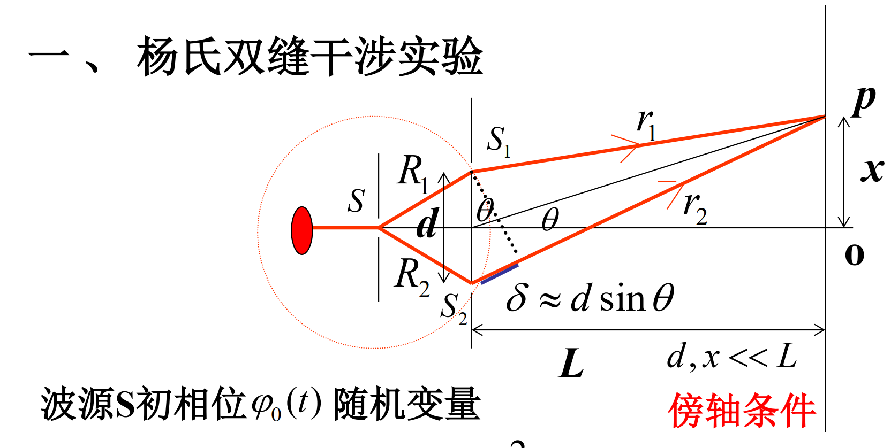
由于d , x ≪ L d, x\ll L d , x ≪ L r 1 ≈ r 2 − d sin θ r_1\approx r_2 - d\sin\theta r 1 ≈ r 2 − d sin θ θ \theta θ
光程差δ = r 2 − r 1 = d sin θ \delta = r_2 - r_1 = d\sin\theta δ = r 2 − r 1 = d sin θ
干涉加强条件：
δ = k λ ⟹ sin θ = k λ d \delta = k\lambda\implies \sin\theta = \frac{k\lambda}{d}
δ = k λ ⟹ sin θ = d k λ
与原点距离
x = L tan θ ≈ L sin θ = k L λ d x = L\tan\theta \approx L\sin\theta = k\frac{L\lambda}{d}
x = L tan θ ≈ L sin θ = k d L λ
所以条纹宽度
Δ x = L λ d \Delta x = \frac{L\lambda}{d}
Δ x = d L λ
或者
λ = d Δ x L \lambda = \frac{d\Delta x}{L}
λ = L d Δ x
干涉光强分布：
I = 2 I 0 + 2 I 0 cos Δ φ = 2 I 0 ( 1 + cos Δ φ ) = 4 I 0 cos 2 Δ φ 2 = 4 I 0 cos 2 ( π λ d sin θ ) \begin{aligned}
I &= 2I_0 + 2I_0\cos{\Delta \varphi}\\
&= 2I_0(1 + \cos{\Delta\varphi})\\
&= 4I_0\cos^2{\frac{\Delta\varphi}{2}}\\
&= 4I_0\cos^2{(\frac{\pi}{\lambda}d\sin\theta)}\\
\end{aligned} I = 2 I 0 + 2 I 0 cos Δ φ = 2 I 0 ( 1 + cos Δ φ ) = 4 I 0 cos 2 2 Δ φ = 4 I 0 cos 2 ( λ π d sin θ )
通过平面反射构造S 2 S_2 S 2
本质相同
设Δ x \Delta x Δ x
Δ x = λ 2 Δ λ \Delta x = \frac{\lambda^2}{\Delta \lambda}
Δ x = Δ λ λ 2
其中Δ λ \Delta\lambda Δ λ I 0 / 2 I_0/2 I 0 / 2 λ \lambda λ λ + 1 2 Δ λ \lambda + \frac{1}{2}\Delta\lambda λ + 2 1 Δ λ k m k_m k m λ − 1 2 Δ λ \lambda - \frac{1}{2}\Delta\lambda λ − 2 1 Δ λ k m + 1 k_m + 1 k m + 1
当δ > Δ x \delta > \Delta x δ > Δ x
记δ m \delta_m δ m
τ = δ m c \tau = \frac{\delta_m}{c}
τ = c δ m
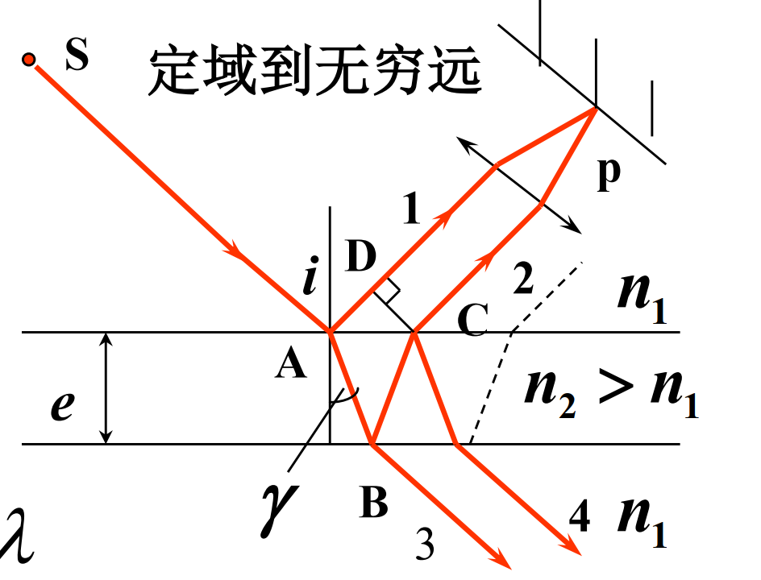
计算光程差：
δ A B C = 2 e n 2 cos γ δ A D = 2 e n 1 tan γ sin i − λ / 2 \delta_{ABC} = \frac{2en_2}{\cos\gamma}\\
\delta_{AD} = 2en_1\tan\gamma\sin i - \lambda/2 δ A B C = cos γ 2 e n 2 δ A D = 2 e n 1 tan γ sin i − λ / 2
注意A点处反射有半波损失。
所以有
δ = 2 e n 2 ( 1 cos γ − sin γ tan γ ) + λ / 2 = 2 e n 2 cos γ ( 1 − sin 2 γ ) + λ / 2 = 2 e n 2 cos γ + λ / 2 = 2 e n 2 2 − n 1 2 sin 2 i + λ / 2 \begin{aligned} \delta =& 2en_2(\frac{1}{\cos\gamma} - \sin\gamma\tan\gamma) + \lambda/2\\
=& \frac{2en_2}{\cos\gamma}(1 - \sin^2\gamma) + \lambda / 2\\
=& 2en_2\cos\gamma + \lambda / 2\\
=& 2e\sqrt{n_2^2 - n_1^2\sin^2 i} + \lambda / 2\end{aligned} δ = = = = 2 e n 2 ( cos γ 1 − sin γ tan γ ) + λ / 2 cos γ 2 e n 2 ( 1 − sin 2 γ ) + λ / 2 2 e n 2 cos γ + λ / 2 2 e n 2 2 − n 1 2 sin 2 i + λ / 2
δ = 2 n e \delta = 2ne
δ = 2 n e
只有中间那个缝会产生干涉。
为什么呢？其他的东西几何量级太大了，不会产生明显的干涉现象。
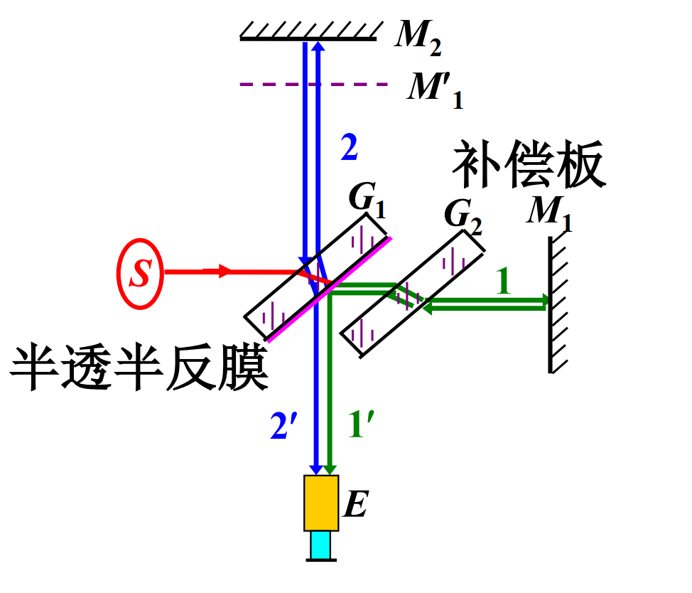
注意有半波损失（M2有一次反射是没有半波损失的，而M1两次反射都有半波损失）。
注意经过每个路径两次，所以加个玻璃管有两倍的光程。
先经过P1起偏器，再经过一个光轴与传播路线垂直，但和P1不垂直的晶体（此时o光和e光路线相同，但是速度不同），再经过P2检偏器（和P1不平行）。
相位差可能出现在两个阶段：1. 晶体内部，光程差δ c = d ( n e − n o ) \delta_c = d(n_e - n_o) δ c = d ( n e − n o ) A e A_e A e A o A_o A o λ / 2 \lambda/2 λ / 2
晶片还可能厚度不均匀，此时不同厚度就可能出现消光和加强的现象，形成条纹。
色偏振可以测应力。
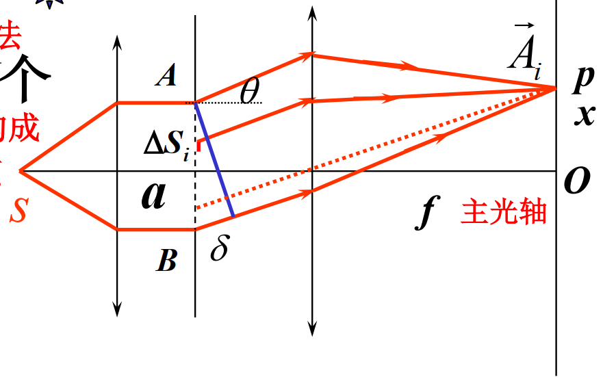
假设AB中间有N + 1 N + 1 N + 1 a a a
现在研究与水平方向夹角为θ \theta θ
δ = a sin θ \delta = a\sin\theta
δ = a sin θ
所以两束相邻的光之间的光程差为
Δ δ = a sin θ N \Delta\delta = \frac{a\sin\theta}{N}
Δ δ = N a sin θ
对应的相位差为
φ = 2 π Δ δ λ = 2 π a sin θ N λ \varphi = \frac{2\pi\Delta\delta}{\lambda} = \frac{2\pi a\sin\theta}{N\lambda}
φ = λ 2 π Δ δ = N λ 2 π a sin θ
可以化成一个多边形：
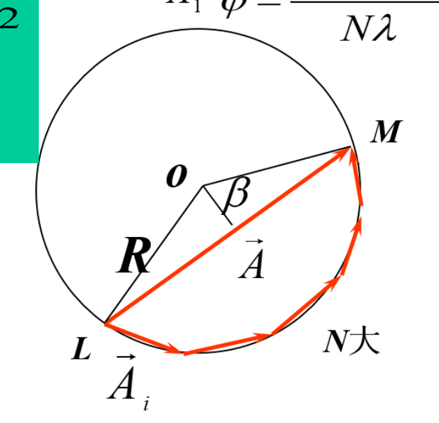
根据图中的β \beta β ∣ A ⃗ ∣ \left|\vec A\right| ∣ ∣ ∣ ∣ A ∣ ∣ ∣ ∣ 2 R sin β 2R\sin\beta 2 R sin β 2 β = N φ 2\beta = N\varphi 2 β = N φ
β = π a sin θ λ ∣ A ⃗ ∣ = 2 R sin β = 2 R sin ( π a sin θ λ ) \begin{aligned}
\beta &= \frac{\pi a\sin\theta}{\lambda} \\
\left|\vec A\right| &= 2R\sin\beta = 2R\sin(\frac{\pi a\sin\theta}{\lambda}) \\
\end{aligned} β ∣ ∣ ∣ ∣ A ∣ ∣ ∣ ∣ = λ π a sin θ = 2 R sin β = 2 R sin ( λ π a sin θ )
此时我们令N → ∞ N\to\infty N → ∞ A 1 A_1 A 1
A in = lim N → ∞ ( N A 1 ) = 2 β R A_{\text{in}} = \lim_{N\to\infty} (NA_1) = 2\beta R
A in = N → ∞ lim ( N A 1 ) = 2 β R
所以就可以得出
A out = ∣ A ⃗ ∣ = 2 R sin β = A in sin β β A_{\text{out}} = \left|\vec A\right| = 2R\sin\beta = A_{\text{in}} \frac{\sin\beta}{\beta}
A out = ∣ ∣ ∣ ∣ A ∣ ∣ ∣ ∣ = 2 R sin β = A in β sin β
根据I ∝ A 2 I\propto A^2 I ∝ A 2
I = I 0 ( sin β β ) 2 I = I_0(\frac{\sin\beta}{\beta})^2
I = I 0 ( β sin β ) 2
其中β \beta β
注意！这里的I 0 I_0 I 0
中央亮纹最宽最亮（sin β β ≤ 1 \frac{\sin\beta}{\beta}\leq 1 β s i n β ≤ 1 β = 0 \beta =0 β = 0
暗纹满足（sin β β = 0 ⟺ sin β = 0 & β ≠ 0 ⟺ β = k π & k ≠ 0 \frac{\sin\beta}{\beta} = 0\iff \sin\beta = 0 \& \beta\neq 0\iff \beta = k\pi\& k\neq 0 β s i n β = 0 ⟺ sin β = 0 & β = 0 ⟺ β = k π & k = 0
β = π a sin θ λ = k π ⟹ sin θ = k λ a \beta = \frac{\pi a\sin\theta}{\lambda} = k\pi\implies \sin\theta = k\frac{\lambda}{a}
β = λ π a sin θ = k π ⟹ sin θ = k a λ
得到θ \theta θ
d d β ( sin β β ) 2 = 0 \frac{\mathrm d}{\mathrm d \beta} (\frac{\sin\beta}{\beta})^2 = 0
d β d ( β sin β ) 2 = 0
解得
tan β = β \tan\beta = \beta
tan β = β
条纹位置x = f tan θ x = f\tan\theta x = f tan θ × \times ×
线宽度Δ x 0 = 2 f ⋅ tan θ 1 ≈ 2 f sin θ 1 = 2 f λ a \Delta x_0 = 2f\cdot \tan\theta_1 \approx 2f\sin\theta_1 = \frac{2f\lambda}{a} Δ x 0 = 2 f ⋅ tan θ 1 ≈ 2 f sin θ 1 = a 2 f λ
把每个所有波分成每个差1 / 2 1/2 1 / 2
δ = 0 \delta = 0 δ = 0 a sin θ = ± k λ , k = 1 , 2 , ⋯ a\sin\theta = \plusmn k\lambda\,,k = 1, 2, \cdots a sin θ = ± k λ , k = 1 , 2 , ⋯ a sin θ = ± ( 2 k ′ + 1 ) λ 2 , k ′ = 1 , 2 , ⋯ a\sin\theta = \plusmn (2k' + 1)\frac{\lambda}{2}\,, k' = 1, 2, \cdots a sin θ = ± ( 2 k ′ + 1 ) 2 λ , k ′ = 1 , 2 , ⋯
不考虑干涉，有光强公式
I = 2 I 0 + 2 I 0 cos φ = 4 I 0 cos 2 φ 2 I = 2I_0 + 2I_0\cos\varphi = 4I_0\cos^2\frac{\varphi}{2}
I = 2 I 0 + 2 I 0 cos φ = 4 I 0 cos 2 2 φ
由于有透镜聚焦，所以干涉发出光源的位置不同，但是干涉图案独立相同。
光强公式变为
I = 4 I 0 ( sin β β ) 2 cos 2 φ 2 I = 4I_0\left(\frac{\sin\beta}{\beta}\right)^2\cos^2\frac{\varphi}{2}
I = 4 I 0 ( β sin β ) 2 cos 2 2 φ
设每个缝开口大小是a a a d d d
β = π a sin θ = k π φ / 2 = π d sin θ = n π \beta = \frac{\pi}{a}\sin\theta = k\pi\\
\varphi/2 = \frac{\pi}{d}\sin\theta = n\pi β = a π sin θ = k π φ / 2 = d π sin θ = n π
就会导致原本应该干涉加强的地方变成干涉减弱，也就是
k = n d a k=n\frac{d}{a}
k = n a d
会产生缺级。
先看多光束干涉
Δ δ = d sin θ ⟹ Δ φ = 2 π λ d sin θ \Delta\delta = d\sin\theta\implies \Delta\varphi = \frac{2\pi}{\lambda}d\sin\theta
Δ δ = d sin θ ⟹ Δ φ = λ 2 π d sin θ
所以总相位差为
φ = N Δ φ = 2 π N λ d sin θ \varphi = N\Delta\varphi = \frac{2\pi N}{\lambda}d\sin\theta
φ = N Δ φ = λ 2 π N d sin θ
当φ = 2 k π \varphi = 2k\pi φ = 2 k π Δ φ ≠ 2 k ′ π \Delta\varphi\neq 2k'\pi Δ φ = 2 k ′ π φ = k π \varphi = k\pi φ = k π
所以说d sin θ = k λ N d\sin\theta = \frac{k\lambda}{N} d sin θ = N k λ k N \frac{k}{N} N k
接下来研究光强：
根据几何关系，画出外接圆，可以得到
A = 2 R sin φ 2 A = 2R\sin\frac{\varphi}{2}
A = 2 R sin 2 φ
又根据正弦定理：
sin Δ φ A 1 = sin ( π − Δ φ 2 ) R \frac{\sin\Delta\varphi}{A_1} = \frac{\sin\left(\frac{\pi - \Delta\varphi}{2}\right)}{R}
A 1 sin Δ φ = R sin ( 2 π − Δ φ )
得到
R = sin π − Δ φ 2 2 sin Δ φ 2 cos Δ φ 2 A 1 = A 1 2 cos Δ φ 2 R = \frac{\sin\frac{\pi - \Delta\varphi}{2}}{2\sin\frac{\Delta\varphi}{2}\cos\frac{\Delta\varphi}{2}}A_1 = \frac{A_1}{2\cos\frac{\Delta\varphi}{2}}
R = 2 sin 2 Δ φ cos 2 Δ φ sin 2 π − Δ φ A 1 = 2 cos 2 Δ φ A 1
代入前一个式子得到：
A = sin N Δ φ 2 sin Δ φ 2 A 1 A = \frac{\sin\frac{N\Delta\varphi}{2}}{\sin\frac{\Delta\varphi}{2}}A_1
A = sin 2 Δ φ sin 2 N Δ φ A 1
令α = Δ φ 2 = π λ d sin θ \alpha = \frac{\Delta\varphi}{2} = \frac{\pi}{\lambda}d\sin\theta α = 2 Δ φ = λ π d sin θ
A = sin N α sin α A 1 A = \frac{\sin N\alpha}{\sin\alpha} A_1
A = sin α sin N α A 1
所以光强公式就是
I = I 1 ( sin N α sin α ) 2 I = I_1\left(\frac{\sin N\alpha}{\sin\alpha}\right)^2
I = I 1 ( sin α sin N α ) 2
所谓光栅衍射就是多光束干涉套一层衍射
由a a a b b b d = a + b d=a+b d = a + b
根据之前结果有
主级大明条纹
d sin θ = k λ d\sin\theta = k\lambda
d sin θ = k λ
暗纹公式
d sin θ = k ′ λ N d\sin\theta = \frac{k'\lambda}{N}
d sin θ = N k ′ λ
或者
a sin θ = n λ a\sin\theta = n\lambda
a sin θ = n λ
则缺级（主级大明条纹缺失）就是
k = d n a k = \frac{dn}{a}
k = a d n
分辨λ \lambda λ λ + Δ λ \lambda + \Delta\lambda λ + Δ λ
d sin θ = k ( λ + Δ λ ) d\sin\theta= k(\lambda + \Delta\lambda) d sin θ = k ( λ + Δ λ ) d sin θ = k N + 1 N λ d\sin\theta = \frac{kN + 1}{N}\lambda d sin θ = N k N + 1 λ
得出R = λ / Δ λ = k N R = \lambda/\Delta\lambda = kN R = λ / Δ λ = k N
一般来讲，根据给定的k k k λ / Δ λ \lambda/\Delta\lambda λ / Δ λ
色散本领：d θ d λ \frac{\mathrm d \theta}{\mathrm d \lambda} d λ d θ d d d
D D D θ 1 \theta_1 θ 1
D sin θ 1 ≈ 1.22 λ D\sin\theta_1\approx 1.22\lambda
D sin θ 1 ≈ 1 . 2 2 λ
恰能分辨：
R = 1 θ 1 = D 1.22 λ R = \frac{1}{\theta_1} = \frac{D}{1.22\lambda}
R = θ 1 1 = 1 . 2 2 λ D
思路：对于两个光源，求其夹角，如果夹角大于θ 1 \theta_1 θ 1
如果说要求干涉图样的直径，不要忘了干涉的时候主级大明纹是有两倍宽度的。
可以通过增大λ \lambda λ
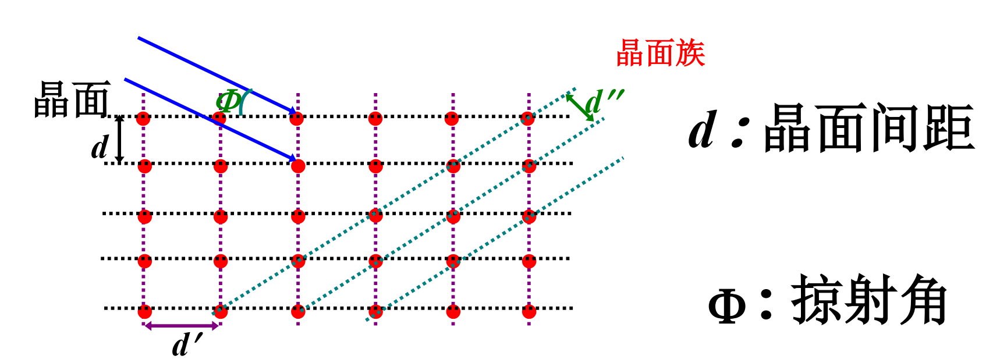
布喇格公式
2 d sin φ = k λ 2d\sin\varphi = k\lambda
2 d sin φ = k λ
这是加强条件，2 2 2
双缝干涉：明条纹条件d sin θ = k λ d\sin\theta = k\lambda d sin θ = k λ x = 2 f tan θ ≈ 2 f sin θ = k 2 f λ d x = 2f\tan\theta \approx 2f\sin\theta = k\frac{2f\lambda}{d} x = 2 f tan θ ≈ 2 f sin θ = k d 2 f λ I = 2 I 0 + 2 I 0 cos φ = 4 I 0 cos 2 φ 2 I = 2I_0+2I_0\cos\varphi = 4I_0\cos^2\frac{\varphi}{2} I = 2 I 0 + 2 I 0 cos φ = 4 I 0 cos 2 2 φ φ = 2 π λ d sin θ \varphi = \frac{2\pi}{\lambda}d\sin\theta φ = λ 2 π d sin θ
单缝衍射：暗纹条件a sin θ = k λ a\sin\theta = k\lambda a sin θ = k λ I = I 0 ( sin β β ) 2 I = I_0\left(\frac{\sin\beta}{\beta}\right)^2 I = I 0 ( β s i n β ) 2 β = π λ a sin θ \beta = \frac{\pi}{\lambda}a\sin\theta β = λ π a sin θ
其他有空再说，mmd没时间了。
单色辐出度$$M_\lambda(T) = \frac{\mathrm d E_\lambda}{\mathrm d \lambda}$$
即单位面积单位时间辐射出的波长为λ \lambda λ
辐出度$$M(T) = \int_0^{\infty} M_\lambda(T)\mathrm d \lambda$$
吸收比$$\alpha(T) = \frac{E{\text{吸收}}}{E {\text{入射}}}$$
反射比$$r(T) = \frac{E{反射}}{E \text{入射}}$$
对于波长为λ \lambda λ α λ \alpha_\lambda α λ r λ r_\lambda r λ α λ ( T ) + r λ ( T ) = 1 \alpha_\lambda(T) + r_\lambda(T) = 1 α λ ( T ) + r λ ( T ) = 1
好的吸收体也是好的发射体。
温度一定时单色辐出度和单色吸收比的比值与物质无关，即
M ( λ , T ) α ( λ , T ) = M 0 ( λ , T ) \frac{M(\lambda, T)}{\alpha(\lambda, T)} = M_0(\lambda, T)
α ( λ , T ) M ( λ , T ) = M 0 ( λ , T )
其中M 0 M_0 M 0
实验证明M 0 ( T ) = σ T 4 M_0(T) = \sigma T^4 M 0 ( T ) = σ T 4 σ \sigma σ
极值波长λ m \lambda_m λ m T T T T λ m = b T\lambda_m = b T λ m = b
M 0 ( ν , T ) = 2 π ν 2 c 2 h ν e h ν k T − 1 M_0(\nu, T) = \frac{2\pi\nu^2}{c^2}\frac{h\nu}{e^{\frac{h\nu}{kT}} - 1}
M 0 ( ν , T ) = c 2 2 π ν 2 e k T h ν − 1 h ν
其中第一项2 π ν 2 c 2 \frac{2\pi\nu^2}{c^2} c 2 2 π ν 2 ν \nu ν ν + d ν \nu + \mathrm d \nu ν + d ν
推导（第二部分）：
普朗克假定ε = h ν \varepsilon = h\nu ε = h ν ν \nu ν h ν h\nu h ν
根据玻尔兹曼分布，能量为ε \varepsilon ε ν \nu ν e − ε k T e^{\frac{-\varepsilon}{kT}} e k T − ε
ε ‾ = ∑ n = 0 ∞ n h ν e − − n h ν k T ∑ n = 0 ∞ e − − n h ν k T = ∑ n = 0 ∞ n x k T e − n x ∑ n = 0 ∞ e − n x 令 x = h ν k T = − x k T d ∑ n = 0 ∞ e − n x d x ∑ n = 0 ∞ e − n x = − x k T d ( 1 − e − x ) − 1 d x ( 1 − e − x ) − 1 = h ν e − x 1 − e − h ν k T = h ν 1 e h ν k T − 1 \begin{aligned}\overline \varepsilon &= \frac{\sum_{n = 0}^{\infty} nh\nu e^{-\frac{-nh\nu}{kT}}}{\sum_{n = 0}^{\infty} e^{-\frac{-nh\nu}{kT}}}\\
&= \frac{\sum_{n = 0}^{\infty} nxkT e^{-nx}}{\sum_{n = 0}^{\infty} e^{-nx}} & \text{令}x=\frac{h\nu}{kT}\\
&= \frac{-xkT\frac{\mathrm d\sum_{n = 0}^{\infty}e^{-nx}}{\mathrm d x} }{\sum_{n = 0}^{\infty}e^{-nx}}\\
&= -xkT \frac{\frac{\mathrm d (1 - e^{-x})^{-1}}{\mathrm d x}}{(1 - e^{-x})^{-1}}\\
&= h\nu \frac{e^{-x}}{1 - e^{-\frac{h\nu}{kT}}}\\
&= h\nu\frac{1}{e^{\frac{h\nu}{kT}} - 1}
\end{aligned} ε = ∑ n = 0 ∞ e − k T − n h ν ∑ n = 0 ∞ n h ν e − k T − n h ν = ∑ n = 0 ∞ e − n x ∑ n = 0 ∞ n x k T e − n x = ∑ n = 0 ∞ e − n x − x k T d x d ∑ n = 0 ∞ e − n x = − x k T ( 1 − e − x ) − 1 d x d ( 1 − e − x ) − 1 = h ν 1 − e − k T h ν e − x = h ν e k T h ν − 1 1 令 x = k T h ν
这个公式的第二部分没有问题，但是第一部分2 π ν 2 c 2 \frac{2\pi\nu^2}{c^2} c 2 2 π ν 2 ν \nu ν λ \lambda λ ν \nu ν λ \lambda λ
具体而言，由于f ( x ) f(x) f ( x ) g ( y ) g(y) g ( y ) ∫ x 1 x 2 f ( x ) d x \int_{x_1}^{x_2} f(x)\mathrm d x ∫ x 1 x 2 f ( x ) d x ∫ y 1 y 2 g ( y ) d y \int_{y_1}^{y_2} g(y)\mathrm d y ∫ y 1 y 2 g ( y ) d y y 1 = h ( x 1 ) , y 2 = h ( x 2 ) y_1 = h(x_1), y_2 = h(x_2) y 1 = h ( x 1 ) , y 2 = h ( x 2 ) ∫ y 1 y 2 g ( y ) d y = ∫ x 1 x 2 g ( y ) h ′ ( x ) d x \int_{y_1}^{y_2} g(y)\mathrm d y = \int_{x_1}^{x_2} g(y)h'(x)\mathrm d x ∫ y 1 y 2 g ( y ) d y = ∫ x 1 x 2 g ( y ) h ′ ( x ) d x g ( y ) h ′ ( x ) = f ( x ) g(y)h'(x) = f(x) g ( y ) h ′ ( x ) = f ( x ) g ( y ) = f ( x ) d x d y g(y) = f(x)\frac{\mathrm d x}{\mathrm d y} g ( y ) = f ( x ) d y d x
根据普朗克公式，可以得到
M ( T ) = σ T 4 M(T) = \sigma T^4
M ( T ) = σ T 4
和
T λ m = b T\lambda_m = b
T λ m = b
光电效应遏止电压U c U_c U c
1 2 m v 2 = e U c = h ν − A \frac{1}{2}mv^2 = eU_c = h\nu - A
2 1 m v 2 = e U c = h ν − A
当ν < A / h \nu < A/h ν < A / h
ν 0 = A / h \nu_0 = A/h ν 0 = A / h
当频率不同、光强相同（单位时间单位面积总能量相同）时，如果都能发生光电效应，频率低的光电流强（粒子数多）。
Δ λ = λ − λ 0 = h m 0 c ( 1 − cos θ ) \Delta \lambda = \lambda - \lambda_0 = \frac{h}{m_0c}(1 - \cos \theta)
Δ λ = λ − λ 0 = m 0 c h ( 1 − cos θ )
阴极发射电子，到低压汞蒸气管（加正向电压，加速），然后加反向电压，让电子减速，测电子到的多少（电流大小）。
发现增大正向电压，电流变大，但是会突然减小（刚好到能级能量差，激发了汞原子，电子能量损失）。
有好多个峰，每个下降就表示汞激发，并且可以看出有发光。
一般都是第一激发态，因为电子频繁和汞原子发生碰撞，一旦达到第一激发态就立马激发。
差不多4.89 e V 4.89\mathrm{eV} 4 . 8 9 e V 4.89 V 4.89\mathrm {V} 4 . 8 9 V
物质波满足：
{ E = h ν p = h λ \begin{cases}E = h\nu\\p = \frac{h}{\lambda}\end{cases}
{ E = h ν p = λ h
令ℏ = h 2 π , k = 2 π λ \hbar = \frac{h}{2\pi}, k = \frac{2\pi}{\lambda} ℏ = 2 π h , k = λ 2 π
{ E = ℏ ω p = ℏ k \begin{cases}E = \hbar\omega\\p = \hbar k\end{cases}
{ E = ℏ ω p = ℏ k
频率是不可观测的，但是波长有意义。
波函数
Ψ ( x , t ) = A e i ( k x − ω t ) = A e i ℏ ( p x − E t ) \Psi(x, t) = Ae^{i(kx - \omega t)} = Ae^{\frac{i}{\hbar}(px - Et)}
Ψ ( x , t ) = A e i ( k x − ω t ) = A e ℏ i ( p x − E t )
德布罗意波认为电子绕原子核是驻波，得出角动量量子化。
电子在无限深井里的物质波：驻波条件，得出量子化（空间越小，量子化越明显，能极差越大）。
首先是用类似布拉格干涉的方法，往晶格上发射电子；
λ = 2 d sin ϕ = h p \lambda = 2d\sin\phi = \frac{h}{p}
λ = 2 d sin ϕ = p h
然后电子干涉、衍射等。
波函数的波强：
∣ Ψ ∣ 2 = Ψ Ψ ∗ \left|\Psi\right|^2 = \Psi\Psi^*
∣ Ψ ∣ 2 = Ψ Ψ ∗
在t t t
波函数满足条件：单值、有限、连续。
单值 ：每个点一个值；有限 ：任意区间可积；连续 ：二阶导数存在。
波函数还要满足归一化条件：∫ ∣ Ψ ( x , t ) ∣ 2 d V = 1 \int \left|\Psi(\bm x, t)\right|^2\mathrm d V = 1 ∫ ∣ Ψ ( x , t ) ∣ 2 d V = 1
双缝衍射时，两个单缝的波函数线性叠加。
Δ x ⋅ Δ p x ≥ ℏ / 2 \Delta x\cdot\Delta p_x\geq \hbar/2
Δ x ⋅ Δ p x ≥ ℏ / 2
Δ y ⋅ Δ p y ≥ ℏ / 2 \Delta y\cdot\Delta p_y\geq \hbar/2
Δ y ⋅ Δ p y ≥ ℏ / 2
Δ z ⋅ Δ p z ≥ ℏ / 2 \Delta z\cdot\Delta p_z\geq \hbar/2
Δ z ⋅ Δ p z ≥ ℏ / 2
Δ E ⋅ Δ t ≥ ℏ / 2 \Delta E\cdot\Delta t\geq \hbar/2
Δ E ⋅ Δ t ≥ ℏ / 2
当x x x v x v_x v x Δ x \Delta x Δ x Δ v x \Delta v_x Δ v x
波函数
Ψ ( x , t ) = A e i ℏ ( p x x − E t ) \Psi(x, t) = Ae^{\frac{i}{\hbar}(p_xx - Et)}
Ψ ( x , t ) = A e ℏ i ( p x x − E t )
求导得到
{ ∂ ∂ t Ψ ( x , t ) = − i E ℏ Ψ ( x , t ) ∂ ∂ x 2 Ψ ( x , t ) = − p x 2 ℏ 2 Ψ ( x , t ) \begin{cases}
\frac{\partial}{\partial t} \Psi(x, t) = -\frac{iE}{\hbar}\Psi(x, t)\\
\frac{\partial}{\partial x^2} \Psi(x, t) = -\frac{p_x^2}{\hbar^2}\Psi(x, t)
\end{cases} { ∂ t ∂ Ψ ( x , t ) = − ℏ i E Ψ ( x , t ) ∂ x 2 ∂ Ψ ( x , t ) = − ℏ 2 p x 2 Ψ ( x , t )
由p 2 2 m = E \frac{p^2}{2m} = E 2 m p 2 = E
i ℏ ∂ ∂ t Ψ ( r , t ) = − ℏ 2 2 m ∇ 2 ⋅ Ψ ( r , t ) i\hbar\frac{\partial}{\partial t} \Psi(\bm r, t) = -\frac{\hbar^2}{2m} \nabla^2\cdot \Psi(\bm r, t)
i ℏ ∂ t ∂ Ψ ( r , t ) = − 2 m ℏ 2 ∇ 2 ⋅ Ψ ( r , t )
推广到有势能的情况：
i ℏ ∂ ∂ t Ψ ( r , t ) = [ − ℏ 2 2 m ∇ 2 + U ( r , t ) ] Ψ ( r , t ) i\hbar\frac{\partial}{\partial t} \Psi(\bm r, t) = [-\frac{\hbar^2}{2m} \nabla^2 + U(\bm r, t)] \Psi(\bm r, t)
i ℏ ∂ t ∂ Ψ ( r , t ) = [ − 2 m ℏ 2 ∇ 2 + U ( r , t ) ] Ψ ( r , t )
定义哈密顿算符
H ^ = − ℏ 2 2 m + U ( r , t ) = − ( ∂ 2 ∂ x 2 + ∂ 2 ∂ y 2 + ∂ 2 ∂ z 2 ) + U ( r , t ) \hat H = -\frac{\hbar^2}{2m} + U(\bm r, t) = -(\frac{\partial^2}{\partial x^2} + \frac{\partial^2}{\partial y^2} + \frac{\partial^2}{\partial z^2}) + U(\bm r, t)
H ^ = − 2 m ℏ 2 + U ( r , t ) = − ( ∂ x 2 ∂ 2 + ∂ y 2 ∂ 2 + ∂ z 2 ∂ 2 ) + U ( r , t )
有
i ℏ ∂ ∂ t Ψ ( r , t ) = H ^ Ψ ( r , t ) i\hbar \frac{\partial}{\partial t} \Psi(\bm r, t) = \hat H\Psi(\bm r, t)
i ℏ ∂ t ∂ Ψ ( r , t ) = H ^ Ψ ( r , t )
假设薛定谔方程中∂ H ^ ∂ t = 0 \frac{\partial \hat H}{\partial t} = 0 ∂ t ∂ H ^ = 0
Ψ ( r , t ) = Φ ( r ) ⋅ T ( t ) \Psi(\bm r, t) = \Phi(\bm r)\cdot T(t)
Ψ ( r , t ) = Φ ( r ) ⋅ T ( t )
代入含时薛定谔方程得到
i ℏ Φ ( r ) d d t T ( t ) = H ^ Φ ( r ) T ( t ) i\hbar\Phi(\bm r)\frac{\mathrm d}{\mathrm d t}T(t) = \hat H\Phi(\bm r)T(t)
i ℏ Φ ( r ) d t d T ( t ) = H ^ Φ ( r ) T ( t )
除以Φ ( r ) T ( t ) \Phi(\bm r)T(t) Φ ( r ) T ( t )
i ℏ d T ( t ) d t ⋅ 1 T ( t ) = 1 Φ ( r ) H ^ Φ ( r ) i\hbar \frac{\mathrm d T(t)}{\mathrm d t}\cdot\frac{1}{T(t)} = \frac{1}{\Phi(\bm r)}\hat H\Phi(\bm r)
i ℏ d t d T ( t ) ⋅ T ( t ) 1 = Φ ( r ) 1 H ^ Φ ( r )
然后用之前的最原始的方程，可以得到
i ℏ d T ( t ) d t = E T ( t ) H ^ Φ ( r ) = E Φ ( r ) i\hbar \frac{\mathrm d T(t)}{\mathrm d t} = ET(t)\\
\hat H\Phi(\bm r) = E\Phi(\bm r) i ℏ d t d T ( t ) = E T ( t ) H ^ Φ ( r ) = E Φ ( r )
可以解得
T ( t ) = C e − i ℏ E t T(t) = Ce^{-\frac{i}{\hbar}Et}
T ( t ) = C e − ℏ i E t
第二个方程不好求解，但是有
( − ℏ 2 2 m ∇ 2 + U ( r ) ) Φ ( r ) = E Φ ( r ) (-\frac{\hbar^2}{2m}\nabla^2 + U(\bm r))\Phi(\bm r) = E\Phi(\bm r)
( − 2 m ℏ 2 ∇ 2 + U ( r ) ) Φ ( r ) = E Φ ( r )
对于满足物理定义的E E E Φ ( r ) \Phi(\bm r) Φ ( r ) E E E
Ψ E ( r , t ) = Φ E ( r , t ) e − i ℏ E T \Psi_E(\bm r, t) = \Phi_E(\bm r, t)e^{-\frac{i}{\hbar}ET}
Ψ E ( r , t ) = Φ E ( r , t ) e − ℏ i E T
可以看出定态波函数的概率密度函数（模长平方）和时间无关（分布稳定）。
对于一个无限深阱（0 < x < a 0<x<a 0 < x < a
U ( x ) = { 0 0 < x < a ∞ otherwise U(x) = \begin{cases}0 & 0<x<a\\\infty & \text{otherwise}\end{cases}
U ( x ) = { 0 ∞ 0 < x < a otherwise
对于阱内，有
− ℏ 2 2 m d Φ ( x ) d x 2 = E Φ ( x ) -\frac{\hbar^2}{2m}\frac{\mathrm d \Phi(x)}{\mathrm d x^2} = E\Phi(x)
− 2 m ℏ 2 d x 2 d Φ ( x ) = E Φ ( x )
得到
2 m E ℏ 2 Φ ( x ) + d Φ ( x ) d x 2 = 0 \frac{2mE}{\hbar^2}\Phi(x) + \frac{\mathrm d \Phi(x)}{\mathrm d x^2} = 0
ℏ 2 2 m E Φ ( x ) + d x 2 d Φ ( x ) = 0
令k 2 = 2 m E ℏ 2 k^2 = \frac{2mE}{\hbar^2} k 2 = ℏ 2 2 m E ℏ 2 k 2 = p 2 = 2 m E \hbar^2 k^2 = p^2 = 2mE ℏ 2 k 2 = p 2 = 2 m E Φ ( x ) = sin k x \Phi(x) = \sin kx Φ ( x ) = sin k x Φ ( x ) = cos k x \Phi(x) = \cos kx Φ ( x ) = cos k x
Φ ( x ) = A cos k x + B sin k x \Phi(x) = A\cos kx + B\sin kx
Φ ( x ) = A cos k x + B sin k x
阱外有
− ℏ 2 2 m d Φ ( x ) d x 2 + ∞ Φ ( x ) = E Φ ( x ) -\frac{\hbar^2}{2m}\frac{\mathrm d \Phi(x)}{\mathrm d x^2} + \infty\Phi(x) = E\Phi(x)
− 2 m ℏ 2 d x 2 d Φ ( x ) + ∞ Φ ( x ) = E Φ ( x )
为了让等式左边有限，只有唯一解Φ ( x ) = 0 \Phi(x) = 0 Φ ( x ) = 0
根据连续性一定有
Φ ( 0 ) = 0 , Φ ( a ) = 0 \Phi(0) = 0, \Phi(a) = 0
Φ ( 0 ) = 0 , Φ ( a ) = 0
得到
{ A = 0 A cos k a + B sin k a = 0 \begin{cases}A = 0\\
A\cos ka + B\sin ka = 0
\end{cases} { A = 0 A cos k a + B sin k a = 0
所以A = B = 0 A = B= 0 A = B = 0 A = 0 , sin k a = 0 ⟺ k a = n π A=0, \sin ka = 0\iff ka = n\pi A = 0 , sin k a = 0 ⟺ k a = n π
所以得到$$\frac{2mE}{\hbar2}a 2 = n2\pi 2$$
也就是
E = π 2 ℏ 2 2 m a 2 n 2 E = \frac{\pi^2\hbar^2}{2ma^2}n^2
E = 2 m a 2 π 2 ℏ 2 n 2
继续深究Φ ( x ) \Phi(x) Φ ( x )
Φ ( x ) = B sin k x \Phi(x) = B\sin kx
Φ ( x ) = B sin k x
根据归一性，有
∫ − ∞ ∞ Φ ( x ) ∗ Φ ( x ) d x = ∫ 0 a B 2 sin 2 ( n π x a ) d x = 1 ⟹ B 2 2 a = 1 ⟹ B = 2 a \begin{aligned}
&\int_{-\infty}^{\infty} \Phi(x)^*\Phi(x)\mathrm d x \\
=& \int_{0}^{a} B^2\sin^2 (\frac{n\pi x}{a})\mathrm d x = 1\\
\implies& \frac{B^2}{2}a = 1\\
\implies& B = \sqrt{\frac{2}{a}}
\end{aligned} = ⟹ ⟹ ∫ − ∞ ∞ Φ ( x ) ∗ Φ ( x ) d x ∫ 0 a B 2 sin 2 ( a n π x ) d x = 1 2 B 2 a = 1 B = a 2
所以说得到
Φ ( x ) = { 2 a sin ( n π x a ) x ∈ ( 0 , a ) 0 otherwise \Phi(x) = \begin{cases}
\sqrt{\frac{2}{a}}\sin \left(\frac{n\pi x}{a}\right) & x\in(0, a)\\
0 & \text{otherwise}
\end{cases} Φ ( x ) = { a 2 sin ( a n π x ) 0 x ∈ ( 0 , a ) otherwise
根据一开始得到的能量公式，可以看出a a a Δ E \Delta E Δ E
多个正交归一的本征函数的线性组合。
研究势能函数突变的情况，发现有概率穿越。
需要掌握边界条件连续、边界条件导数连续。
用U = q 4 π ε 0 r U = \frac{q}{4\pi\varepsilon_0 r} U = 4 π ε 0 r q
E n = − m e 4 32 π 2 ε 0 2 ℏ 2 ⋅ 1 n 2 E_n = - \frac{me^4}{32\pi^2\varepsilon_0^2\hbar^2} \cdot\frac{1}{n^2}
E n = − 3 2 π 2 ε 0 2 ℏ 2 m e 4 ⋅ n 2 1
这些E n E_n E n
波函数在θ = 0 , π \theta = 0, \pi θ = 0 , π L L L l l l
{ L = l ( l + 1 ) ℏ l = 0 , 1 , ⋯ , n − 1 \begin{cases}
L = \sqrt{l(l + 1)}\hbar & l = 0, 1, \cdots, n - 1\\
\end{cases} { L = l ( l + 1 ) ℏ l = 0 , 1 , ⋯ , n − 1
ϕ \phi ϕ ϕ + 2 π \phi + 2\pi ϕ + 2 π z z z L z L_z L z m l m_l m l
{ L z = m l ℏ m l = 0 , ± 1 , ± 2 , ⋯ , ± l \begin{cases}
L_z = m_l\hbar & m_l = 0, \plusmn 1, \plusmn 2, \cdots, \plusmn l
\end{cases} { L z = m l ℏ m l = 0 , ± 1 , ± 2 , ⋯ , ± l
能级由于磁量子数的不同，l = 1 l=1 l = 1
发现除了以上自由度，基态的银原子还可以在磁场里产生两种不同的路径。
假设电子有自旋角动量：
S = s ( s + 1 ) ℏ S z = m s ℏ S = \sqrt{s(s + 1)}\hbar\\
S_z = m_s\hbar S = s ( s + 1 ) ℏ S z = m s ℏ
其中s s s 1 2 \frac{1}{2} 2 1 m s m_s m s ± 1 2 \plusmn\frac{1}{2} ± 2 1
总结表：
量子数
符号
取值范围
物理意义
决定因素
主量子数 $ n $
$ n = 1, 2, 3, \dots $
能量E n = − 13.6 1 n 2 e V E_n = -13.6\frac{1}{n^2}\mathrm{eV} E n = − 1 3 . 6 n 2 1 e V
电子所处的电子层（如 K, L, M, … 层）。
角量子数 $ l $
$ l = 0, 1, 2, \dots, n-1 $
角动量大小L = l ( l + 1 ) ℏ L = \sqrt{l(l+1)}\hbar L = l ( l + 1 ) ℏ
对应亚层符号：
磁量子数 $ m_l $
$ m_l = 0, \plusmn 1, \plusmn 2, \cdots, \plusmn l $
L L L z z z L z = m l ℏ L_z=m_l\hbar L z = m l ℏ 每个 $ l $ 对应 $ (2l+1) $ 个取值，即每个亚层中的轨道数目（如 p 轨道有 3 个方向：$ p_x, p_y, p_z $）。
自旋磁量子数 $ m_s $
$ m_s = +\frac{1}{2} $ 或 $ -\frac{1}{2} $
自旋角动量S S S z z z S z = m z ℏ S_z = m_z\hbar S z = m z ℏ
每个原子轨道最多容纳两个自旋相反的电子（泡利不相容原理）。